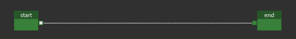
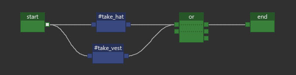
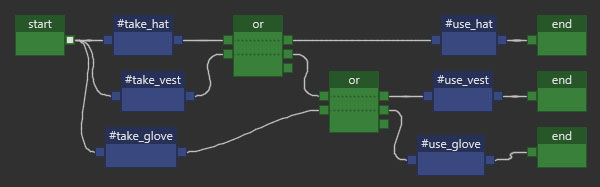
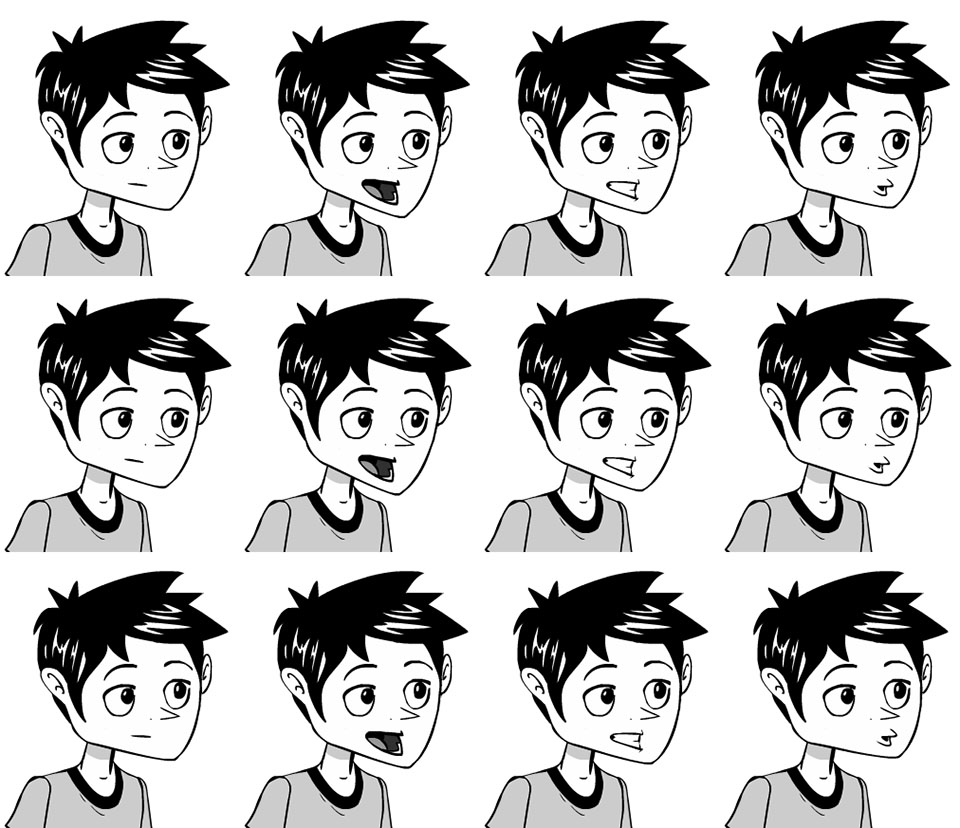
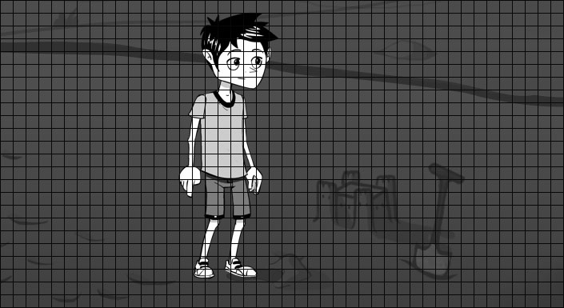
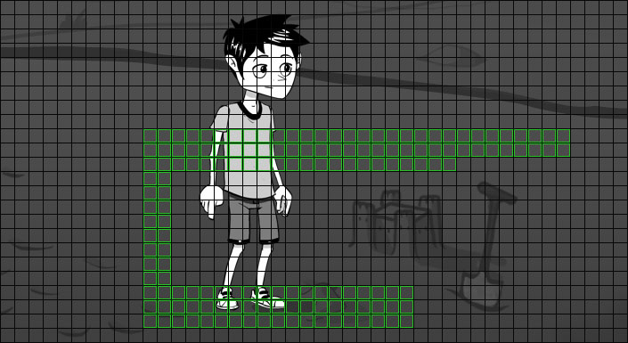
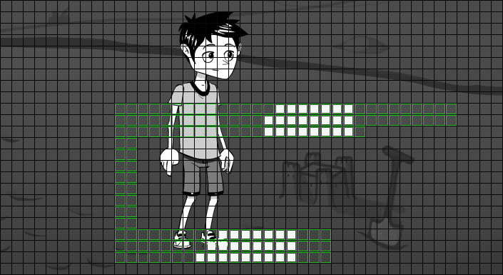
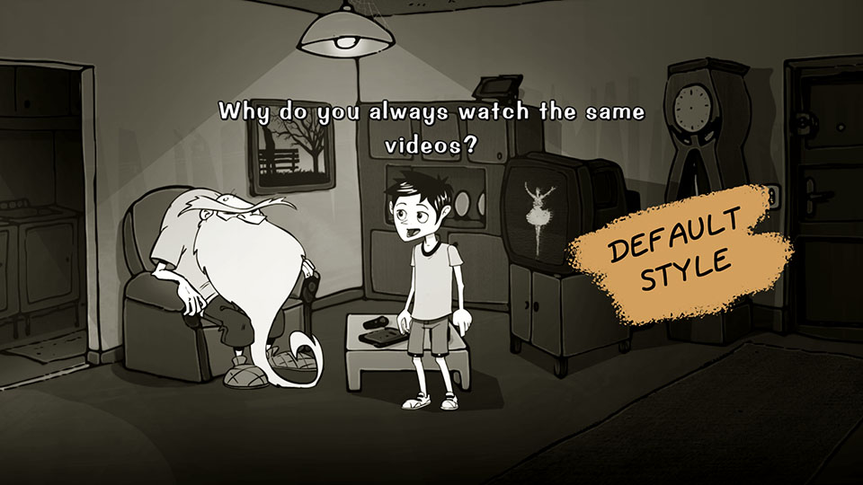
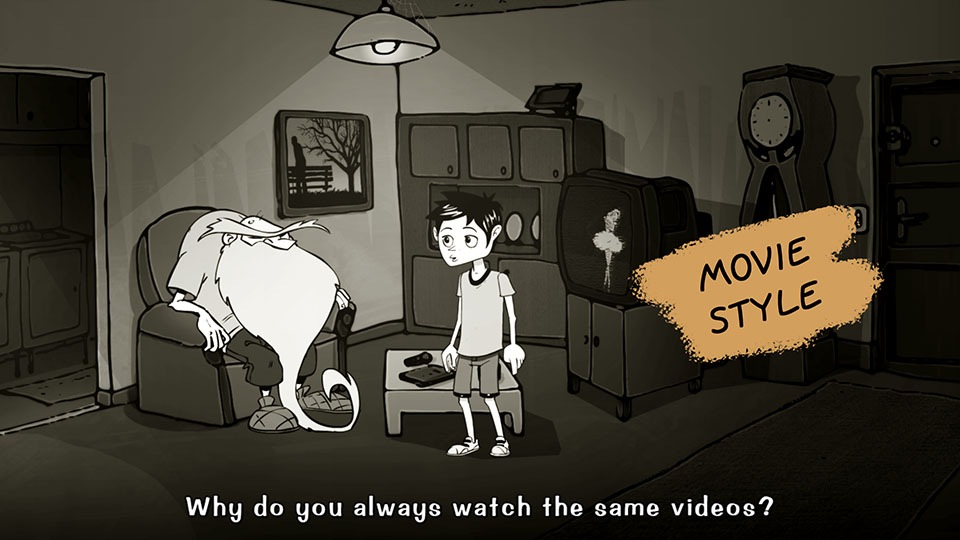
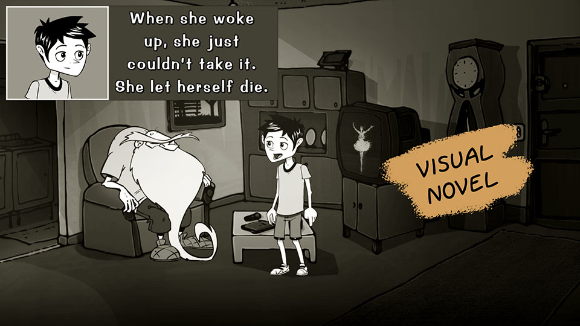

Note
seccia.dev version 4 28 avril 2026
INTRODUCTIONUnityInstallation du logicielLicenceCompilation du projet UnityPréférencesDocumentationMes jeux créés avec seccia.devGAMEPLAYQu’est-ce qu’un jeu vidéo ?Qu’est-ce qu’un jeu d’aventure narratif ?Les quatre profils de gameplayINTERFACEBarre d’outilsBarre de navigationPROJETParamètres du projetParamètres des configurationsSavegameCréditsPUZZLEBoîte nodaleLes bonnes pratiquesITEMIcôneTitreÉtatPLAYERIcôneDéfilement & ZoomIntégration par le codeOBJETObjetAnimationRégionParoleInstanceLes bonnes pratiquesSCÈNEScèneLes propriétés de la scèneLes actions de la scèneLes conditions de la scèneLes événements de la scèneStillLes propriétés du stillInstanceLes propriétés de l’instanceLes actions de l’instanceLes conditions de l’instanceLes événements de l’instanceLabelLes propriétés du labelLes actions du labelLes conditions du labelLes événements du labelShotLes propriétés du shotLes actions du shotWallLes propriétés du wallGrille & CelluleLes propriétés de la celluleLes actions de la celluleLes conditions de la celluleLes événements de la cellulePath & SpotLes propriétés du pathLes propriétés du spotLes actions du spotLes conditions du spotLes événements du spotDrag & DropLes événements du glisser-déposerTimelineLes shotsLes transitionsL’interpolation splineLa musique et les sous-titresLes événementsGestionnaire de scènesLes bonnes pratiquesDIALOGUEDialogueLes propriétés du dialogueLes actions du dialogueLes conditions du dialogueLes événements du dialogueBoîte rouge « Choice »Les propriétés des choixLes actions des choixLes conditions des choixLes événements des choixBoîte bleue « Sentence »Les propriétés des répliquesLes conditions des répliquesLes événements des répliquesBoîte verte « Start »Les propriétés de StartLes conditions de StartLes événements de StartInterfaceStyleLes répliquesLes choixIntégration par le codeLOGIQUE DE JEULangagestartupdatetaskorrandomschedulewaitrestartendscriptActionsanimatecameracinematicexamineinterpolatejumplightpathplayerpopuplogicselectshowsongstopsuccesstaketalktimelinesleepwalkConditionsboolean isdialog hasdialog isinstance hasplayer hasplayer ispuzzle isscene hasscene issequence isvalue isÉvénementsLes filtreson clickon detach itemon drag instanceon drop instanceon end songon enter dialogon enter sceneon exit dialogon exit sceneon inputon reach cellon reach spoton repeaton reveal choiceon sayon select labelon select layouton select instanceon puzzleon sequenceon change playeron timelineon use itemon use labelon use instanceon use playeron walkIntégration par le codeEFFETInstancesScènesBrightness, Constrast, SaturationBeaconBlurColorizationCurveFireGrainGrayscaleLook Up TableRainIntégration par les éditeursIntégration par le codeCINÉMATIQUEVidéo, Audio et Sous-titreEncodage d’un fichier vidéo MP4Intégration par le codeAUDIOMusique et ambiance sonoreBruitageVoixSAUVEGARDESauvegardeChapitresDonnées partagéesLOCALISATIONÉdition interneÉdition externeAlphabet Latin, Cyrillique et autresSCRIPTSyntaxeVariableBUILDLive, Debug et ReleaseAndroidiOSWebPost-buildLigne de commandePROJET UNITYFonctions exposéesCallbackInterlude
INTRODUCTION
Sylvain Seccia est un créateur indépendant dont le parcours singulier traverse les univers du code, de l’image, du son et de la narration. Formé au développement informatique, il choisit très tôt de ne pas suivre les sentiers balisés du salariat ou de la production en série. Il préfère expérimenter, créer ses propres outils, explorer ses idées jusqu’au bout, seul s’il le faut. Pour lui, chaque projet est une œuvre artisanale, un écosystème qu’il conçoit de A à Z avec une obsession : rester fidèle à sa vision.
Cette quête d’indépendance s’exprime dès les années 2000, lorsqu’il fonde son propre environnement de développement en C++. Il y conçoit des moteurs, des bibliothèques, des interfaces, des jeux 3D, souvent à contre-courant des tendances du moment. Sa philosophie : bâtir des fondations solides, légères et compréhensibles, plutôt que d’empiler des couches technologiques opaques. Il voit dans la programmation un langage à part entière — un moyen d’expression, aussi précis qu’un pinceau ou une plume.
Mais au fil du temps, la technique ne lui suffit plus. Il ressent le besoin de raconter et de transmettre des émotions. C’est ainsi qu’en 2012 naît Désiré, un jeu d’aventure en 2D à la fois mélancolique, tendre et dérangeant. Loin des logiques commerciales ou des formats attendus, Désiré est un récit personnel, en noir et blanc, inspiré d’expériences vécues, de souvenirs, de silences et de fragments d’imaginaire. Sylvain en écrit le scénario, compose les musiques, conçoit les décors, développe les mécaniques… et surtout, crée l’outil qui lui permettra de donner vie à ce monde : seccia.dev.

Pensé à l’origine comme une solution maison, seccia.dev devient bien plus qu’un outil interne : c’est un logiciel de création centrée sur la narration. Une interface claire, un scripting accessible, une logique de scènes, de dialogues, de déclencheurs. Tout est fait pour que l’auteur garde la main, sans se noyer dans des considérations techniques. C’est cette vision — celle d’un développeur au service de la narration — qui a permis à Désiré de toucher un large public, avec plus de trois millions de téléchargements à travers le monde.
Aujourd’hui, Sylvain poursuit son chemin avec la même exigence. Il continue de faire évoluer seccia.dev, non comme un produit purement commercial, mais comme un compagnon de création. Il travaille sur de nouveaux projets narratifs, explore des formats hybrides, imagine des récits interactifs où la technique se fait oublier. Son moteur est le même qu’à ses débuts : l’envie de raconter autrement, d’émouvoir par la simplicité, de rester libre.
Ce livre, comme seccia.dev, est une invitation à créer librement, à se réapproprier les moyens de production et à raconter sans se trahir. Il ne s’adresse pas aux programmeurs chevronnés, mais aux conteurs curieux, aux rêveurs méthodiques, aux créateurs en quête de structure pour libérer leur imaginaire. Si vous cherchez une solution pour coder moins et raconter plus, alors vous êtes au bon endroit.
Unity
Les jeux créés avec seccia.dev peuvent être déployés sur de multiples plateformes grâce à un runtime développé avec Unity. En pratique, cela implique de générer les builds Unity à partir du projet inclus dans le dossier d’installation du logiciel.
Afin de simplifier cette étape souvent fastidieuse, seccia.dev embarque un outil de compilation automatique du projet Unity, ainsi qu’un système d’intégration des builds générés. Cette architecture respecte les conditions générales d’utilisation de Unity, notamment en ce qui concerne la nécessité pour chaque développeur de disposer de sa propre licence Unity.
Pour permettre un prototypage rapide et faciliter les phases de test, des versions précompilées du runtime sont fournies pour Windows, Android et Web. Il convient toutefois de noter que ces versions sont exclusivement destinées à un usage en développement, et ne doivent en aucun cas être utilisées pour une distribution commerciale ou publique finale.
Installation du logiciel
Avant de pouvoir profiter des fonctionnalités du logiciel, il est nécessaire de suivre quelques consignes afin de s’assurer que tous les composants soient correctement installés.
Le logiciel requiert :
Windows 11 à jour de préférence
Une résolution Full HD ou plus
Et idéalement un SSD pour optimiser les accès disque fréquents.
L’installation de l’application Seccia Launcher est disponible à l’adresse suivante :
Les mises à jour seront disponibles gratuitement. Vous serez tenu informé par une notification qui apparaîtra au sein de l’interface de l’application Seccia Launcher à chaque fois qu’une nouvelle version sera publiée.
Licence
seccia.dev est entièrement gratuit. Aucune fonctionnalité n’est délibérément restreinte afin de limiter l’usage du logiciel ou d’en brider le potentiel. Vous êtes libre de créer, développer et finaliser vos jeux, qu’ils soient destinés à un usage personnel ou commercial, sans aucune contrainte technique imposée.
Seuls certains services annexes, tels que l’assistance personnalisée ou des prestations complémentaires, peuvent être proposés de manière payante. Pour en savoir plus à ce sujet, je vous invite à consulter le site officiel :
À partir de la version 4, le runtime seccia.dev est officiellement publié sous licence Mozilla Public License 2.0 (MPL 2.0).
Ce choix marque un engagement durable en faveur de la transparence, de la pérennité des projets et de la liberté d’utilisation.
seccia.dev repose désormais sur un modèle de distribution structuré en deux éléments distincts :
1. Éditeur propriétaire (IDE)
L’éditeur seccia.dev et le Seccia Launcher restent entièrement propriétaires. L’éditeur constitue le cœur de la chaîne de création et définit le format des données projet. Il est distribué exclusivement par Sylvain Seccia et demeure fermé au public.
2. Runtime ouvert sous licence MPL 2.0
Le runtime Unity utilisé pour exécuter les jeux est désormais open source. Les utilisateurs peuvent consulter, modifier, compiler et redistribuer le runtime conformément aux termes de la licence MPL 2.0. Seuls les fichiers réellement modifiés doivent être mis à disposition lorsqu’un runtime modifié est redistribué. Les jeux exportés restent pleinement la propriété de leurs auteurs et peuvent être distribués ou commercialisés sans restriction.
Précisions importantes sur le modèle :
Compatibilité : chaque version officielle de seccia.dev inclut un runtime garanti compatible avec l’éditeur correspondant. Les forks communautaires sont autorisés, mais doivent être présentés comme non officiels.
Contributions : corrections et améliorations sont bienvenues. Cependant, l’intégration au runtime officiel reste laissée à la discrétion exclusive de l’auteur.
Ce modèle hybride permet de concilier les bénéfices de l’ouverture du code avec la stabilité créative et technique d’un environnement contrôlé.
Compilation du projet Unity
La première étape consiste à télécharger puis installer la version actuelle de Unity Hub depuis le site officiel :
Lors de l’installation, veillez à sélectionner les modules correspondant aux plateformes suivantes : Android (y compris les sous-modules nécessaires tels que les SDK), iOS, Web et Windows.
Une fois Unity correctement installé, lancez seccia.dev, ouvrez les Préférences, sélectionnez les plateformes cibles souhaitées, puis cliquez sur le bouton Build selected platforms pour démarrer la compilation. Il ne vous reste plus qu’à patienter pendant la génération des builds.
Par défaut, seccia.dev utilise automatiquement la version d’Unity la plus récente détectée sur votre machine. Toutefois, il est possible de spécifier manuellement un chemin d’accès vers une version particulière depuis les Préférences du logiciel.
Enfin, si vous souhaitez modifier le projet Unity intégré afin d’y ajouter des fonctionnalités spécifiques à votre jeu, cela est tout à fait permis par les conditions d’utilisation. Cependant, il est vivement déconseillé d’altérer la structure ou les propriétés fondamentales du projet Unity. De telles modifications pourraient en effet entraîner des erreurs lors de la compilation.
Préférences
Les préférences sont accessibles depuis la barre d’outils principale. Si vous rencontrez des problèmes de stabilité, vous pourrez désactiver la prise en charge du multithreading et de l’accélération GPU.
Documentation
L’ensemble des fonctions du langage de seccia.dev est documenté et consultable à tout moment depuis la page d’aide intégrée au logiciel. Cette ressource centrale est conçue pour accompagner votre progression, que vous soyez débutant ou utilisateur avancé.
Un raccourci pratique vous permet d’y accéder instantanément : il vous suffit de positionner le curseur de la souris sur le nom d’une fonction ou d’un mot-clé dans un script, puis d’appuyer sur la touche F1. Le logiciel ouvrira alors automatiquement la page d’aide correspondante, en lien direct avec l’élément sélectionné.
Cette page ne se limite pas à la simple documentation technique. Vous y trouverez également des liens vers les réseaux sociaux, du contenu communautaire, ainsi que des tutoriels régulièrement mis à jour. Ces ressources vous permettront non seulement d’approfondir vos connaissances, mais aussi de participer à l’évolution et au dynamisme de la communauté.
Pensez à consulter cette page régulièrement, que ce soit pour vous familiariser avec les subtilités du langage ou pour découvrir les dernières nouveautés mises à disposition.
Mes jeux créés avec seccia.dev
 Désiré — 2016
https://www.seccia.com/game#desire
Désiré — 2016
https://www.seccia.com/game#desire
 Vive le Roi — 2017
https://www.seccia.com/game#viveleroi
Vive le Roi — 2017
https://www.seccia.com/game#viveleroi
GAMEPLAY
Avant de vous lancer dans la création de votre premier projet vidéoludique, il est essentiel de comprendre ce qui fonde véritablement un jeu, et plus encore, ce qui caractérise un jeu d’aventure narratif. Trop souvent, on se précipite vers l’aspect visuel ou l’écriture de l’histoire sans avoir saisi ce qui constitue l’ossature d’un jeu : le gameplay. C’est lui qui définit les règles du monde que vous créez, mais aussi les marges de liberté que vous laissez au joueur. Dans un jeu d’aventure narratif, cette structure prend une importance toute particulière, car elle ne se contente pas d’encadrer l’action : elle en devient le langage.
Qu’est-ce qu’un jeu vidéo ?
Un jeu vidéo repose avant tout sur un système interactif centré sur le gameplay. Ce terme désigne la manière dont le joueur agit sur le jeu, et comment celui-ci réagit à ses décisions. Ce n’est ni pure mécanique ni simple improvisation : c’est un équilibre entre structure et expression, entre contrainte et créativité. C’est par lui que le joueur s’immerge, qu’il s’approprie le monde virtuel, qu’il expérimente et construit sa propre aventure.
Concevoir un bon gameplay demande du temps, de la patience et de nombreux ajustements. Il ne suffit pas d’imaginer des fonctionnalités séduisantes : il faut les tester, les éprouver, les équilibrer. Un jeu peut être artistiquement sobre, voire rudimentaire, et pourtant captiver si le gameplay fonctionne. À l’inverse, les plus beaux graphismes ne sauveront jamais une expérience creuse ou bancale à jouer.
Cela dit, le jeu vidéo ne se résume pas à son gameplay. Il est aussi un objet artistique composite, nourri de multiples disciplines : dessin, architecture, musique, écriture, photographie, mise en scène… Tous ces éléments enrichissent l’expérience, créent une ambiance, donnent du relief à l’univers. Mais ils viennent habiller un squelette ludique. Sans ce squelette, l’œuvre reste inerte. La priorité, surtout au début d’un projet, doit donc aller à ce qui fait vivre l’interaction : le gameplay.
Qu’est-ce qu’un jeu d’aventure narratif ?
Dans un jeu d’aventure narratif, le gameplay et la narration ne sont pas en concurrence : ils sont indissociables. L’histoire n’est pas un décor plaqué sur des mécaniques ; elle est la logique interne du jeu, son moteur invisible. Ce genre propose une forme d’interaction particulière, où chaque action s’inscrit dans un récit en construction, chaque choix résonne dans la dramaturgie de l’ensemble.
Contrairement à ce que l’on pense parfois, le gameplay n’y est pas secondaire. Il prend simplement une autre forme. Il ne s’exprime pas par des réflexes ou des défis techniques, mais par l’observation, le dialogue, l’exploration, l’interprétation. Le joueur n’est pas un exécutant : il est un enquêteur, un témoin actif, un narrateur silencieux qui assemble peu à peu les pièces d’un puzzle scénaristique.
Ce type de jeu exige donc un soin particulier dans la conception du récit. Si l’histoire est faible, mal rythmée ou déconnectée de l’interaction, l’ensemble s’effondre. C’est la cohérence entre narration, mise en scène et gameplay qui fait la force du genre. Chaque élément doit renforcer l’autre. Dans un bon jeu d’aventure narratif, on ne joue pas à côté de l’histoire : on joue dans l’histoire.
C’est cette osmose qui donne au genre toute sa richesse. Plus qu’un simple divertissement, il devient un espace d’expression interactif, un laboratoire émotionnel où le joueur participe à l’élaboration du sens.
Les quatre profils de gameplay
Si le gameplay d’un jeu d’aventure possède deux composantes que nous venons d’évoquer, c’est-à-dire la narration et les énigmes, nous pouvons alors proposer un modèle illustré de quatre profils à travers le schéma suivant :

Selon le degré de complexité narrative et la densité des énigmes que vous choisissez d’intégrer à votre jeu, vous obtiendrez l’un des quatre profils suivants. Chacun possède ses forces, ses risques, et ses implications sur l’expérience du joueur :
| Une narration faible combinée à des énigmes trop simples débouche sur un jeu sans relief, ni émotion, ni véritable défi. Le joueur risque de se désintéresser rapidement, faute de stimulation intellectuelle ou affective. Ce type d’expérience, trop minimaliste, peut convenir à une démo technique ou un prototype, mais ne saurait porter un projet narratif ambitieux. | |
|---|---|
| Dans ce profil, la narration est réduite au strict minimum, tandis que les énigmes sont nombreuses et complexes. Il ne s’agit plus vraiment d’un jeu d’aventure, mais plutôt d’un puzzle game, ou d’un Escape Game. Cela peut néanmoins s’intégrer à une œuvre plus vaste : insérer des séquences de pure logique au sein d’un récit permet d’apporter du contraste et de varier le rythme à condition de les doser avec discernement. | |
| Ce profil conjugue une narration riche et des énigmes complexes. C’est sans doute le plus périlleux à maîtriser. Il exige un équilibre délicat : chaque énigme doit être pleinement justifiée par le scénario et s’intégrer naturellement à la mise en scène. Faute de quoi, le joueur risque de se sentir submergé ou de décrocher, malgré la qualité de l’écriture. Ce type de configuration peut être pertinent ponctuellement, à des moments clés de votre aventure — pour intensifier une tension dramatique, par exemple — mais il est déconseillé d’en faire la structure dominante. | |
| C’est, selon moi, le profil idéal pour réussir un jeu d’aventure narratif. Une narration soignée, associée à des énigmes simples mais bien pensées, permet de créer une expérience fluide et engageante. Simplicité ne rime pas ici avec facilité ou banalité : il s’agit plutôt de proposer des tâches courtes, compréhensibles et bien intégrées, qui, mises bout à bout, composent un défi stimulant. Le joueur progresse sans frustration, tout en se sentant constamment impliqué. Ce sont ces micro-énigmes, en apparence anodines, qui l’amèneront à réfléchir, observer, et surtout ressentir sans jamais avoir le besoin de tricher pour avancer. |
INTERFACE
seccia.dev propose une approche d’interface fondée sur un concept de pages, une méthode peu courante dans les logiciels de développement d’applications. En revanche, le modèle basé sur des fenêtres par asset est largement répandu dans les IDE, car il est généralement pratique et efficace dans de nombreuses situations. Mais est-il adapté à tous les environnements de développement ?
Par exemple, dans un outil de programmation, il est inconcevable de ne pas pouvoir ouvrir plusieurs fichiers source simultanément, tout en conservant l’historique des modifications. À l’inverse, dans un logiciel de montage vidéo, travailler simultanément sur plusieurs timelines est souvent inutile, voire contre-productif.
Bien que seccia.dev s’apparente davantage à un logiciel de programmation qu’à un outil de montage vidéo, j’ai choisi de m’inspirer de ce dernier pour concevoir l’ergonomie de son interface. Pourquoi ? Parce que cette approche reflète, selon moi, de manière plus fidèle les étapes de production d’un projet seccia.dev. En fin de compte, elle simplifie et accélère la création de votre jeu.
L’interface se divise en deux parties : la partie commune et la partie réservée aux pages. La partie commune regroupe des éléments fixes et omniprésents : la barre d’outils en haut, et la navigation des pages en bas de la fenêtre. Ces zones partagées restent accessibles à tout moment et offrent des fonctionnalités communes à plusieurs éditeurs. La partie réservée aux pages, quant à elle, est dynamique et dédiée aux différentes étapes du projet. Elle inclut des outils pour gérer le scénario, générer des exécutables, consulter les ressources pédagogiques, et accéder aux éditeurs. Parmi ces derniers, l’éditeur de scène et l’éditeur de logique de jeu seront probablement ceux que vous utiliserez le plus fréquemment.
Les éditeurs sont consacrés à la production d’assets, c’est-à-dire à la création et à la modification d’éléments essentiels du jeu. Cela inclut : les objets (y compris les personnages), les scènes (niveaux), les logiques de jeu (code graphique), les dialogues (conversations entre les personnages), les items d’inventaire, les players (contrôle du personnage principal), les cinématiques (vidéo au format MP4) et les effets (Shaders internes).
Barre d’outils
La barre d’outils, située en haut de la fenêtre, permet d’accéder rapidement aux fonctionnalités courantes du logiciel et communes aux éditeurs. Elle se présente sous la forme de cinq groupes : Project, Puzzle, Play, Search et IDE
Ces icônes restent accessibles quelle que soit la page sélectionnée, et pour certaines un raccourci clavier leur est attribué.
 | Sauvegarder le projet en cours |
|---|---|
| Afficher le dossier du projet dans l’explorateur de Windows | |
| Créer un nouvel asset (raccourci avec la touche Alt) | |
 | Accéder à d’autres menus |
 | Créer une nouvelle boîte pour le scénario |
 | Recadrer la vue sur les boîtes sélectionnées du Puzzle |
| Lancer la scène ouverte ou une scène spécifique en mode Live | |
 | Lancer le jeu en mode Live |
| Lancer le jeu en mode Release pour play_web | |
 | Activer ou désactiver le rendu du jeu dans les éditeurs |
 | Activer ou désactiver le rendu temps-réel dans les éditeurs |
 | Accéder aux réglages du logiciel |
Barre de navigation
La barre de navigation, située en bas de la fenêtre, permet d’accéder aux pages et d’effectuer des recherches dans le projet.
Les pages sont navigables également à l’aide d’un raccourci clavier.
| Pour accéder à la page précédemment ouverte. | |
|---|---|
| Pour accéder à la page précédente de la liste. | |
| Pour accéder à la page suivante de la liste. |
PROJET
Un projet seccia.dev repose sur une organisation simple et cohérente, composée de trois éléments principaux :
Un fichier JSON central, qui contient l’ensemble des données du jeu (scènes, objets, scripts, dialogues, etc.)
Un fichier binaire Asset, regroupant la majorité des ressources (images, sons, etc.) dans un format optimisé
Des fichiers externes, placés dans des dossiers spécifiques, utilisés pour les ressources complémentaires, telles que les vidéos ou les documents annexes.
Cette architecture présente deux avantages majeurs : elle simplifie l’utilisation du logiciel pour l’utilisateur, tout en limitant les risques de corruption ou de perte de données liées à des manipulations accidentelles.
Bien que l’édition manuelle des fichiers JSON ou binaires soit techniquement possible, elle est déconseillée. Ces fichiers contiennent des identifiants uniques qui assurent la cohérence du projet : les modifier sans précaution peut rompre ces liens et provoquer des dysfonctionnements. En d’autres termes, vous êtes libre d’intervenir directement dans les fichiers à vos risques et périls à condition de bien comprendre ce que vous faites.
Concernant les images, seccia.dev utilise exclusivement le format PNG pour stocker les ressources dans le fichier Asset. Toutefois, les formats JPEG et BMP sont également acceptés à l’import : ils seront automatiquement convertis en PNG lors de leur intégration au projet. Les images intégrées dans un projet sont traitées pour optimiser la taille des fichiers finaux, sans compromettre leur qualité visuelle, en utilisant la bibliothèque PngQuant. Puisque les images utilisent des palettes de 256 couleurs, le format de texture de seccia.dev repose sur trois textures distinctes. La première est une texture RGBA32 de 256 pixels, utilisée pour stocker la palette de couleurs. La seconde est une texture R8, de la taille de l’image, qui contient les indices pointant vers cette palette. La troisième est également une texture R8, utilisée pour stocker le masque du filtrage bilinéaire. Afin de réduire la taille des données, ce masque est compacté bit par bit, ce qui permet de diviser la taille du fichier par huit. Enfin, l’ensemble des données est compressé afin de limiter l’espace occupé dans les fichiers du jeu.
Paramètres du projet
Tous les paramètres du projet sont regroupés et centralisés sur la page Project.
| GENERAL | |
|---|---|
| Le nom du jeu, utilisé aussi pour nommer les fichiers. | |
| Le titre du jeu. Si le champ est vide, le titre sera le nom du jeu. Pour écrire en UTF-8, préfixez-le par @. | |
| Version du jeu sous la forme X.X.X (1.0.0). | |
| Nom du package de votre jeu (com.domain.name) | |
| Nom du développeur. | |
| Information sur les droits réservés (Copyright © Année Nom) | |
| Permet de définir une liste de symboles (mots séparés par des espaces) à la génération du jeu et de tester la présence des symboles par le code via la fonction symbol. | |
| GRAPHICS | |
| Uniquement disponible pour les mobiles, cette option permet de forcer l’orientation portrait au démarrage. | |
| Exclusivement pour les plateformes Desktop, cette option permet de forcer le mode plein écran au démarrage du jeu. Dans ce cas, le joueur ne pourra plus modifier la résolution dans les options. | |
| La dimension maximale d’affichage du jeu est limitée à 4096 pixels. Cela correspond à la taille de la fenêtre de rendu, c’est-à-dire la zone visible à l’écran à un instant donné. En revanche, les scènes peuvent avoir des dimensions différentes, voire supérieures à cette limite. Cela permet de créer de grands environnements explorables, qui seront affichés progressivement grâce au défilement automatique ou aux transitions de caméra. | |
| Lorsque le ratio de la résolution de l’écran est plus petit que le ratio de la résolution de votre jeu, plusieurs choix s’offrent à vous pour compenser l’espace perdu verticalement : Scroll : La hauteur de la scène est égale à la hauteur de l’écran et un défilement horizontal est activé Letterbox : Des bandes noires sont ajoutées en haut et/ou en bas | |
| Lorsque le ratio de la résolution de l’écran est plus grand que le ratio de la résolution de votre jeu, plusieurs choix s’offrent à vous pour compenser l’espace perdu horizontalement : Pillarbox : Des bandes noires sont ajoutées à gauche et/ou à droite | |
| Si activé, Unity utilisera la valeur FilterMode.Point. | |
| Un effet peut être appliqué à la scène entière. Cette option est ignorée si elle est surdéfinie dans l’éditeur de scène. | |
| La taille par défaut des labels lorsque leur valeur est 0 dans l’éditeur de scène. Si cette propriété est également à 0, la taille définie par le système sera utilisée. | |
| La couleur par défaut des labels si elle n’est pas précisée dans l’éditeur de scène. | |
| LIGHT | |
| Cette valeur définit la lumière ambiante de la scène entre 0 et 255. Si la valeur est à 0, l’écran du jeu sera complètement noir. Si la valeur est à 255, les pixels auront la couleur d’origine. Il n’est pas possible d’éclaircir davantage la scène par cette propriété. | |
| Cette option permet d’appliquer un effet de flou sur la lumière pour adoucir le rayon. Plus la valeur est élevée et plus les performances seront impactées. | |
| MENU | |
| Cette option permet de personnaliser l’interface en indiquant la scène qui deviendra l’écran d’accueil du menu. La fonction jump_menu permettra de naviguer d’un écran à un autre au sein du menu. | |
| Un effet peut être appliqué au menu natif. Cette option ne concerne pas le menu personnalisé. | |
| La durée d’attente en secondes. Si la valeur est à 0, le joueur doit cliquer ou toucher l’écran pour continuer. | |
| Affichage du menu Options. | |
| Permet de différencier la langue des sous-titres et la langue audio. | |
| Affichage du menu pour changer la taille de la police. | |
| Affichage du menu Sous-titres pour changer le mode et la vitesse de défilement du texte. | |
| Permet d’animer le texte des menus avec un effet d’ondulation. | |
| La couleur du texte des menus. | |
| La couleur du texte du menu Evaluate the game. | |
| La couleur du texte lorsque le joueur pointe sur un menu. | |
| La couleur du texte indiquant les valeurs des options. | |
| La couleur du texte du générique. | |
| La couleur du texte du générique lorsque la ligne commence par un arobase. | |
| Lien qui renvoie vers votre page web contenant votre politique de confidentialité. Ce lien est obligatoire si vous utilisez les sauvegardes en ligne. | |
| Lien qui renvoie vers la page de vos jeux. | |
| Position des boutons personnalisables. | |
| Taille des boutons personnalisables du menu. À l’échelle 1, la taille est de 96 pixels. | |
| Lien qui renvoie vers une page web. | |
| Par défaut tous les boutons sont visibles. Pour n’afficher que les trois premiers boutons, il suffit d’écrire « 123 ». | |
| FONT | |
| Le nom de la police proposée par seccia.dev. Il est possible de fournir une police personnalisée. | |
| Le nom de la police asiatique utilisée pour la génération des textures. La police doit être installée sur l’ordinateur au moment de la génération. Si le champ est vide ou si la police n’a pas pu être chargée, le logiciel tentera d’utiliser une police par défaut. | |
| AUDIO | |
| Permet de fusionner le volume des sources audio en un seul menu ou de désactiver le menu. | |
| Permet de charger en mémoire tous les sons (fichiers WAV) de votre jeu au lancement de l’application. | |
| Permet d’appliquer une langue de doublage par défaut en cas de fichiers manquants. Si votre jeu n’est doublé qu’en anglais, vous pouvez ainsi forcer l’audio pour toutes les autres langues sous-titrées. | |
| LANGUAGES | |
| La langue par défaut utilisée dans l’éditeur. C’est généralement la langue native du développeur ou du jeu. | |
| La langue par défaut au premier lancement du jeu. | |
| Si l’option est activée, l’application tentera de récupérer la langue de l’appareil. En cas d’échec, la langue par défaut sera prise en compte. | |
| Avant de pouvoir utiliser une langue, il est important de l’activer pour avoir accès aux champs. Lorsque vous désactivez une langue, les textes ne sont pas effacés. Utilisez le menu TEXT/Purge unused languages pour effectuer un nettoyage complet (irréversible). | |
| POST-BUILD COMMAND LINES | |
| Il est possible de compresser l’ensemble des builds à la fin de la génération en activant cette option. |
Paramètres des configurations
Vous pouvez créer des configurations de build ayant des paramètres différents en fonction de la plateforme et de la version à distribuer. Par défaut, il existe deux configurations nécessaires aux tests au sein du logiciel : play_windows et play_web. Les plateformes possèdent leurs propres paramètres.
| PARAMÈTRES COMMUNS | |
|---|---|
| Lien qui renvoie vers la page de vos jeux. Si le champ est utilisé, le lien équivalent du groupe Menu est ignoré. | |
| Lien qui renvoie vers la page du store permettant d’évaluer le jeu. | |
| La taille de la police au premier lancement de l’application. Si la valeur est à 0, une valeur par défaut est utilisée. | |
| La taille du curseur en pixels. | |
| La taille des boutons personnalisables du menu. Si le champ est utilisé, le lien équivalent du groupe Menu est ignoré. | |
| Permet d’inclure les voix, musiques et vidéos. | |
| Il est possible d’exécuter un programme en ligne de commande à la fin de la génération. Cette fonctionnalité ne s’applique qu’au build Release. | |
| PARAMÈTRES SPÉCIFIQUES À ANDROID | |
| Nom du package spécifique à la configuration. Si le champ est vide, le package du groupe Game est utilisé. | |
| La version du fichier APK ou AAB sous forme d’un entier commençant par 1. | |
| Par défaut, un fichier APK est généré. Pour générer un fichier AAB afin de publier sur le store Google Play, il est nécessaire d’activer l’option. | |
| Le fichier Keystore généré par le SDK Android pour signer le fichier APK ou AAB. | |
| Le mot de passe qui a été utilisé pour générer le fichier. | |
| Le nom qui a été utilisé pour générer le fichier. | |
| Le mot de passe qui a été utilisé pour générer le fichier. Si les deux mots de passe ont identiques, vous devez compléter les deux champs. | |
| PARAMÈTRES SPÉCIFIQUES AU WEB | |
| Permet de spécifier le type de distribution. Choisissez Local pour tester votre jeu au sein du logiciel. | |
| Lien du dossier Content si les assets sont accessibles depuis un autre emplacement. | |
| Permet de vérifier la validité du nom de domaine du site où est hébergée l’application. Si l’option est activée, il est nécessaire de fournir une liste de domaines autorisés. | |
| La liste des noms de domaine acceptés. L’application ne se lancera pas si le site qui héberge le jeu n’est pas autorisé. | |
| La résolution du jeu à l’intérieur de la page web. |
Savegame
Les paramètres spécifiques aux sauvegardes :
| GENERAL | |
|---|---|
| Permet d’activer ou de désactiver la gestion des sauvegardes manuelles. | |
| La version de la sauvegarde du jeu. Si deux versions du jeu sont trop différentes, il est préférable d’incrémenter cette valeur. Les anciennes sauvegardes ne seront alors plus compatibles mais cela évitera de faire planter l’application ou d’obtenir des résultats hasardeux. Si la valeur est à 0, les sauvegardes ne seront jamais compatibles entre deux versions. | |
| Permet de lancer une sauvegarde automatique à chaque fois qu’une boîte puzzle est résolue. | |
| CHAPTERS | |
| Le fichier de sauvegarde au format .sav qui permettra de charger une partie à l’aide de la fonction load_chapter. |
Crédits
Les crédits défilent à la fin du jeu et sont également visibles depuis le menu principal ou lors de l’appel de la fonction show_credits. Chaque langue possède son propre texte.
La couleur du texte est définie par la propriété Credits color. Pour changer la couleur d’une ligne entière, il suffit d’ajouter le caractère @ en début de ligne. Cette couleur est personnalisable via la propriété Credits title color.
Vous pouvez ajouter des mots clés prédéfinis pour récupérer certaines propriétés de votre projet. Pour cela seccia.dev propose une liste de constantes accessibles depuis les dialogues, les champs textes et les variables de vos scripts.
| La plateforme du build actuel : windows, web, android, ios | |
|---|---|
| La langue sélectionnée par le joueur : French, English, German, Spanish, Italian, SimplifiedChinese… | |
| Le nom du jeu sans espace ni caractères spéciaux | |
| Le titre du jeu | |
| La version du jeu | |
| Le nom du développeur | |
| Le champ Copyright renseigné dans les propriétés |
PUZZLE
Au cœur de l’environnement seccia.dev se trouve l’éditeur de puzzle. Cet outil central permet de définir et structurer le déroulement narratif du jeu, sans avoir recours à des systèmes complexes de programmation comme les machines à états.
Inutile donc de coder manuellement la logique de validation des énigmes : seccia.dev propose une solution native, simple et visuelle. Il vous suffit d’ajouter des boîtes nodales, puis de les relier entre elles en fonction de la progression du joueur. Lors de l’exécution du jeu (runtime), un interpréteur intégré se charge automatiquement de gérer les transitions d’état. Le créateur n’a qu’une seule responsabilité : notifier la validation d’une boîte lorsque le joueur a résolu l’énigme correspondante.
Il convient toutefois de préciser que l’éditeur de puzzle constitue une représentation abstraite de la logique du jeu. Il est conçu avant tout pour organiser la narration, visualiser la structure globale du projet, et préparer le terrain de manière claire et méthodique. Il ne remplace pas les scripts, mais s’y articule de manière complémentaire.
Les scripts ne peuvent être intégrés qu’aux boîtes nodales de l'éditeur de logique de jeu. Pour consulter l’ensemble des fonctions disponibles dans le langage, cliquez simplement sur le bouton Help situé en bas de la fenêtre principale. Vous y trouverez la liste exhaustive des commandes et leur documentation complète.
Boîte nodale
Il existe cinq types de boîtes nodales dans seccia.dev : puzzle, séquence, or, start et end. Chacune remplit une fonction spécifique dans la logique du scénario et possède des propriétés qu’il est important de connaître. Pour ajouter une boîte, vous pouvez cliquer sur le bouton [+] situé dans la barre d’outils principale pour afficher la liste des types disponibles, ou bien utiliser un raccourci clavier : P, S, O et E. Comme vous l’aurez remarqué, la touche correspond à la première lettre du type. La boîte start est une exception : elle est unique dans un scénario.
Les boîtes de type puzzle et séquence doivent impérativement porter un nom commençant par le caractère #. Ce préfixe est utilisé par le moteur pour identifier les points logiques actifs du scénario.

Les boîtes de type puzzle et séquence disposent chacune de deux connecteurs : un en entrée et un en sortie. La boîte start, quant à elle, ne possède qu’un connecteur de sortie, tandis que la boîte end ne possède qu’un connecteur d’entrée. La boîte or présente une structure un peu plus complexe avec deux connecteurs d’entrée et trois de sortie. Cela peut sembler déroutant au premier abord, mais ne vous inquiétez pas, nous y reviendrons plus en détail par la suite.
Chaque connecteur d’entrée peut recevoir plusieurs connexions, et chaque connecteur de sortie peut également transmettre plusieurs signaux vers d’autres boîtes. Cela permet de construire des scénarios ramifiés ou conditionnels tout en conservant une logique claire.
Avant d’aborder la logique de branchement entre les boîtes, il est essentiel de bien comprendre les spécificités de chacun des cinq types mentionnés. Il faut aussi garder à l’esprit que la progression du scénario suit une direction unique : de gauche à droite. Cela correspond à une lecture du passé vers le futur, sans retour possible en arrière dans la structure narrative.

Les boîtes start et end sont obligatoires dans tout scénario. Elles ne peuvent pas être supprimées entièrement : il doit toujours rester au moins une boîte end dans le projet. Lorsqu’une nouvelle partie est lancée depuis le menu du jeu, la première boîte exécutée est naturellement la boîte start. Par définition, aucune boîte ne peut précéder start, ni suivre end.
Toutes les boîtes end mènent à une même finalité : elles déclenchent les crédits et mettent fin définitivement à la partie en cours. Il est toutefois important de faire la distinction entre la fin d’une partie et la persistance des données dans le cadre du jeu global. Certaines valeurs peuvent être conservées au-delà de la session en cours, permettant de maintenir des informations entre plusieurs parties.
Cette mécanique ouvre la voie à une véritable rejouabilité : vous pouvez, par exemple, enregistrer les fins atteintes par le joueur, débloquer du contenu additionnel ou influer sur de nouvelles parties en fonction de ses choix précédents. Ainsi, bien que chaque scénario se conclue par une boîte end, la progression globale du joueur dans votre univers peut se construire sur le long terme.

La boîte de type puzzle est la plus fréquemment utilisée, car elle permet de définir les actions attendues du joueur pour faire progresser le scénario. Il faut l’imaginer comme une boucle logique dans laquelle le jeu reste bloqué tant que l’énigme n’a pas été résolue. Tant que la condition de succès n’est pas remplie, le scénario ne peut pas avancer au-delà de cette boîte.
La validation d’une boîte puzzle peut se faire uniquement par l’éditeur de logique de jeu via l’action success.
La boîte d’énigme, reconnaissable à sa couleur bleue, représente ainsi un point de passage conditionnel essentiel dans la construction d’un scénario interactif. C’est elle qui rend le joueur actif, en posant une attente précise à remplir avant de poursuivre l’aventure.

Contrairement aux boîtes d’énigme, les boîtes de type séquence ne sont pas bloquantes. Elles permettent ainsi d’enchaîner automatiquement des actions ou de structurer le déroulement du scénario de façon fluide.
L’utilisation des séquences présente plusieurs avantages. Elles permettent de mieux organiser les énigmes, d’en distinguer clairement les étapes et de gagner en lisibilité dans le graphe du scénario. C’est une bonne pratique pour clarifier la logique narrative, notamment lorsque le projet devient plus complexe.
Un autre intérêt fondamental de la boîte séquence est qu’elle définit automatiquement une plage logique autour des énigmes qu’elle encadre. Cela permet d’utiliser les fonctions suivantes pour interroger l’état du joueur vis-à-vis de cette séquence :
| Renvoie vrai si la séquence a été commencée. | |
|---|---|
| Renvoie vrai si elle n’a pas encore été atteinte. | |
| Indique si la séquence a été entièrement résolue. | |
| Permet de savoir si le joueur se trouve actuellement dans la plage définie. |
Ces fonctions offrent un contrôle narratif plus précis, utile notamment pour déclencher des événements conditionnels, adapter des dialogues, ou proposer des variations selon la progression du joueur.
if playing #intro// code hereend
Il est bien entendu possible d’imbriquer des plages définies par des boîtes séquence, à condition de respecter le principe de PEPS (premier entré, premier sorti). Cela signifie que l’ordre logique d’entrée et de sortie des séquences doit rester cohérent : une séquence commencée à l’intérieur d’une autre doit se terminer avant de pouvoir quitter la séquence englobante.
Cette particularité est avant tout utilisée pour contraindre la progression narrative et structurer l’aventure en phases bien délimitées. En théorie, le joueur ne devrait pas pouvoir résoudre une énigme située à l’extérieur d’une plage tant que celle-ci n’est pas achevée. Cette règle assure une progression linéaire ou semi-linéaire au sein d’un scénario complexe.
Si cette contrainte vous semble trop rigide pour le type d’expérience que vous souhaitez proposer, cela signifie probablement que le concept de plage n’est pas adapté à votre besoin narratif, et qu’il serait préférable d’opter pour une construction plus libre, fondée sur des validations indépendantes.
Prenons un exemple simple pour illustrer l’intérêt d’une plage imbriquée : imaginons que le joueur tombe dans un guet-apens. Tant qu’il n’est pas parvenu à s’échapper, il se trouve enfermé dans une séquence fermée, limitant ses déplacements et ses possibilités d’action. Ce type de situation peut être modélisé proprement grâce à une séquence encadrant une ou plusieurs boîtes puzzle, garantissant que le joueur ne pourra pas sortir de cette phase tant qu’il n’aura pas accompli l’action requise.

Enfin, parmi les cinq types de boîtes nodales, la boîte or permet de proposer au joueur plusieurs énigmes alternatives, parmi lesquelles une seule devra être résolue pour avancer. Ce mécanisme introduit une notion de choix conditionnel, pouvant produire des variations ou un impact sur la suite de l’histoire.
Dans ce cas de figure, le joueur n’est plus censé résoudre toutes les énigmes connectées à la boîte or. Dès qu’une des énigmes menant à cette boîte est résolue, elle devient l’énigme sélectionnée, et les autres sont automatiquement invalidées. Cela offre une grande souplesse narrative pour modéliser des embranchements, des sacrifices, ou des conséquences irréversibles.
Depuis l’éditeur, il est possible d’invalider manuellement certaines énigmes en les marquant comme lost. Cette fonction est utile pour simuler un état de partie sans avoir à tout rejouer depuis le début, notamment lors de tests ou d’ajustements de la logique du scénario.
Pour utiliser la boîte or dans cette configuration, il suffit de connecter vos puzzles sur la première entrée de la boîte, puis de faire sortir le signal via la première sortie. Comme toujours avec ce type de boîte, la condition de sélection s’effectue à l’entrée : c’est le premier signal entrant qui détermine l’issue. La sortie, elle, est simplement la conséquence de ce choix et n’introduit aucune condition supplémentaire.
Gardez à l’esprit que la boîte or est un outil précieux pour structurer des arcs narratifs non linéaires, sans pour autant alourdir la complexité du graphe. Utilisée avec rigueur, elle renforce la rejouabilité tout en simplifiant la construction logique.

La boîte or permet également de faire évoluer la narration en fonction des choix du joueur à travers le concept de branches narratives. Dans ce mode d’utilisation, elle fonctionne comme un sélecteur logique, où chaque entrée correspond à une branche de l’histoire et chaque sortie reflète ce choix.
Pour mettre cela en œuvre, vous devez utiliser les deux premiers circuits de la boîte :
Le premier circuit relie la première entrée à la première sortie.
Le deuxième circuit relie la deuxième entrée à la deuxième sortie.
Ces deux circuits sont entièrement distincts : si le signal entre par une entrée, il ressortira par la sortie du même circuit, sans passer par l’autre. C’est le premier signal reçu qui définit le circuit sélectionné, les autres sont ignorés ou considérés comme perdus.
Ce système est particulièrement efficace pour gérer des bifurcations à deux branches, par exemple un choix moral, une décision irréversible ou une réussite/échec.
Mais qu’en est-il des branches multiples, lorsqu’un scénario exige trois ou davantage de chemins distincts alors que la boîte or ne propose que deux circuits ?

Il suffit alors de chaîner plusieurs boîtes or, en cascade, pour simuler un système à trois branches ou plus.

Ce n’est pas tout : vous avez sans doute remarqué la présence d’une troisième sortie sur la boîte or. Celle-ci représente en réalité un troisième circuit, mais contrairement aux deux premiers, il ne possède aucune entrée.
Ce comportement peut sembler déroutant au premier abord, mais il obéit à une règle simple : quelle que soit l’entrée utilisée, si un câble est connecté à cette troisième sortie, alors le signal y sera envoyé systématiquement, en parallèle du circuit principal sélectionné. Il ne s’agit pas d’un circuit de secours ni d’un mécanisme de rattrapage (ce n’est donc pas un catch-all), mais bien d’une sortie complémentaire obligatoire dès lors qu’elle est reliée.
Autrement dit, dès qu’une des entrées est activée, le moteur envoie le signal sur deux sorties simultanément : d’une part sur la sortie correspondant à l’entrée utilisée, et d’autre part sur la troisième sortie, si elle est connectée.
Cela vous offre un contrôle narratif très précis, tout en maintenant la lisibilité du graphe. Cette fonctionnalité subtile renforce encore la polyvalence de la boîte or, notamment dans les scénarios à embranchements multiples et conséquences différées.

Hormis le cas particulier de la boîte or, lorsqu’une boîte reçoit plusieurs connexions entrantes, son comportement devient légèrement différent. Prenons l’exemple d’une boîte #P3 connectée à deux autres boîtes #P1 et #P2. Le signal arrivera dans #P3 lorsque les deux autres énigmes seront résolues.
Pour mieux comprendre cette logique, imaginez que le signal sortant de #P1 se retrouve en attente à l’entrée de #P3, tant que le signal de #P2 n’est pas encore arrivé. Ce n’est qu’au moment où toutes les conditions sont réunies que le scénario peut progresser. Cette règle garantit une synchronisation parfaite des chemins narratifs convergents, ce qui est essentiel pour les séquences dépendant de plusieurs actions antérieures.
Les bonnes pratiques
Étant donné le nombre potentiellement élevé d’énigmes à prévoir dans un jeu, et donc le volume important de boîtes nodales à intégrer dans le scénario, il est vivement recommandé d’adopter une convention de nommage structurée. Une méthode simple et efficace consiste à préfixer chaque boîte avec le numéro du chapitre auquel elle appartient.
Par exemple, une boîte nommée #2_open_gate indiquera clairement qu’il s’agit d’une action liée au chapitre 2, ce qui facilite considérablement la navigation dans le graphe et la compréhension de la progression narrative.
Si votre jeu ne comporte qu’un seul chapitre, vous pouvez tout de même organiser la narration en actes ou séquences logiques, en utilisant un système similaire de préfixes. Cela permet de segmenter le développement et d’éviter de se perdre dans une structure linéaire trop dense.
Ce type d’organisation n’est pas une obligation, mais plutôt une bonne pratique. C’est à vous de décider, en fonction de la nature de votre récit et de sa complexité, quelle méthode s’adapte le mieux à votre projet. L’essentiel est d’opter pour une structure cohérente et lisible, qui vous accompagnera efficacement tout au long de la production.
Concernant les assets, le numéro de chapitre peut aussi être repris dans les noms d’asset.
S_HOME, P_HERO, I_KEY, C_INTRO, O_DOOR
La première lettre, comme nous l’avons vu précédemment, est imposée et permet de définir son type. Un mot court et précis suffit pour décrire l’asset. Si vous optez pour la numérotation des chapitres :
S1_HOME, P1_HERO, I1_KEY, C1_INTRO, O1_DOOR
Il existe généralement deux types de dialogues dans un jeu d’aventure :
les conversations, structurées et souvent interactives,
les répliques contextuelles, plus brèves, déclenchées par une action ou une situation précise.
Pour mieux les distinguer et les organiser, il est recommandé d’utiliser une nomenclature claire qui reprend le nom du personnage concerné ou du lieu où se déroule l’échange. Cela permet de repérer rapidement à quoi chaque dialogue est rattaché.
D_OLDMAN (dialogue lié au vieil homme)
D_HOUSE (répliques ou conversations spécifiques à la maison)
D_HERO (monologues ou pensées du héros)
Pour les logiques de jeu, qui définissent les entités interactives dans la scène (PNJ, objets manipulables, éléments de décor actifs), le logiciel a besoin de lier chaque logique de jeu à une scène pour que les interactions puissent être éditées et synchronisées correctement pendant le jeu.
La règle est imposée et reprend le nom de la scène associé pour maintenir une logique claire :
L_HOUSE
L_GARDEN
L_HERO
Cette approche vous aidera à maintenir une cohérence dans l’arborescence des assets, surtout dans les projets comportant un grand nombre de fichiers. Elle contribue également à éviter les doublons ou les ambiguïtés lors de la phase de script ou de débogage.
Côté énigmes, le titre des boîtes nodales, en particulier celles de type puzzle, joue un rôle essentiel dans la lisibilité du scénario et l’efficacité du débogage. Un nom bien structuré permet de s’orienter rapidement dans des graphes complexes, de retrouver une action précise en un clin d’œil, et d’assurer une maintenance plus sereine du projet à long terme.
Je recommande d’adopter la syntaxe suivante pour nommer vos boîtes de type puzzle :
chapter_sequence_label
| Indique à quelle partie du jeu appartient l’énigme. Il peut s’agir d’un numéro. | |
|---|---|
| Désigne une situation ou une phase de jeu, comme intro, evasion, traque, combat, negociation, etc. Ce mot doit être unique dans son chapitre. | |
| Précise le contexte ou l’action de l’énigme. Cela peut faire référence à un événement, une interaction ou un lieu. |
Lorsque l’énigme implique une interaction entre plusieurs objets, il peut être utile d’ajouter une note à la boîte (zone de commentaire) pour documenter cette relation. Utilisez la syntaxe suivante pour plus de clarté :
I_KEY + O_DOOR ou I_WATER + I_BOTTLE = I_FULLBOTTLE
Ces notations n’ont pas d’impact sur l’exécution, mais elles constituent une documentation précieuse pour vous, vos collaborateurs, ou toute personne amenée à reprendre le projet.
Il est important d’appliquer systématiquement des plages de séquence dans votre scénario afin de pouvoir suivre avec précision la progression du joueur à l’aide des fonctions associées telles que started, ended, playing ou unstarted. Ces fonctions sont d’autant plus efficaces lorsque la structure du scénario est bien segmentée.
Pour conserver une cohérence claire et faciliter la lecture du graphe, pensez à reprendre le nom de la séquence dans chaque énigme qu’elle contient. Cela renforce l’organisation du projet et permet de regrouper logiquement les actions liées à un même moment narratif.
Un outil pratique accessible via le menu contextuel vous permet de renommer plusieurs boîtes simultanément après les avoir sélectionnées. Cela vous fait gagner un temps précieux, surtout en phase de révision ou d’harmonisation du scénario.
Par ailleurs, vous pouvez exploiter le corps de la boîte séquence (le champ de texte interne) pour y indiquer l’ambiance émotionnelle associée à la séquence en cours. Pour cela, il est recommandé de définir au préalable une liste d’émotions ou d’ambiances propres à votre jeu, telles que : love, joy, sadness, fear, anger, shame, intrigue…
Cette annotation, purement descriptive, est très précieuse pour les artistes, et en particulier pour le compositeur, qui pourra ainsi mieux cerner l’intention narrative et l’atmosphère générale de chaque moment du jeu. Ce type d’information permet de renforcer la cohérence artistique globale, tout en facilitant la collaboration entre les pôles narration, son et visuel.
ITEM
Dans un jeu d’aventure les items sont au cœur de l’expérience de jeu. Ce sont eux que le joueur récupère, examine, combine et utilise pour progresser dans l’histoire. Ils incarnent l’une des principales formes d’interaction dans ce genre de jeux, et leur conception mérite une attention particulière. C’est ici qu’intervient l’éditeur d’items de votre projet.
Un item est un objet virtuel que l’on place dans l’inventaire du joueur. Il peut s’agir d’une clé, d’un journal, d’un indice, d’un ingrédient, d’un objet cassé ou d’un outil mystérieux. Chaque item porte en lui une promesse de gameplay : il déclenche une action, une réflexion, une interaction. L’éditeur d’item vous permet donc de créer ces objets, de les configurer et de définir leur apparence dans le jeu.

L’éditeur d’item ne se contente pas d’habiller un jeu : il structure son gameplay. C’est à travers les objets que le joueur teste ses hypothèses, tente des combinaisons, débloque des situations. Chaque item doit donc être pensé en lien avec les mécaniques que vous avez mises en place : où le trouver, à quoi il sert, comment il évolue, à quel moment il doit être utilisé.
Par exemple :
Une clé rouillée pourra ouvrir une porte spécifique si elle a été nettoyée avec un autre item.
Un livre ancien pourra révéler une information importante si le joueur l’a lu dans un bon contexte.
Une pierre précieuse pourra être placée dans une sculpture pour déclencher un mécanisme caché.
L’éditeur vous donne toute la souplesse nécessaire pour gérer ces interactions, que ce soit via un système de scripts, de conditions ou de combinaisons entre items.
Icône
Chaque item peut disposer d’un maximum de quatre icônes, numérotées de 0 à 3. Ces icônes servent à représenter visuellement l’objet dans l’interface utilisateur, notamment au sein de la barre d’inventaire.
L’icône par défaut, indispensable pour afficher l’utilité de l’objet, a toujours le numéro 0. Elle doit obligatoirement être présente si vous souhaitez que l’item apparaisse dans l’interface.
La fonction suivante permet de modifier dynamiquement l’icône en cours d’utilisation :
xxxxxxxxxxset_item_icon I_KEY 1
La taille optimale des icônes est de 256 × 256 pixels, en 32 bits (avec canal alpha). Pour préserver les performances, la texture d’une icône n’est chargée en mémoire GPU que si celle-ci est effectivement affichée dans la barre d’inventaire.
Titre
C’est le nom de l’item, tel qu’il apparaîtra à l’écran lorsque le joueur le survole, le sélectionne ou interagit avec. Il doit être clair, évocateur, et parfois volontairement énigmatique si le gameplay le justifie.
Le séparateur pipe | permet de définir plusieurs titres pour le même item. Par défaut seul le premier titre de la liste sera actif mais grâce à la fonction set_item_title, vous pourrez choisir un autre titre en spécifiant son index commençant par 0.
État
Dans le cadre d’un jeu d’aventure, un même item peut changer d’état au fil de la progression du joueur. Plutôt que de créer plusieurs items distincts pour chaque variation, le logiciel vous permet d’assigner plusieurs titres et plusieurs icônes à un seul et même item. Cette fonctionnalité offre une grande flexibilité et simplifie considérablement la gestion de votre inventaire.
Un item peut ainsi évoluer sans perdre son identité. Par exemple :
Une bouteille vide devient une bouteille pleine après avoir été remplie à une fontaine.
Une boîte de conserve fermée devient une boîte ouverte après avoir été utilisée avec un ouvre-boîte.
Dans un registre plus farfelu, un document froissé devient un document lisible après avoir été repassé ou légèrement humidifié.
Ces changements ne sont pas seulement visuels : ils traduisent une transformation dans la logique de jeu. Le joueur comprend visuellement et textuellement que l’item a changé de fonction, ce qui peut débloquer de nouvelles interactions ou dialogues.
Je vous vois venir : créer un nouvel item pour chaque état peut sembler tentant, mais cela alourdit inutilement la structure du projet et complique la gestion des conditions, des interactions et des dialogues. Utiliser un même item avec des états variables permet de garder une cohérence interne tout en réduisant le risque d’erreurs (items dupliqués, inventaire encombré, scripts redondants…).
En résumé :
Le titre reflète le rôle ou l’état de l’item à un instant donné.
L’icône en montre l’apparence actuelle.
Le changement d’un état implique souvent une mise à jour des deux.
Voici un exemple :
xxxxxxxxxxset_item_icon O_BOTTLE 1set_item_title O_BOTTLE 1
Cette approche renforce l’immersion du joueur tout en vous offrant un outil puissant pour concevoir des énigmes fluides et cohérentes.
PLAYER
L’éditeur de player est un outil fondamental dans la construction d’un jeu d’aventure. Il définit ce que signifie "être le joueur" dans votre univers interactif. Concrètement, il repose sur deux composantes majeures :
Les 3C
L’inventaire d’items
Le premier rôle de l’éditeur est de configurer votre asset Player, c’est-à-dire l’ensemble des éléments qui régissent les 3C :
| Il s’agit du personnage incarné à l’écran qui doit faire référence à un asset de type Object. Cet objet ne peut pas être modifié par le code. | |
|---|---|
| Désigne les interactions entre le joueur et le personnage, essentiellement gérées par le moteur. | |
| La caméra est associée au player actif. Elle peut être paramétrée depuis l’éditeur, vous offrant un contrôle du cadrage, du zoom ou du comportement lors des déplacements. |
Ces trois éléments forment la base de l’expérience d’incarnation. Une configuration équilibrée des 3C est essentielle pour garantir une prise en main intuitive et immersive.
Le second rôle de l’éditeur de player est l’inventaire, c’est-à-dire la liste des items que le joueur peut collecter, examiner, combiner ou utiliser. Cet inventaire est directement lié aux mécaniques du jeu : c’est un espace interactif où se matérialisent les choix du joueur.
Chaque item présent dans l’inventaire provient de l’éditeur d’item que nous avons vu dans le précédent chapitre, et son usage dépend du contexte scénaristique ou logique que vous avez défini. C’est dans cette interface que l’on gère ce que le joueur possède pour agir sur le monde qui l’entoure.
Il est tout à fait possible de concevoir un jeu avec plusieurs inventaires, en associant chaque inventaire à un player distinct. Vous pouvez alors changer de player dynamiquement via le code ou à l’aide d’interactions dans l’interface du jeu, ce qui permet de varier les perspectives ou les mécaniques selon les séquences narratives.
Icône
Comme pour les items, chaque player peut disposer d’un maximum de quatre icônes, numérotées de 0 à 3. Ces icônes servent à représenter visuellement le personnage dans l’interface utilisateur, notamment au sein de la barre d’inventaire.
L’icône par défaut, indispensable pour afficher le portrait du personnage, a toujours le numéro 0. Elle doit obligatoirement être présente si vous souhaitez que le visage du personnage apparaisse dans l’interface.
La fonction suivante permet de modifier dynamiquement l’icône en cours d’utilisation :
xxxxxxxxxxset_player_icon P_HERO 1
Toutefois, si votre jeu ne propose pas d’alterner entre plusieurs personnages jouables, les icônes deviennent optionnelles et peuvent être ignorées sans conséquence.
La taille optimale des icônes est de 256 × 256 pixels, en 32 bits (avec canal alpha). Pour préserver les performances, la texture d’une icône n’est chargée en mémoire GPU que si celle-ci est effectivement affichée dans la barre d’inventaire.
Défilement & Zoom
seccia.dev offre un ensemble d’outils simples mais puissants pour contrôler le comportement de la caméra, en lien direct avec la position du personnage à l’écran.
Le défilement horizontal automatique de la scène peut être activé ou désactivé à tout moment. Cela se fait soit en cochant la case Scrolling dans l’éditeur, soit par script à l’aide des fonctions enable_scrolling et disable_scrolling.
Pour plus de fluidité, vous pouvez activer un effet de défilement progressif (smooth), qui applique une décélération douce plutôt qu’un arrêt brutal lorsque le personnage cesse de se déplacer. Cela améliore considérablement le confort visuel, notamment dans les scènes plus cinématographiques.
Le zoom de la caméra peut lui aussi être activé ou désactivé dynamiquement, en cochant la case Zoom ou via les fonctions enable_zoom et disable_zoom.
En complément, seccia.dev propose d’autres fonctions permettant d’enrichir la mise en scène en jouant sur les mouvements de la caméra. Par exemple :
| Applique un tremblement temporaire de la caméra (idéal pour simuler un impact, un séisme, etc.) | |
|---|---|
| Génère un effet d’ondulation fluide pour créer une atmosphère instable ou irréelle. |
L’ensemble de ces fonctions est documenté en détail dans la page d’aide accessible depuis l’interface du logiciel.
Intégration par le code
La gestion des players en script est simple. Puisqu’un player représente une entité jouable, pour lui attribuer un personnage (instance) à contrôler, utilisez directement l’éditeur. Un player ne peut contrôler qu’un seule instance à la fois. L’inventaire reste associé au player, indépendamment de l’instance contrôlée.
Les deux paramètres en question sont les suivants :
| Il s'agit du nom de l'objet qui devra se trouver dans la scène. S'il existe plusieurs instance de cet objet, seule la première instance trouvée sera prise en compte. Il est donc déconseillé de placer dans une scène plusieurs instances d'un même objet en cas de contrôle par un player. | |
|---|---|
| Chaque player doit être rattaché à une scène de départ, même s’il n’est pas encore actif. Cela permet au moteur de savoir où localiser chaque player dès le début du jeu. Durant la partie, les players conservent leur scène en cours afin d'y retourner en cas de changement de player actif. Si ce champ n'est pas renseigné, la player utilisera la scène en cours comme scène d'origine. |
Pour indiquer quel player est actuellement actif, utilisez l'action player. Il ne peut y avoir qu’un seul player actif à la fois.
En cas de jeu avec plusieurs players jouables (changement de personnage en cours d’histoire, coopération alternée, etc.), vous devez spécifier la liste des players visibles dans la barre d’inventaire. À noter : le player actif n’est jamais affiché dans cette liste.
xxxxxxxxxxset_player_list P_HERO P_FRIEND
OBJET
L’éditeur d’objet permet de créer des objets au sens large du terme et de les paramétrer pour ensuite les instancier dans les scènes. Le terme générique objet est donc employé pour mentionner à la fois les objets actifs, les objets statiques de la scène et les personnages du jeu.
Les objets ne peuvent pas être ajoutés à l’inventaire du joueur, vous devez forcément passer par les items. Si vous avez une clé à récupérer dans une scène sous la forme d’un objet, il vous faudra l’équivalent sous la forme d’un item.
La première colonne de l’interface liste les trois animations par défaut STOP, WALK et TALK même si elles sont vides, et juste en dessous le nom de vos propres animations. Chaque animation possède ses paramètres.
La seconde colonne expose par catégorie les propriétés de l’objet, des animations et des régions.
La troisième colonne est réservée à la visualisation de la frame sélectionnée.
Les frames de l’animation sélectionnée sont affichées en bas de l’éditeur.
Objet
Dans la seconde colonne réservée aux propriétés, vous trouverez la liste exhaustive des paramètres relatives à l’objet détaillés dans le tableau suivant :
| ID | |
|---|---|
| Vous pouvez définir jusqu’à quatre tags par objet. Ils vous permettent d’identifier les objets autrement que par leur nom afin de les regrouper par catégorie. Un cinquième tag est modifiable par la fonction set_asset_tag. | |
| Le titre est affiché à l’écran lorsque le joueur interagit avec l’objet. Par exemple lorsque le curseur de la souris survole la zone d’interaction de l’objet. Si le champ est vide, l’interaction sera limitée aux sélections. Le séparateur pipe | permet de définir plusieurs titres pour le même objet. Par défaut seul le premier titre de la liste sera actif mais grâce à la fonction set_title, vous pourrez choisir un autre titre en spécifiant son index commençant par 0. | |
| La description permet de préciser des informations concernant l’objet pour le créateur. Cette description est également utilisée pour les outils IA. | |
| MOVEMENT | |
| Ce point, marqué par une croix rouge, est utilisé pour gérer la profondeur de la scène, c’est-à-dire l’ordre d’affichage des objets. Car compte tenu de l’environnement de la scène en deux dimensions seulement, la coordonnée Y est interprétée comme une coordonnée Z : plus cette valeur est petite et plus l’objet sera éloigné de la caméra. Ce point représente la base de l’objet en contact avec le sol ou un support. Par exemple pour un personnage ce seront les pieds alors que pour une statue, ce sera le socle. Si l’objet est posé sur une table, une autre propriété est prévue dans la scène pour définir la hauteur de l’objet par rapport au sol. Ce cas de figure est pertinent seulement si le personnage doit se déplacer à la fois derrière et devant la statue. Les valeurs sont en pixels et relatives à l’image d’origine. Vous pouvez soit entrer les valeurs soit double-cliquer sur la prévisualisation. Enfin si votre objet est censé changer de direction, la position X doit impérativement se trouver au centre de l’image pour éviter un décalage de transition. Je vous conseille donc de centrer vos personnages au niveau de la colonne vertébrale et d’ajuster si besoin en effectuant des tests. La fonction set_anchor permet de changer les valeurs par le code. Les rotations se basent également sur ce point pour définir le centre. | |
| Il s’agit de la vitesse de la marche en pixels par seconde. Notez que ces valeurs peuvent être surdéfinies dans l’éditeur de scène si vos perspectives diffèrent entre deux scènes. | |
| Lorsque le joueur clique sur une partie de votre décor, le personnage se déplace automatiquement vers ce point en parcourant le plus court trajet avec le moins de changements possible de direction. Si la destination est trop proche de la position actuelle du personnage, le déplacement sera perçu comme un saut rapide où l’animation de la marche sera sèchement interrompue. Pour éviter cet effet graphique désagréable, il suffit de définir la distance minimale autorisée en nombre de cellules pour déclencher un déplacement. Cette contrainte est ignorée lorsque le joueur interagit avec un élément. | |
| SPEAKING | |
| Si votre objet est capable de parler, vous pouvez personnaliser la couleur des répliques via une liste de 16 couleurs prédéfinies. La valeur RGB de chaque couleur est modifiable depuis la page du projet si elle ne vous convient pas. | |
| Personnalisez le style des choix pour vos dialogues. Ces styles sont à paramétrer dans la page du projet. | |
| Personnalisez le style des répliques pour vos dialogues. Ces styles sont à paramétrer dans la page du projet. | |
| Pour afficher la photographie ou l’avatar du personnage qui prend la parole, vous devez sélectionner un objet parmi la liste et choisir le style Visual Novel. L’animation TALK est jouée quand le personnage garde la parole et l’animation STOP lorsque le joueur est amené à choisir une réponse. L’animation STOP est utilisée à la place de l’animation TALK si cette dernière est absente. Si l’animation STOP ne contient pas d’images, aucun avatar n’est affiché au moment du choix. | |
| INTERACTION | |
| Cette option permet de désactiver les interactions possibles avec l’objet. Vous pouvez modifier cette valeur depuis les scripts avec les fonctions enable et disable. Si votre objet n’a pas de titre, il est préférable de désactiver les interactions pour éviter d’obtenir des constructions de phrases incomplètes. | |
| Par défaut la zone active de l’objet est définie par un rectangle, aligné sur les axes X/Y et englobant tous les pixels de la frame en cours. Ce rectangle peut donc être différent de la taille de l’image. En désactivant l’option, vous obtiendrez une précision plus accrue basée sur une détection de pixels de vos images. Bien entendu, cette précision a un coût non négligeable pour les hautes résolutions et les objets animés. Je vous conseille de l’activer seulement en cas de nécessité justifiée. | |
| Cette option permet de désactiver les interactions possibles avec les régions. Vous pouvez modifier cette valeur depuis les scripts avec les fonctions enable_regions et disable_regions. Si votre région n’a pas de titre, il est préférable de désactiver les interactions. | |
| OPTIMIZATION | |
| seccia.dev génère des atlas de textures pour limiter le nombre de textures à charger au runtime par la carte graphique. Un atlas de textures est composé de plusieurs images écartées de deux pixels transparents afin d’optimiser le temps de chargement. De plus, les tailles exprimées en pixels sont variables pour économiser de la mémoire graphique. Il vaut mieux avoir trois textures de 512 x 512 qu’une seule texture de 1024 x 1024 pour économiser 262144 pixels. La taille maximale de l’atlas de textures est modifiable. Par défaut la valeur est 2048. Si vos images sont plus grandes que la taille maximale fixée, elles seront alors redimensionnées au détriment de leur qualité. |
Animation
Chaque objet dans seccia.dev peut contenir des animations prédéfinies ainsi que des animations personnalisées :
Trois animations par défaut sont réservées aux actions internes du moteur (STOP, WALK et TALK).
Vous pouvez y ajouter autant d’animations supplémentaires que nécessaire pour enrichir le comportement visuel de l’objet.
Une animation est composée de plusieurs directions, chacune contenant ses propres frames (images successives). Cette structure permet de définir avec précision l’apparence et le mouvement d’un objet selon son orientation dans l’espace.
Les quatre directions primaires sont RIGHT, LEFT, FRONT et BACK. Les quatre directions secondaires sont FL (front left), FR (front right), BL (back left) et BR (back right). Les directions secondaires sont utiles si vous désirez réaliser un déplacement en huit directions. Si votre objet ne comporte qu’une seule direction, il est recommandé d’utiliser RIGHT par convention. Aucune direction n’est obligatoire : vous êtes libre de définir uniquement celles qui sont utiles à votre jeu.
Chaque direction peut contenir jusqu’à 250 frames, indexées de 0 à 249. Cela vous offre une grande liberté d’animation tout en garantissant des performances maîtrisées.
| DIRECTION | |
|---|---|
| Les directions LEFT, BL et FL peuvent être déterminées par les directions RIGHT, BR et FR en appliquant un effet miroir si l’option est activée. L’avantage premier est de limiter la taille et le nombre de textures à générer. | |
| Par défaut, il n’y a aucune transition lorsque le personnage change de direction. Pour en rajouter, il faut indiquer l’animation cible dans ce champ pour chaque transition. Par exemple si vous souhaitez créer une transition pour passer de la direction LEFT à la direction RIGHT : vous devez d’abord créer une nouvelle animation TURN_LEFT (nom au choix) avec des frames de direction RIGHT où le personnage se tournera de la droite vers la gauche, et ensuite vous choisirez l’option LEFT. Dans l’autre sens, c’est le même principe en ajoutant des frames de direction LEFT à l’animation TURN_RIGHT (nom au choix). | |
| FRAMES | |
| Le nombre de frames par seconde. | |
| Par défaut, un événement est appelé à la fin d’une animation, c’est-à-dire soit à l’index de la dernière frame soit à l’index -1. Dans certaines situations, par exemple pour une animation TAKE, le déclenchement de l’événement serait plus judicieux au moment de la prise de l’objet. | |
| L’animation peut être jouée une ou plusieurs fois en boucle. Spécifiez -1 pour une boucle infinie. Pour les trois principales animations, la boucle est forcément infinie. | |
| Vous pouvez créer une sous boucle en définissant la frame initiale et la frame finale. Spécifiez -1 pour utiliser la dernière frame de l’animation. | |
| Le nombre de boucles de la plage définie précédemment. | |
| Le profil permet de changer les caractéristiques de la parole. Pour plus d’information, référez-vous à la section Parole de ce chapitre. | |
| OPTIMIZATION | |
| Il est très important de grouper les atlas de textures en fonction de l’usage des animations. Si vous avez une animation jouée qu’une seule fois dans le jeu, il n’est pas forcément nécessaire de la conserver en mémoire en permanence. Il existe différentes manières de procéder selon le mode d’usage. Loaded with object : Par défaut l’animation est chargée avec l’objet quand il est présent dans une scène. C’est le mode sans optimisation. Loaded only for scene : L’animation est chargée en mémoire uniquement à l’ouverture de la scène spécifiée. Aucun intérêt si l’objet se trouve dans une unique scène. Loaded on the fly : L’animation est chargée entièrement juste avant son apparition à l’écran, puis déchargée à la fin de la lecture. Une légère attente peut se faire ressentir si l’animation est volumineuse et d’autant plus si la carte graphique est peu performante. Streaming : L’animation est chargée image par image comme pour une vidéo. Ce mode est à tester sur des petites configurations pour être sûr que le FPS de l’animation puisse être garanti à vos joueurs. |
Région
Les régions sont des zones interactives rectangulaires définies au sein d’un objet principal. Ils permettent de créer plusieurs parties cliquables indépendamment nommées à l’intérieur d’un même objet. Cela est particulièrement utile lorsque vous souhaitez, par exemple, distinguer différentes parties du corps d’un personnage (comme un chapeau, une canne, ou un sac) sans devoir créer de nouveaux objets distincts.
Il ne faut pas confondre région et portion rectangulaire. Les régions permettent seulement de déclarer les éléments héritant de votre objet. Il faut ensuite définir le rectangle cliquable sur toutes les frames nécessaires. La détection de collision au pixel de l’objet est également prise en compte pour les régions.
Après avoir créé et sélectionné une région, de nouvelles propriétés s’affichent dans deux nouvelles rubriques : Frame et Region.
Concernant d’abord l’identité de la région sélectionnée :
| ID | |
|---|---|
| Le nom de la région. Une couleur lui sera automatiquement attribuée dans l’éditeur pour différencier les rectangles. | |
| Il s’agit du titre de la région. Si le champ est vide, l’interaction sera limitée aux sélections. |
Concernant ensuite les propriétés de la frame sélectionnée :
| INTERACTION | |
|---|---|
| Les coordonnées du rectangle. Une autre manière de définir le rectangle consiste à sélectionner la portion de l’image en restant appuyé sur le bouton gauche de la souris. Vous pouvez utiliser le menu popup pour copier en mémoire les coordonnées courantes afin de les appliquer rapidement sur d’autres frames. |
Parole
Vous devez fournir trois inclinaisons de tête pour que seccia.dev puisse piocher les frames aléatoirement, en appliquant des contraintes selon le profil sélectionné. Bon à savoir : l’algorithme ne tirera jamais au sort deux fois de suite la même image.
Les inclinaisons doivent contenir des poses faciales identiques. Si votre animation possède quatre poses, alors il vous faudra douze frames en tout (soit 4 poses x 3 inclinaisons) comme le montre l’exemple ci-dessous.

Les images sont numérotées de 0 à 11 de gauche à droite et de haut en bas. La première ligne correspond à l’inclinaison normale de la tête. La seconde à l’inclinaison vers le bas et la troisième à l’inclinaison vers le haut. Notez que les inclinaisons doivent être à peine perceptibles pour obtenir un rendu naturel.
Instance
Les fonctions accessibles depuis les scripts ne permettent pas de modifier les propriétés d’un objet. Contrairement aux autres assets, l’objet n’est pas instancié au démarrage du jeu, car il s’agit avant tout d’un modèle graphique servant à construire des entités qui sont appelées instances. Un objet ne peut donc exister qu’à travers une ou plusieurs instances créées dans les scènes.
Les bonnes pratiques
Il est important de bien nommer les animations en les classant par lieu ou par action pour préparer l’optimisation de la mémoire du jeu et limiter au maximum le refactoring qui aura un impact négatif sur vos dates butoirs.
Si une animation est propre à une scène et si l’objet apparait à plusieurs endroits, vous pouvez opter pour l’un de ces trois modes d’optimisation.
| Avantage : Pas de latence au moment de jouer l’animation. Inconvénient : Chargement des textures à l’ouverture de la scène même si l’animation n’est pas jouée. | |
|---|---|
| Avantage : Moins de textures à charger si l’animation n’est pas jouée. Inconvénient : Latence importante avant de jouer l’animation due au chargement de toutes les frames. | |
| Avantage : Moins de textures à charger (frame par frame) et très peu de latence avant de jouer l’animation. Inconvénient : Sur certaines configurations matérielles peu performantes, l’animation risque de ralentir et de ne pas être jouée à la bonne vitesse, surtout si la vitesse de l’animation est élevée. |
En règle générale, il vaut mieux streamer les animations volumineuses et non récurrentes.
seccia.dev est capable de ne pas décharger un objet si ce dernier est également présent dans la nouvelle scène à charger. Si votre personnage principal se trouve donc dans toutes les scènes, ses ressources ne seront jamais déchargées durant la partie.
SCÈNE
L’éditeur de scène vous permet de composer les niveaux de votre jeu en plaçant les objets qui deviendront des instances, en configurant les interactions et en orchestrant les éléments visuels et narratifs qui constituent l’univers de votre aventure. Vous y passerez sans doute la majeure partie de votre temps de développement.
L’une des grandes forces de seccia.dev réside dans la simplicité avec laquelle vous pouvez définir la zone de déplacement du personnage (zone de marche), tout en associant des actions à des comportements complexes, sans avoir à écrire la moindre ligne de code. Par exemple, lorsqu’un joueur clique sur une instance à ramasser dans le décor, le moteur peut automatiquement déplacer le personnage jusqu’à l’instance puis lancer une animation contextuelle (comme se baisser ou tendre la main). Cet enchaînement logique est géré visuellement à l’aide des grilles et cellules, des outils que nous détaillerons dans une section dédiée.
L’éditeur de scène permet également de concevoir des cinématiques in-game, sans quitter votre environnement de travail. Pour cela, vous pouvez utiliser les timelines et y insérer des shots (valeurs de plan) afin de contrôler la caméra, les mouvements, les dialogues et les actions synchronisées.
Scène
Une scène dans seccia.dev est constituée de plusieurs éléments visuels et interactifs, organisés pour créer un environnement riche et vivant. Elle comprend :
un décor principal,
des calques en avant-plan ou arrière-plan,
des stills (éléments fixes ou décoratifs),
des instances interactives,
et des zones cliquables définissant les interactions possibles.
Lorsque vous créez un nouvel asset de type Scene, la première étape consiste à remplacer le décor par défaut par une image de votre choix. Celle-ci doit être au format PNG pour gérer la transparence.
Cliquez avec le bouton droit de la souris sur l’icône Back située dans la barre d’outils Scene, puis sélectionnez un fichier à importer. Une fois l’image importée, elle devient le fond principal de votre scène et sert de base à l’agencement des instances, calques et interactions. Les dimensions de l’image définissent la taille de la scène et par conséquent le nombre de cellules de la grille. Si la taille de la scène diffère de la résolution du jeu, des bandes noires seront incrustées ou un défilement horizontal sera appliqué en fonction des paramètres du projet. La taille d’une cellule est fixée à 16 x 16 pixels quelle que soit la résolution du jeu.

Il existe deux types de calques : les décors lointains (Far) et les masques. Vous pouvez ajouter au maximum quatre décors lointains et quatre masques par scène. L’ordre d’affichage des neuf images, en incluant le décor principal, se présente ainsi, du premier plan à l’arrière-plan.
| Le masque A affiché au premier plan (le plus proche de la caméra). | |
|---|---|
| Le masque B caché par le masque A. | |
| Le masque C caché par le masque B. | |
| Le masque D caché par le masque C. | |
| Le décor principal caché par les masques, qui définit la taille de la scène. | |
| Le premier décor lointain. | |
| Le second décor lointain. | |
| Le troisième décor lointain. | |
| Le décor le plus éloigné de la caméra. |
Si le décor principal est entièrement opaque, les décors lointains ne seront pas visibles. Les calques peuvent être activés ou désactivés par le code en ajoutant des effets de fondu enchaîné.
Pour des raisons de performance et de compatibilité graphique, seccia.dev effectue automatiquement un découpage des calques lorsque ceux-ci dépassent certaines tailles. Les images sont transformées en textures dont les dimensions sont des puissances de deux (512, 1024, 2048, etc.), conformément aux standards des cartes graphiques modernes. Ce processus garantit une meilleure efficacité mémoire et un accès plus rapide aux données. Ce découpage est transparent pour l’utilisateur : le rendu à l’écran reste fluide et fidèle, quel que soit le fractionnement interne des textures.
Les propriétés de la scène
Lorsqu’aucun élément n’est sélectionné, vous pouvez accéder aux propriétés de la scène dans la liste située en haut à droite de l’éditeur.
| SCENE | |
|---|---|
| Vous pouvez définir jusqu’à quatre tags par scène. Ils vous permettent d’identifier les scènes autrement que par leur nom afin de les regrouper par catégorie. Un cinquième tag est modifiable par la fonction set_asset_tag. | |
| Un effet peut être appliqué à la scène entière. Si la propriété est vide, la scène utilisera le champ Effect du projet. | |
| LIGHT | |
| Permet de surdéfinir la propriété définie dans les propriétés du projet. -1 utilise la valeur du projet. | |
| Permet de surdéfinir la propriété définie dans les propriétés du projet. -1 utilise la valeur du projet. | |
| BACKGROUND | |
| Change la visibilité du décor dans l’éditeur. | |
| Définit en pourcentage l’opacité utilisée pour produire un effet de transition entre deux valeurs. | |
| Définit le multiplicateur de vitesse de la transition. À 100%, le facteur est égal à 1. | |
| Intercepte le clic du joueur si le pixel est opaque. | |
| MASK | |
| Change la visibilité du décor dans le jeu. | |
| Change la visibilité du décor dans l’éditeur. | |
| Applique horizontalement et/ou verticalement une répétition de l’image pour remplir l’espace vide. | |
| Décale horizontalement et/ou verticalement l’image en pixels. | |
| Change la vitesse de défilement horizontal de la scène. À 100% le masque défile aussi vite que le décor principal, à 50% il défile deux fois moins vite, à 200% il défile de fois plus vite et à 0% la vitesse est ajustée en fonction de la taille du décor principal et du masque. | |
| Il s’agit de la parallaxe de profondeur. Pour créer une illusion de profondeur lorsque le personnage s’éloigne de la caméra, il est nécessaire d’accentuer l’agrandissement des calques au premier plan par rapport à l’arrière-plan. Par défaut, tous les calques ont le même facteur d’agrandissement. | |
| Définit en pourcentage l’opacité utilisée pour produire un effet de transition entre deux valeurs. | |
| Définit le multiplicateur de vitesse de la transition. À 100%, le facteur est égal à 1. | |
| Intercepte le clic du joueur si le pixel est opaque. | |
| FAR BACKGROUND | |
| Change la visibilité du décor dans le jeu. | |
| Change la visibilité du décor dans l’éditeur. | |
| Applique horizontalement et/ou verticalement une répétition de l’image pour remplir l’espace vide. | |
| Décale horizontalement et/ou verticalement l’image en pixels. | |
| Change la vitesse de défilement horizontal de la scène. À 100% le décor lointain défile aussi vite que le décor principal, à 50% il défile deux fois moins vite, à 200% il défile de fois plus vite et à 0% la vitesse est ajustée en fonction de la taille du décor principal et du décor lointain. | |
| Si l’option est activée, le décor conservera sa taille quel que soit le zoom appliqué à la scène. Cette option est utile pour les décors très lointains (montagnes, ciel, horizon…) qui ne doivent pas être altérés par la distance de la caméra. | |
| Définit en pourcentage l’opacité utilisée pour produire un effet de transition entre deux valeurs. | |
| Définit le multiplicateur de vitesse de la transition. À 100%, le facteur est égal à 1. | |
| Intercepte le clic du joueur si le pixel est opaque. |
Les actions de la scène
Dans l’éditeur de logique de jeu, certaines actions synchronisées sont spécifiques aux scènes que nous listons brièvement ci-dessous :
| ACTIONS | |
|---|---|
| Permet d’effectuer un mouvement de caméra. | |
| Permet d’afficher en grand une instance. | |
| Permet de changer de scène. | |
| Permet d’afficher une fenêtre popup. | |
| Permet de lancer une timeline. |
Les conditions de la scène
Dans l’éditeur de logique de jeu, certaines conditions sont spécifiques aux scènes que nous listons brièvement ci-dessous :
| CONDITIONS | |
|---|---|
| Permet de connaitre la scène en cours ou la scène précédente. | |
| Permet de connaitre la visibilité d’un élément de la scène. |
Les événements de la scène
Dans l’éditeur de logique de jeu, certains événements sont spécifiques aux scènes que nous listons brièvement ci-dessous :
| EVENTS | |
|---|---|
| Lorsque le joueur clique à un endroit de la scène. | |
| Lorsque le joueur change de lieu et entre dans une scène. | |
| Lorsque le joueur change de lieu et sort de la scène en cours. | |
| Lorsque le joueur effectue une action avec la souris ou l’écran tactile. | |
| Lorsque le joueur clique sur un bouton personnalisable de l’interface du jeu. | |
| Une timeline a déclenché un événement. |
Still
Les stills sont des éléments graphiques fixes qui permettent d’enrichir visuellement une scène sans alourdir la gestion des instances interactives. Ils jouent un rôle essentiel dans la composition visuelle et la profondeur de champ, tout en offrant une solution efficace pour réduire le nombre d’objets et d’instances à créer dans un projet.
Contrairement aux instances, les stills :
sont immobiles et non interactifs,
ne sont pas partagés entre les scènes (chaque scène contient ses propres stills),
n’induisent aucune dépendance externe, ce qui facilite la portabilité et la modularité des scènes.
Comme les instances, toutes les images sont stockées dans un atlas de textures, optimisé pour les performances.
Vous pouvez insérer des stills dans une scène de deux manières :
Par le menu contextuel : effectuez un clic droit dans la scène, puis choisissez Add stills pour importer une ou plusieurs images.
Par glisser-déposer : si le mode still est activé, vous pouvez glisser directement vos images depuis l’explorateur de Windows vers la scène. Cette méthode est rapide et particulièrement adaptée aux workflows artistiques.
Si l’image importée possède les mêmes dimensions que le décor principal, elle sera automatiquement rognée et placée à la position exacte dans la scène. Cela permet à l’artiste de préparer les éléments visuels dans des calques séparés, puis de les exporter facilement sans avoir à les repositionner manuellement dans l’éditeur.
Une fois importé, chaque still peut être paramétré individuellement selon les besoins de la scène.
Les propriétés du still
| PROPERTIES | |
|---|---|
| Vous pouvez définir jusqu’à quatre tags par still. Ils vous permettent de regrouper les stills par catégorie. Un cinquième tag est modifiable par la fonction set_still_tag. | |
| L’identifiant unique en lecture seule généré automatiquement à sa création. | |
| La taille de l’image récupérée depuis le fichier. | |
| Le nom du still. | |
| La visibilité du still par défaut. Les fonctions show_still et hide_still permettent de changer la visibilité dynamiquement par le code. Cela peut permettre de changer l’état des éléments en les superposant (lampadaire éteint ou allumé). | |
| La position en pixels du still dans la scène. La position correspond au point en haut à gauche du rectangle. | |
| Permet de changer la hauteur du still comme pour les instances. La base est toujours située en bas du rectangle et centrée horizontalement. Cette hauteur peut être négative. Les stills sont placés sur le même calque que les instances dessinés après le décor Back. |
Instance
Nous avons déjà développé la notion d’instance d'objet dans le chapitre précédent. Pour résumer, il s’agit d’une version propre à la scène qui possède leurs spécificités.
Les propriétés de l’instance
| PROPERTIES | |
|---|---|
| La référence de l’objet en tant qu'asset. | |
| Le nom de l’instance. | |
| Vous pouvez définir jusqu’à quatre tags par instance. Ils vous permettent d’identifier les instances autrement que par leur nom afin de les regrouper par catégorie. Un cinquième tag est modifiable par la fonction set_tag. | |
| La visibilité de l’instance au lancement de la scène. | |
| Permet de gérer des positions relatives par rapport à d’autres instances, labels ou au curseur de la souris. Vous pouvez vous en servir par exemple pour obtenir un effet de lampe torche dans une caverne. | |
| La position de l’instance en pixels. La position tient compte du point pivot défini dans l’éditeur d’objet. | |
| Permet de changer la hauteur de l’instance (position dans l’espace). Si vous avez une table et un vase posé dessus en vue de perspective (et que vous avez défini le point d’ancrage au niveau du socle du vase et au niveau du pied de la table le plus proche de la caméra) vous aurez un souci de profondeur. Rappelez-vous que la coordonnée Y de vos instances est également utilisée comme coordonnée Z pour gérer la profondeur de la scène. Étant donné que la table et le vase n’ont pas la même position Y, et que la table se trouve plus proche de la caméra (Y table > Y vase) vous verrez la table dessinée par-dessus le vase. Pour remédier à ce problème, vous pourriez descendre le point d’ancrage du vase mais à moins d’avoir une raison valable je vous le déconseille. Le point d’ancrage doit être relatif à l’objet et non à la scène dans la majorité des cas. La meilleure solution consiste à compenser cette différence (Y table et Y vase) en ajoutant une hauteur virtuelle au vase afin d’aligner les deux instances sur le même plan : c’est-à-dire le sol. Une ligne verticale s’affichera dans l’éditeur pour indiquer cette hauteur. La fonction set_elevator vous permettra de modifier la hauteur dans vos scripts. | |
| Par défaut, le changement de taille ne tient pas compte du paramètre Elevator. | |
| Par défaut, la rotation ne tient pas compte du paramètre Elevator. | |
| Il s’agit de la parallaxe de profondeur en pourcentage. Pour créer une illusion de profondeur lorsque le personnage s’éloigne de la caméra, il est nécessaire d’accentuer l’agrandissement des instances au premier plan par rapport à l’arrière-plan. Par défaut avec la valeur 100, toutes les instances ont le même facteur d’agrandissement. Si la valeur est égale à 0, l’instance sera considérée comme une instance très lointain et ne changera jamais de taille. | |
| L'échelle en pourcentage qui sera appliquée à la taille actuelle de l'instance. | |
| Définit en pourcentage l’opacité de l'instance. | |
| L’angle de l’instance en degrés. | |
| Il est possible de surdéfinir la vitesse de déplacement de l’instance. Si le champ est vide, seccia.dev récupère la vitesse spécifiée dans l’éditeur d’objet. | |
| Si le champ est renseigné, le titre de l’éditeur d’objet est ignoré. | |
| Permet de changer l’ordre d’affichage d’une instance. Par défaut les instances sont dessinées juste après le décor principal (Back). La profondeur de la scène sur l’axe Z lorsque les instances se déplacent est dépendante du placement. Cette fonctionnalité s’avère très utile pour ajouter des effets visuels avec une plus grande flexibilité. | |
| Si l’option est activée, les coordonnées de l’instance seront relatives à la caméra. | |
| Source : l’instance peut être glissée vers une instance ou label. Target : l’instance peut recevoir une instance glisser-déposer. Both : l’instance peut être soit la source soit la cible. | |
| Lorsque le joueur reste appuyé sur le bouton du milieu de la souris, une icône définie par l’image CHEAT_OBJECT ou CHEAT_DOOR est affichée à l’emplacement de l’instance. | |
| Les portes permettent d’indiquer au joueur un changement de lieu ou un passage menant vers une autre salle. La couleur du texte et le curseur peuvent être différents. | |
| Permet au joueur d’écourter le déplacement vers l’instance en le sélectionnant une seconde fois. | |
| LIGHT PROPERTIES | |
| Permet d’activer ou de désactiver la lumière. Une lumière désativée ne peut pas être activée pendant le jeu. | |
| Permet de render visible ou invisible la lumière. | |
| Valeur comprise entre 0 et 255 pour changer la lumière ambiante d’une zone. Si la scène a déjà un éclairage ambiant à 255, la lumière n’aura aucun effet. La valeur s’additionne à la valeur d’éclairage ambiant de la scène. Si la scène est assombrie à 50, qu’une première lumière de 20 et qu’une seconde lumière de 10 éclairent la même zone, cette dernière recevra une valeur ambiante de 70. | |
| La couleur est appliquée à la zone éclairée avec ou sans transparence. | |
| Valeur comprise entre 0 et 360. La valeur 360 degrés permet d’avoir une lumière omnidirectionnelle. | |
| Valeur comprise entre 0 et 359 pour définir l’angle de direction. Si la lumière est omnidirectionnelle, la direction est ignorée. | |
| La distance d’éclairage en pixels, -1 pour l’infini. | |
| Valeur comprise entre 0 et 10. L’intensité de la lumière est altérée par l’atténuation en fonction de la distance. La distance entre chaque pixel et le point d’origine de la lumière est calculée et convertie en une valeur comprise entre 0 et 1. Cette valeur est ensuite élevée à la puissance de l’atténuation : pow(dist01, attn). Si la distance est infinie ou si l’atténuation est à 0, aucun effet n’est appliqué. | |
| EDITOR PROPERTIES | |
| Change le verrouillage de l’instance dans l’éditeur. Lorsqu’une instance est verrouillée, elle ne peut plus être sélectionnée via la souris ou les raccourcis sans passer par la liste de l’onglet Instances. | |
| Change la visibilité de l’instance dans l’éditeur. |
Les actions de l’instance
Dans l’éditeur de logique de jeu, certaines actions synchronisées sont spécifiques aux instances que nous listons brièvement ci-dessous :
| ACTIONS | |
|---|---|
| Permet de jouer l’animation d’une instance. | |
| Permet d’afficher en grand une instance. | |
| Permet d’activer ou de désactiver la lumière d’une instance. | |
| Permet de démarrer le déplacement d’une instance en suivant un chemin prédéfini. | |
| Permet de reproduire un clic sur une instance ou un label sans interaction du joueur. | |
| Permet de changer la visibilité d’une instance. | |
| Permet d’arrêter le mouvement d’une instance. | |
| Permet de démarrer le déplacement d’une instance via le pathfinding. |
Les conditions de l’instance
Dans l’éditeur de logique de jeu, certaines conditions sont spécifiques aux instances que nous listons brièvement ci-dessous :
| CONDITIONS | |
|---|---|
| Permet de connaitre l’état des éléments d’une instance. | |
| Permet de connaitre la visibilité d’une instance. |
Les événements de l’instance
Dans l’éditeur de logique de jeu, certains événements sont spécifiques aux instances que nous listons brièvement ci-dessous :
| EVENTS | |
|---|---|
| Permet de recevoir une demande de glisser-déposer et de pouvoir refuser si nécessaire. | |
| Permet de recevoir une notification lorsqu’une instance a été déposée. | |
| Permet de recevoir une notification lorsque le joueur clique sur une instance présente dans la scène. | |
| Permet de recevoir une notification lorsqu’un item est utilisé avec une instance. | |
| Permet de recevoir une notification lorsque le pathfinding d’une instance est lancé ou arrêté. |
Label
Un label permet soit de définir une zone rectangulaire interactive sans ajouter d’assets graphiques supplémentaires à la scène, soit d’intégrer du texte à l’écran.
Les propriétés du label
| PROPERTIES | |
|---|---|
| Vous pouvez définir jusqu’à quatre tags par label. Ils vous permettent d’identifier les labels autrement que par leur nom afin de les regrouper par catégorie. Un cinquième tag est modifiable par la fonction set_label_tag. | |
| Le nom du label sans caractères spéciaux. | |
| Permet de gérer des positions relatives par rapport à d’autres instances, labels ou au curseur de la souris. | |
| La position du label en pixels. | |
| La dimension du label en pixels. | |
| Change la visibilité du label. | |
| Permet de désactiver l’interaction avec le joueur. Par le code il faut utiliser les fonctions enable_label et disable_label. Si votre label n’a pas de titre, il est préférable de désactiver les interactions. | |
| Le titre utilisé pour interagir avec le label. Si le titre est vide, les interactions seront limitées aux sélections. Le séparateur pipe | permet d’avoir plusieurs titres et grâce à la fonction set_label_title de pouvoir le sélectionner par son index. | |
| Le texte affiché à l’écran à l’intérieur du cadre. | |
| Si l’option est activée, le label sera affiché par-dessus les instances et sa position sera relative à l’écran. | |
| Permet de changer la priorité d’interaction. Par défaut les instances sont prioritaires, c’est-à-dire que si une instance et un label sont superposés, le joueur ne pourra atteindre le label en cliquant sur l’instance. Si l’option est activée, le label devient prioritaire. | |
| La taille du texte en pixels, 0 pour la taille par défaut. | |
| La couleur du texte. | |
| L’alignement du texte dans le cadre. Par défaut le texte est centré verticalement et horizontalement. | |
| Autorise le label à recevoir un glisser-déposer. | |
| Lorsque le joueur reste appuyé sur le bouton du milieu de la souris, une icône définie par l’image CHEAT_LABEL ou CHEAT_DOOR est affichée à l’emplacement du label. | |
| Les portes permettent d’indiquer au joueur un changement de lieu ou un passage menant vers une autre salle. La couleur du texte et le curseur peuvent être différents. | |
| Permet au joueur d’écourter le déplacement vers le label en le sélectionnant une seconde fois. | |
| EDITOR PROPERTIES | |
| Change le verrouillage du label dans l’éditeur. Lorsqu’un label est verrouillé, il ne peut plus être sélectionné via la souris ou les raccourcis sans passer par la liste de l’onglet Label. | |
| Change la visibilité du label dans l’éditeur. |
Les actions du label
Dans l’éditeur de logique de jeu, certaines actions synchronisées sont spécifiques aux labels que nous listons brièvement ci-dessous :
| ACTIONS | |
|---|---|
| Permet de changer la visibilité d’un label. |
Les conditions du label
Dans l’éditeur de logique de jeu, certaines conditions sont spécifiques aux labels que nous listons brièvement ci-dessous :
| CONDITIONS | |
|---|---|
| Permet de connaitre la visibilité d’un label. |
Les événements du label
Dans l’éditeur de logique de jeu, certains événements sont spécifiques aux labels que nous listons brièvement ci-dessous :
| EVENTS | |
|---|---|
| Permet de recevoir une notification lorsque le joueur clique sur un label. | |
| Permet de recevoir une notification lorsqu’un item est utilisé avec un label. |
Shot
Les shots (ou plans de caméra) permettent de définir la position de la caméra, afin d’y appliquer des transitions soit par le code, soit via les timelines. Lorsqu’un shot est sélectionné, une grille s’affiche pour vous aider à composer votre image selon la règle des tiers. En maintenant la touche Alt enfoncée, tous les guides seront masqués, à l’exception de la grille du shot sélectionné.
La position et la largeur du shot peuvent être modifiées manuellement, tandis que sa hauteur s’adapte automatiquement en fonction du ratio d’affichage défini dans les propriétés du projet.
Il est possible d’activer un shot ou d’effectuer une transition entre deux shots par le biais des actions à l’aide de la boîte shot avec des paramètres personnalisant l’effet. Toutefois, une méthode plus intuitive, plus souple et plus élégante consiste à utiliser les timelines, que nous aborderons plus en détail dans la suite de ce chapitre.
Les propriétés du shot
| PROPERTIES | |
|---|---|
| Le nom du plan sans caractères spéciaux. | |
| La position du plan en pixels. | |
| La largeur du plan en pixels. | |
| EDITOR PROPERTIES | |
| Change le verrouillage du plan dans l’éditeur. Lorsqu’un plan est verrouillé, il ne peut plus être sélectionné via la souris ou les raccourcis sans passer par la liste de l’onglet Shot. | |
| Change la visibilité du plan dans l’éditeur. |
Les actions du shot
Dans l’éditeur de logique de jeu, certaines actions synchronisées sont spécifiques aux shots que nous listons brièvement ci-dessous :
| ACTIONS | |
|---|---|
| Permet de lancer une transition de caméra entre deux shots ou entre la position actuelle de la caméra et un shot. |
Wall
Les walls permettent de définir des zones d’ombre en interaction avec les lumières dynamiques. Invisibles à l’écran, ils doivent épouser les lignes du décor pour simuler correctement les obstructions à la lumière. Leur position est fixe et ne peut pas être modifiée par le code.
Les propriétés du wall
| PROPERTIES | |
|---|---|
| Le nom du wall sans caractères spéciaux. | |
| La position en pixels du premier point du segment. | |
| La position en pixels du second point du segment. | |
| EDITOR PROPERTIES | |
| Change le verrouillage du wall dans l’éditeur. Lorsqu’un wall est verrouillé, il ne peut plus être sélectionné via la souris ou les raccourcis sans passer par la liste de l’onglet Wall. | |
| Change la visibilité du wall dans l’éditeur. |
Grille & Cellule
La grille permet de définir les zones de déplacement ainsi que les interactions possibles avec les éléments de la scène (instances, labels, etc.). Seules les instances peuvent contenir une ou plusieurs grilles, dans la limite de huit par instance.
Chaque grille est composée de cellules paramétrables. Pour éditer une grille, il suffit de double-cliquer sur l’instance concernée. En mode édition, vous pouvez basculer d’une grille à une autre à l’aide des touches du pavé numérique (de 0 à 7).
Pour modifier la grille active par le code, utilisez la fonction set_grid.
En mode édition, la scène entière s’affiche en noir et blanc, avec un contraste atténué à l’exception de l’instance sélectionnée. Des lignes apparaissent alors pour délimiter visuellement les cellules.

Pour ajouter une cellule active sur la grille, maintenez la touche Shift enfoncée, puis cliquez sur la cellule souhaitée avec le bouton gauche de la souris. Comme avec un pinceau dans un logiciel de dessin, vous pouvez maintenir le clic pour remplir plusieurs cellules d’un seul geste. Il est également possible de choisir une taille de pinceau plus grande depuis la barre d’outils.

Pour sélectionner les cellules déjà définies, choisissez l’outil de sélection qui vous convient, puis cliquez simplement sur les cellules : celles-ci apparaîtront en blanc pour indiquer qu’elles sont actives.

Une fois sélectionnées, les cellules peuvent être supprimées à l’aide de la touche Del, ou copiées/coupées dans le presse-papier avec les raccourcis Ctrl+C/Ctrl+X. Il est également possible de supprimer des cellules en maintenant les touches Ctrl et Shift, puis en cliquant avec le bouton gauche.
Enfin, les touches fléchées du clavier permettent de déplacer la sélection. Lorsqu’une ou plusieurs cellules sont sélectionnées, une liste de propriétés spécifiques s’affiche en haut à droite de l’éditeur. Nous allons détailler ces propriétés dans la suite.
Les propriétés de la cellule
| PROPERTIES | |
|---|---|
| La position de la cellule sur la grille en nombre de lignes et de colonnes. | |
| Le nom de la cellule sans caractères spéciaux. | |
| Si l’option est activée, la cellule pourra appeler l’événement on reach cell. | |
| Permet de placer l’objet au centre de la cellule à la fin d’une marche. Lorsque la cellule est liée à une action, cette option est automatiquement activée. | |
| Attribue une valeur entre 0 et 9 à la cellule. Avec la fonction cur_flag, vous pourrez savoir à un instant précis si un objet se trouve sur une cellule portant un de ces numéros. | |
| Multiplicateur de vitesse lorsque l’objet se trouve sur cette cellule. | |
| Multiplicateur d’échelle lorsque l’objet se trouve sur cette cellule. | |
| Forcer une animation lorsque l’objet se déplace sur la cellule. | |
| Liste des directions valides séparées par des espaces, lorsque l’objet se trouve sur la cellule. Utile par exemple pour limiter l’objet à une ou deux directions sur une portion de la trajectoire. | |
| ON ENTER SCENE | |
| Il faut définir une cellule From et une cellule To afin que le personnage puisse se déplacer de la cellule From à la cellule To. | |
| Permet de définir une liste de scènes. Si la scène précédente (provenance du personnage) correspond à une scène de la liste, le déplacement sera alors effectué. Si votre scène n’a qu’un passage d’arrivée, vous pouvez ignorer ce paramètre. | |
| Permet de jouer une animation à la fin du déplacement. Ne fonctionne qu’avec les cellules To. | |
| Permet de forcer la direction du personnage à la fin du déplacement. Ne fonctionne qu’avec les cellules To. | |
| ON SELECT OBJECT | |
| Permet de lier la cellule à un objet. Ainsi lorsque le joueur cliquera sur l’objet, le personnage rejoindra automatiquement la cellule avant que l’événement soit appelé. | |
| Il s’agit du nombre de cellules minimum pour considérer que la destination est atteinte. Si la valeur est à 0, il n’y a aucune tolérance. Si la valeur est à 1, les cellules contigües seront admises. | |
| Permet de jouer une animation à l’arrivée. | |
| Permet de force la direction du personnage à l’arrivée. | |
| ON USE OBJECT | |
| Permet de lier la cellule lorsqu’un item est utilisé avec un objet. | |
| Il s’agit du nombre de cellules minimum pour considérer que la destination est atteinte. Si la valeur est à 0, il n’y a aucune tolérance. Si la valeur est à 1, les cellules contigües seront admises. | |
| Permet de jouer une animation à l’arrivée. | |
| Permet de force la direction du personnage à l’arrivée. | |
| ON SELECT LABEL | |
| Permet de lier la cellule à un label. Ainsi lorsque le joueur cliquera sur le label, le personnage rejoindra automatiquement la cellule avant que l’événement soit appelé. | |
| Il s’agit du nombre de cellules minimum pour considérer que la destination est atteinte. Si la valeur est à 0, il n’y a aucune tolérance. Si la valeur est à 1, les cellules contigües seront admises. | |
| Permet de jouer une animation à l’arrivée. | |
| Permet de force la direction du personnage à l’arrivée. | |
| ON USE LABEL | |
| Permet de lier la cellule lorsqu’un item est utilisé avec un label. | |
| Il s’agit du nombre de cellules minimum pour considérer que la destination est atteinte. Si la valeur est à 0, il n’y a aucune tolérance. Si la valeur est à 1, les cellules contigües seront admises. | |
| Permet de jouer une animation à l’arrivée. | |
| Permet de force la direction du personnage à l’arrivée. |
Les actions de la cellule
Dans l’éditeur de logique de jeu, certaines actions synchronisées sont spécifiques aux cellules que nous listons brièvement ci-dessous :
| ACTIONS | |
|---|---|
| Permet de démarrer le déplacement d’un objet via le pathfinding. |
Les conditions de la cellule
Dans l’éditeur de logique de jeu, certaines conditions sont spécifiques aux cellules que nous listons brièvement ci-dessous :
| CONDITIONS | |
|---|---|
| Permet de savoir si l’instance se trouve sur une cellule. |
Les événements de la cellule
Dans l’éditeur de logique de jeu, certains événements sont spécifiques aux cellules que nous listons brièvement ci-dessous :
| EVENTS | |
|---|---|
| Permet de recevoir une notification lorsqu’une instance atteint une cellule. |
Path & Spot
Il existe une autre façon de déplacer des instances en suivant un path prédéfini en courbe ou en ligne droite. Comme pour les grilles, seccia.dev vous propose huit paths par instance activables avec la fonction set_path. Pour éditer les paths, sélectionnez l’instance puis Edit paths via le menu popup.

En maintenant la touche Shift enfoncée, vous pouvez cliquer sur le bouton gauche de la souris pour ajouter des spots dans votre scène et ainsi tracer un path linéaire. Les paths possèdent des propriétés et comme pour les cellules, chaque spot possède ses propres propriétés.
Pour sélectionner un spot, il suffit de cliquer sur son point avec le bouton gauche de la souris. Si vous cliquez sur un spot en maintenant la touche Ctrl enfoncée, vous sélectionnerez ou désélectionnerez le spot selon son état.
Pour une sélection plus rapide et pratique de plusieurs éléments à la fois, il suffit de maintenir le bouton gauche de la souris enfoncé pour faire apparaitre un cercle blanc à l’écran. Tous les spots entrant en contact avec ce cercle seront automatiquement sélectionnés. Pour ne pas perdre la sélection actuelle, appuyez sur Ctrl avant l’affichage du cercle puis relâchez la touche. Pour inverser l’état d’un spot, maintenez la touche Ctrl enfoncée pendant le balayage.
Utilisez les touches fléchées du clavier pour déplacer les spots sélectionnés d’un pixel dans la direction souhaitée.
Utilisez les touches PageUp et PageDown pour passer au spot précédent ou au suivant. La touche Home placera la sélection au début et la touche End à la fin du path.
Il est possible d’appliquer une courbe à votre path afin de casser la linéarité du déplacement et de le rendre plus naturel grâce à la propriété Spline du path. Dans ce cas, la position des spots dans le jeu sera définie par la position des points de la courbe.
Les propriétés du path
| PROPERTIES | |
|---|---|
| Il s’agit de la forme de la courbe. Plus la valeur est grande et plus la courbe s’éloignera des lignes droites. Le temps de calcul sera également plus long. Par défaut, la valeur 0 désactive l’utilisation de la courbe. | |
| La vitesse de déplacement de l’instance en pixels par seconde. Il s’agit de la vitesse initiale qui peut être modifiée par les spots. | |
| Permet de tenir compte des valeurs Zoom renseignées dans les spots. | |
| Définit le nombre de boucles à effectuer. Si la valeur est -1, le trajet bouclera à l’infini. La valeur 0 par défaut permet d’effectuer le trajet qu’une seule fois. |
Les propriétés du spot
| PROPERTIES | |
|---|---|
| La position du spot dans la liste. | |
| Le nom du spot sans caractères spéciaux. | |
| La position du spot en pixels dans l’éditeur. | |
| Permet de changer la vitesse de déplacement de l’instance. La vitesse est interpolée entre deux spots. Si la valeur est à 0, la vitesse du spot précédent est alors conservée. | |
| Permet de changer le zoom de la caméra. La valeur est interpolée entre deux spots. Si le zoom est à 0, la valeur du zoom du spot précédent est alors conservée. Cette propriété est ignorée si le Zoom du path est désactivé. | |
| Si la valeur est supérieure à 0, l’objet s’arrêtera au spot et patientera pendant le délai indiqué en secondes. Si la valeur est -1, l’objet s’arrêtera sans poursuivre son path. La fonction continue_path permettra de reprendre le path. |
Les actions du spot
Dans l’éditeur de logique de jeu, certaines actions synchronisées sont spécifiques aux spots que nous listons brièvement ci-dessous :
| ACTIONS | |
|---|---|
| Permet de démarrer le déplacement d’une instance en suivant un chemin prédéfini dans l’éditeur. |
Les conditions du spot
Dans l’éditeur de logique de jeu, certaines conditions sont spécifiques aux spots que nous listons brièvement ci-dessous :
| CONDITIONS | |
|---|---|
| Permet de savoir l’instance se trouve sur un spot. |
Les événements du spot
Dans l’éditeur de logique de jeu, certains événements sont spécifiques aux spots que nous listons brièvement ci-dessous :
| EVENTS | |
|---|---|
| Permet de recevoir une notification lorsque l’instance atteint un spot. |
Drag & Drop
Le glisser-déposer joue un rôle important dans la création de mini casse-têtes interactifs, permettant d’enrichir la trame narrative de vos jeux avec des mécaniques ludiques simples et intuitives.
Le principe est le suivant : en cliquant sur une instance avec le bouton gauche de la souris et en maintenant la pression, vous pouvez la glisser vers une autre instance ou vers un label de la scène. L’action se termine lorsque vous relâchez le bouton au-dessus d’une cible valide. Sur écran tactile, le fonctionnement est identique : il suffit de faire glisser l’instance avec le doigt vers une autre zone interactive.
Avant toute chose, vous devez définir le comportement de l’instance en attribuant une valeur à la propriété Drag dans l’éditeur de scène. Trois options sont disponibles :
| L’objet peut être déplacé vers une cible, mais ne peut pas recevoir d’autres instances. Au moment où le joueur décide de déplacer l’instance, l’événement on drag instance est appelé pour autoriser ou rejeter la requête en retournant une valeur différente de 0 par l'intermédiaire du paramètre Result de la boîte. Elle est toujours autorisée implicitement. | |
|---|---|
| L’instance ou label peut recevoir d’autres instances, mais ne peut pas être déplacé. Lorsqu’une instance source est déposée sur une instance cible, l’événement on drop instance est appelé pour notifier la validation du glisser-déposer. | |
| L’instance peut à la fois être déplacée et servir de cible. |
Lorsqu’un glisser-déposer n’atteint aucune cible, l’événement on drop instance est également appelé. Pour obtenir ce cas de figure, utilisez la propriété Target à False.
Cette configuration permet de concevoir des mécaniques variées, telles que :
assembler des objets pour en créer un nouveau,
insérer une clé dans une serrure,
combiner des ingrédients,
attribuer des éléments à des personnages ou des zones spécifiques.
déplacer une pièce de puzzle
Ce système est idéal pour introduire des interactions tactiles naturelles, renforcer l’immersion et favoriser une narration par l’action, sans alourdir la logique de script.
Les événements du glisser-déposer
Dans l’éditeur de logique de jeu, certains événements sont spécifiques aux glisser-déposer que nous listons brièvement ci-dessous :
| EVENTS | |
|---|---|
| Permet de recevoir une demande de glisser-déposer et de pouvoir refuser si nécessaire en retournant une valeur différente de 0 par l'intermédiaire du paramètre Result. | |
| Permet de recevoir une notification lorsqu’une instance a été déposée. |
Timeline
Les timelines ont deux usages principaux dans seccia.dev : elles permettent de créer des cutscenes in-game et des transitions scénarisées, en orchestrant les éléments visuels, sonores et scriptés à l’aide des shots. Ce système offre un contrôle précis de la mise en scène tout en conservant une logique entièrement intégrée à la structure du projet.
L’un des atouts majeurs des timelines est la possibilité d’y attacher une musique et d’y ajouter des sous-titres synchronisés, tout en veillant à l’alignement parfait avec les autres éléments tels que les animations, déplacements de caméra ou exécutions de scripts. Cette synchronisation garantit une narration fluide et immersive, sans rupture de rythme.
L’éditeur de timeline se compose de trois parties :
La colonne de gauche permet d’ajouter et gérer les différentes timelines associées à la scène. Une même scène peut en contenir autant que nécessaire, selon les besoins narratifs ou techniques.
La partie centrale offre une vue détaillée de la timeline proprement dite, dans laquelle vous placez et organisez les éléments temporels (shots, sous-titres, scripts, effets…).
La partie droite sert à la prévisualisation en temps réel, vous permettant de tester immédiatement le rendu, et d’écrire vos scripts dans un contexte visuel synchronisé.
Pour lancer une timeline en cours de partie, utilisez une boîte timeline dans l’éditeur de logique de jeu. Si vous souhaitez interrompre son exécution prématurément, il suffit d’utiliser une boîte stop.
Ce système vous permet d’insérer des séquences narratives ou cinématiques avec la même logique nodale que le reste du projet, tout en bénéficiant d’une mise en scène soignée et précise.
Les shots
Vous devez d’abord ajouter vos shots dans la scène et les placer précisément, comme vous le feriez pour un label. Chaque shot correspond à un cadrage de caméra, que vous pourrez ensuite utiliser dans une timeline pour créer des transitions, des effets de mise en scène ou des cutscenes. Contrairement à d’autres éléments visuels, vous ne pouvez pas modifier directement la hauteur du cadre d’un shot : celle-ci est calculée automatiquement en fonction de deux paramètres essentiels :
la largeur du shot, que vous pouvez ajuster,
et le ratio de la résolution du jeu, qui détermine le format visible à l’écran.
Lorsque vous sélectionnez un shot dans l’éditeur, une règle géométrique s’affiche à l’intérieur du cadre : il s’agit de la règle des tiers, bien connue en photographie et en cinéma. Sans entrer dans les aspects théoriques, cette règle recommande de positionner le sujet principal (ou un point d’intérêt) sur une des lignes ou à une intersection du quadrillage. Cela permet de renforcer la lisibilité visuelle et de valoriser la composition.
Vous pouvez insérer autant de shots que nécessaire dans une scène. Il est recommandé de leur donner un nom court et explicite, afin de faciliter leur repérage ultérieur. Pensez à ces shots comme à des rushs dans un logiciel de montage vidéo : vous les capturez dans l’espace de jeu avant de les organiser sur la ligne temporelle.
Les transitions
Lorsque deux shots sont placés côte à côte sur la timeline, une barre verte apparaît automatiquement sous leur point de raccord. Elle indique que vous pouvez appliquer une transition linéaire entre les deux cadrages. Pour cela, il suffit de cliquer sur cette barre.
Une fois la transition activée, elle permet de créer un enchaînement progressif entre les deux plans : un fondu visuel fluide qui améliore le rythme et la lisibilité de votre mise en scène. Vous pouvez ajuster la durée de la transition en étirant le cadre de celle-ci par ses extrémités, comme vous le feriez avec un élément de montage.
Il est important de noter que, une fois la transition appliquée, les deux shots deviennent visuellement liés. Il n’est alors plus possible de les déplacer indépendamment tant que la transition n’a pas été retirée. Pour cela, vous devrez faire un clic droit sur la barre verte et sélectionner l’option de suppression via le menu contextuel.
Ce système permet de gérer vos séquences avec la même souplesse qu’un logiciel de montage, tout en restant dans l’environnement intégré de seccia.dev. Il offre un contrôle précis sur la narration visuelle sans recours au code.
L’interpolation spline
Remarquez qu’il est très facile de modifier indépendamment plusieurs paramètres de la caméra dans une timeline, notamment la position X, la position Y, le zoom, le flou, la profondeur de champ, le focus et le fondu au noir. Ces réglages sont accessibles directement depuis la barre latérale gauche de l’éditeur, où chaque paramètre dispose de son propre bouton de contrôle.
Le premier bouton, symbolisé par une chaîne, permet de lier plusieurs paramètres afin de les animer ensemble de manière synchronisée.
Par défaut, l’interpolation des valeurs entre deux états repose sur un mode linéaire, défini par deux points d’extrémité que vous pouvez repositionner verticalement sur l’axe des ordonnées. Cela crée un mouvement constant, sans variation de vitesse.
Pour obtenir une animation plus naturelle avec des accélérations et décélérations progressives, vous pouvez activer une interpolation de type spline. Il suffit pour cela d’ajouter des points intermédiaires en cliquant avec le bouton gauche de la souris sur la courbe, à l’endroit souhaité. Un clic droit permet de supprimer un point.
Le nombre de points intermédiaires est limité à huit, ce qui donne un total maximum de dix points par transition (en incluant les deux extrémités). Cela laisse une marge confortable pour affiner le rythme d’une animation sans complexifier la lecture de la timeline.
La musique et les sous-titres
Pour synchroniser une musique dans une timeline, il est inutile de passer par des scripts. Il vous suffit d’ajouter un fichier audio dans l’onglet Songs de votre projet. Une fois le fichier en place, vous pouvez le sélectionner directement depuis la liste déroulante située en bas à droite de la timeline, pour chaque langue si nécessaire.
Cela vous permet d’associer une musique spécifique à une séquence tout en garantissant une synchronisation parfaite avec les autres éléments temporels de la timeline (animations, effets, sous-titres, etc.).
Les sous-titres fonctionnent selon le même principe que dans un logiciel de sous-titrage vidéo. Pour en insérer un, il suffit de placer le curseur à l’endroit souhaité sur la timeline, puis de saisir le texte dans le champ prévu à cet effet. Comme les shots et les transitions, vous pouvez étirer leur cadre temporel pour en ajuster la durée d’affichage.
Notez toutefois que les sous-titres ne sont pas prévisualisables dans l’éditeur. Ils s’afficheront uniquement lors de l’exécution du jeu. Il est donc conseillé de tester les séquences en contexte pour ajuster leur placement.
Un avantage important par rapport aux cinématiques pré-rendues est que les sous-titres sont intégrés aux fichiers CSV du projet. Ils entrent donc pleinement dans la chaîne de production localisable, ce qui facilite grandement leur traduction et leur adaptation multilingue.
Les événements
Un autre avantage des timelines est la possibilité d’insérer des événements à n’importe quel moment de la séquence, ce qui vous permet de déclencher des actions de manière scénarisée : lancer une animation, jouer un son, modifier une variable, valider une énigme, etc.
Pour cela, il vous suffit de cliquer à l’endroit souhaité sur la timeline — exactement comme pour un shot ou un sous-titre — puis d’entrer un nom et une valeur d’événement dans les champs de texte situés sous la prévisualisation. L’événement sera intercepté par la boîte on timeline de l’éditeur de logique de jeu.
Ces événements sont exécutés au moment précis où le curseur atteint leur position pendant la lecture de la timeline, ce qui garantit une synchronisation avec les autres éléments visuels et sonores.
Ce système vous permet de centraliser la logique narrative et technique d’une séquence au sein d’un seul espace d’édition, sans avoir à disperser le code dans différents éditeurs. Vous gagnez ainsi en lisibilité, en cohérence, et en rapidité de production.
Gestionnaire de scènes
Le gestionnaire de scènes est accessible depuis le menu principal du logiciel. Il est conçu pour faciliter la duplication et la gestion des éléments entre scènes, ce qui vous permet de gagner un temps précieux lors de la création de niveaux similaires ou lors de la mise en place de structures récurrentes.
Grâce à cet outil, vous pouvez :
copier rapidement des éléments d’une scène vers d’autres,
ou au contraire supprimer des éléments spécifiques dans une scène sélectionnée.
Les types d’éléments concernés sont les stills, les instances, les labels, les shots, les walls et les timelines.
Pour dupliquer des informations :
Sélectionnez la scène source dans la colonne de gauche.
Cochez les éléments à copier (par exemple : instances, shots...).
Dans la colonne de droite, cochez les scènes cibles que vous souhaitez modifier.
Cliquez sur le bouton de lancement pour effectuer la copie.
À noter :
Si un élément du même nom existe déjà dans la scène cible, il sera écrasé par la version provenant de la scène source.
Exception : les stills ne sont jamais remplacés, de nouveaux éléments sont automatiquement créés dans la scène cible.
Ce fonctionnement vous garantit une gestion souple et sécurisée, tout en maintenant la cohérence entre les différentes scènes de votre projet.
Les bonnes pratiques
Voici quelques conseils pratiques pour optimiser les performances du jeu :
Fusionner les calques en amont avec votre logiciel d’édition graphique préféré.
Limiter le nombre d’effets à appliquer à la scène, surtout pour les appareils mobiles. Vous pouvez aussi utiliser les ajustements appliqués aux textures à la génération de l’application comme méthode alternative pour trouver le meilleur compromis entre qualité et performance.
Limiter les instances statiques de grande taille en les fusionnant avec le décor et les calques si possible, ou utilisez les stills pour bénéficier de la profondeur. Plus il y aura d’instances à afficher dans la scène et plus le jeu ralentira. Je vous rappelle que les stills sont regroupés dans une texture commune.
Limiter le nombre d’images des animations ou utiliser le mode Streaming dans l’éditeur d’objet.
Limiter le nombre de lumières et désactiver le flou en utilisant un shader à la place si applicable.
DIALOGUE
L’éditeur de dialogue permet d’écrire, organiser et structurer les conversations interactives de votre jeu. C’est un outil essentiel dans un jeu d’aventure narratif, où la progression repose autant sur les interactions verbales que sur les actions du joueur.
Dans la pratique, vous serez souvent amené à travailler en parallèle sur l’éditeur de scène, de logique de jeu et de dialogue, afin de gérer les changements d’état déclenchés par certaines répliques ou choix du joueur. Cette coordination est indispensable pour assurer une narration cohérente et réactive.
Cela dit, l’utilisation de cet éditeur n’est pas obligatoire. Si votre jeu repose uniquement sur des énigmes d’objets sans narration textuelle — comme c’était le cas pour Vive le Roi — vous pouvez tout à fait vous en passer.
Par mesure de cohérence, et pour éviter les conflits d’état, le joueur ne peut pas sauvegarder sa partie pendant une conversation. Il doit quitter le dialogue, généralement à un moment où une liste de choix lui est proposée, pour pouvoir accéder de nouveau aux fonctions de sauvegarde.
Enfin, l’éditeur intègre un accès rapide à la langue courante, ce qui vous permet de traduire ou vérifier les textes directement dans l’interface, sans avoir besoin d’exporter les fichiers CSV. Cela accélère le processus de localisation et simplifie les tests multilingues.
Dialogue
Un dialogue est constitué d’une arborescence de choix en bleu et de répliques en rouge.
Les propriétés du dialogue
| PROPERTIES | |
|---|---|
| Vous pouvez définir jusqu’à quatre tags par dialogue. Ils vous permettent d’identifier les dialogues autrement que par leur nom afin de les regrouper par catégorie. Un cinquième tag est modifiable par la fonction set_asset_tag. |
Les actions du dialogue
Dans l’éditeur de logique de jeu, certaines actions synchronisées sont spécifiques aux dialogues que nous listons brièvement ci-dessous :
| ACTIONS | |
|---|---|
| Permet de terminer la conversation en cours. | |
| Permet de lancer une conversation en ayant la possibilité de définir la phrase de début et la phrase de fin. |
Les conditions du dialogue
Dans l’éditeur de logique de jeu, certaines conditions sont spécifiques aux dialogues que nous listons brièvement ci-dessous :
| Permet de connaitre le dialogue en cours. |
|---|
Les événements du dialogue
Dans l’éditeur de logique de jeu, certains événements sont spécifiques aux dialogues que nous listons brièvement ci-dessous :
| Permet de recevoir une notification lorsque le dialogue démarre. | |
|---|---|
| Permet de recevoir une notification lorsque le dialogue se termine. |
Boîte rouge « Choice »
Les boîtes rouges permettent de proposer au joueur un choix de répliques à différents moments de la conversation. Ces répliques sont attribuées au player courant.
Les propriétés des choix
| CHOICE | |
|---|---|
| Identifiant unique de la boîte utilisé par les fonctions. | |
| Vous pouvez définir jusqu’à quatre tags par choix. Ils vous permettent de les regrouper par catégorie. Un cinquième tag est modifiable par la fonction set_sentence_tag. | |
| Permet de changer la visibilité du choix au lancement d’une nouvelle partie. | |
| Par défaut les choix sont prononcés par l’objet parlant. | |
| Par défaut les choix sont retirés après sélection. | |
| Par défaut le joueur peut quitter une conversation au moment d’un choix. En désactivant cette option pour au moins une boîte d'un même niveau, le joueur sera obligé de choisir une réplique avant de pouvoir interrompre la conversation au prochain choix. Si le choix n'est pas affiché, le paramètre est ignoré. | |
| Permet de cacher la branche entière depuis la racine après la réplique. | |
| Permet d’atteindre une autre boîte après la réplique. Si la boîte ne peut pas être affichée, la discussion enchaine sur les enfants. | |
| Si l'option est activée, le goto se déplace au niveau du parent. | |
| CONTENT | |
| Permet d’afficher l’icône courante d’un objet à la place d’un texte. | |
| OBJECT | |
| Permet de changer la direction de l’objet parlant durant la réplique. | |
| Permet de conserver la nouvelle direction après la réplique. | |
| Permet de changer l’animation de l’objet parlant durant la réplique. | |
| Permet de conserver la nouvelle animation après la réplique. |
Les actions des choix
Dans l’éditeur de logique de jeu, certaines actions synchronisées sont spécifiques aux choix que nous listons brièvement ci-dessous :
| ACTIONS | |
|---|---|
| Permet de changer la visibilité d’un choix ou d'une boîte start au lieu de passer par les fonctions show_branch et hide_branch. |
Les conditions des choix
Dans l’éditeur de logique de jeu, certaines conditions sont spécifiques aux choix que nous listons brièvement ci-dessous :
| CONDITIONS | |
|---|---|
| Permet de savoir si le choix est visible. |
Les événements des choix
Dans l’éditeur de logique de jeu, certains événements sont spécifiques aux choix que nous listons brièvement ci-dessous :
| EVENTS | |
|---|---|
| Permet de recevoir une notification lorsque le choix est affiché. La propriété Said permet de distinguer le premier affichage. | |
| Permet de recevoir une notification lorsque le choix ou start est révélé pour la première fois. |
Boîte bleue « Sentence »
Les boîtes bleues permettent de donner la réplique à un personnage présent dans la scène.
Les propriétés des répliques
| SENTENCE | |
|---|---|
| Identifiant unique de la boîte utilisé par les fonctions. | |
| Vous pouvez définir jusqu’à quatre tags par réplique. Ils vous permettent de les regrouper par catégorie. Un cinquième tag est modifiable par la fonction set_sentence_tag. | |
| Permet de forcer la durée de la réplique pour des raisons de synchronisation avec l’audio ou pour une action par exemple. La propriété est ignorée si la valeur est à 0. | |
| Permet de rendre visibles les boîtes indiquées par leur identifiant après la réplique. Le lien est alors représenté dans l’éditeur par une ligne lorsqu’une des boîtes ciblées est sélectionnée. Les identifiants sont séparés par un espace. | |
| Permet de cacher la branche entière depuis la racine après la réplique. | |
| Permet d’atteindre une autre boîte après la réplique. Si la boîte ne peut pas être affichée, la discussion enchaine sur les enfants. | |
| Si l'option est activée, le goto se déplace au niveau du parent. | |
| OBJECT | |
| L’objet parlant. Voice-Over permet d’afficher un dialogue sous la forme d’un sous-titre sans avoir besoin d’ajouter une instance dans la scène. | |
| Permet de changer la direction de l’objet parlant durant la réplique. | |
| Permet de conserver la nouvelle direction après la réplique. | |
| Permet de changer l’animation de l’objet parlant durant la réplique. | |
| Permet de conserver la nouvelle animation après la réplique. |
Les conditions des répliques
Dans l’éditeur de logique de jeu, certaines conditions sont spécifiques aux choix que nous listons brièvement ci-dessous :
| CONDITIONS | |
|---|---|
| Permet de savoir si la réplique a déjà été affichée. |
Les événements des répliques
Dans l’éditeur de logique de jeu, certains événements sont spécifiques aux choix que nous listons brièvement ci-dessous :
| EVENTS | |
|---|---|
| Permet de recevoir une notification lorsque la réplique est affichée. La propriété Said permet de distinguer le premier affichage. |
Boîte verte « Start »
Les boîtes vertes déclenchent automatiquement le lancement de la conversation. Dans le fonctionnement standard, lorsqu’un même parent possède plusieurs boîtes vertes, la première boîte disponible est sélectionnée en priorité. Cette boîte ne peut contenir aucun texte.
Les propriétés de Start
| SENTENCE | |
|---|---|
| Identifiant unique de la boîte utilisé par les fonctions. | |
| Vous pouvez définir jusqu’à quatre tags par réplique. Ils vous permettent de les regrouper par catégorie. Un cinquième tag est modifiable par la fonction set_sentence_tag. | |
| Permet de changer la visibilité de la boîte au lancement d’une nouvelle partie. | |
| Par défaut les boîtes sont retirées après sélection. | |
| Permet de cacher la branche entière depuis la racine après la sélection. | |
| Permet d’atteindre une autre boîte après la sélection. Si la boîte ne peut pas être affichée, la discussion enchaine sur les enfants. | |
| Si l'option est activée, le goto se déplace au niveau du parent. |
Les conditions de Start
Dans l’éditeur de logique de jeu, certaines conditions sont spécifiques au Start que nous listons brièvement ci-dessous :
| CONDITIONS | |
|---|---|
| Permet de savoir si la boîte a déjà été lancée. |
Les événements de Start
Dans l’éditeur de logique de jeu, certains événements sont spécifiques au Start que nous listons brièvement ci-dessous :
| EVENTS | |
|---|---|
| Permet de recevoir une notification lorsque la réplique est affichée. La propriété Said permet de distinguer le premier affichage. |
Interface
Vous pouvez déplacer une boîte dans l’éditeur de scénario en la sélectionnant et en la faisant glisser vers une autre boîte, que ce soit avec ou sans ses enfants. Le comportement du déplacement peut être modifié à l’aide des touches clavier Ctrl et Shift pour vous offrir un contrôle précis de l’organisation du graphe.
Voici les différentes combinaisons disponibles au moment où vous relâchez le bouton gauche de la souris :
| La branche sélectionnée est positionnée avant une autre branche. | |
|---|---|
| La branche sélectionnée est intégrée à l’intérieur d’une autre branche (imbriquée). | |
| La boîte sélectionnée seule (sans ses enfants) est positionnée avant une autre boîte. | |
| La boîte sélectionnée seule est déplacée à l’intérieur d’une autre branche. |
Ces combinaisons vous permettent de réorganiser votre scénario avec précision, sans avoir à tout déconnecter manuellement. Cela est particulièrement utile pour restructurer une séquence, modifier l’ordre narratif ou déplacer des sous-ensembles entiers sans perdre la logique des connexions.
| Pour copier les branches sélectionnées. | |
|---|---|
| Pour copier les boîtes sélectionnées. | |
| Pour couper les branches sélectionnées. | |
| Pour couper les boîtes sélectionnées. |
Le copier-coller de boîtes de dialogue vers le presse-papier fonctionne de la même manière que le déplacement manuel, et peut s’effectuer via le menu contextuel. Lorsque vous copiez des éléments de dialogue, ils sont enregistrés au format JSON, ce qui permet de :
les coller dans n’importe quel asset de type Dialog,
les transférer entre projets,
ou même les partager entre différentes instances du logiciel ouvertes simultanément.
Il est important de noter que lors de cette opération, les identifiants uniques seront régénérés. Cela garantit qu’aucun conflit ne survienne lors de l’insertion dans un nouvel environnement, mais cela signifie également que les liens directs vers ces boîtes (par nom) devront éventuellement être recréés manuellement si nécessaire.
En ce qui concerne la propriété Mutual, elle permet de débloquer dynamiquement des branches en fonction de l’avancement de la conversation. C’est une méthode très simple pour rendre un choix visible après qu’une ou plusieurs répliques ont été lues.
Voici comment procéder :
Sélectionnez le choix que vous souhaitez rendre visible plus tard.
Cliquez sur l’icône située en haut à droite de la boîte de la réplique qui déclenchera l’apparition de ce choix.
Au moment du clic, la propriété Visible du choix devient automatiquement False, et le lien est établi.
Au runtime, le comportement est géré sans aucune ligne de code. Il suffit que toutes les boîtes liées aient été lues pour que le choix apparaisse à l’écran. Ce système vous permet de :
construire des conversations à ramifications progressives,
cacher certains choix tant que des conditions narratives n’ont pas été remplies,
ou encore favoriser une lecture linéaire avant d’ouvrir de nouveaux embranchements interactifs.
Style
seccia.dev introduit quatre modèles de mise en forme conçus pour vous aider à structurer et styliser efficacement vos dialogues. Ces modèles apportent une clarté visuelle qui permet au joueur de mieux percevoir la dynamique des échanges, et à l’auteur de mieux organiser les intentions narratives.
Il est essentiel de bien distinguer deux composantes fondamentales de toute conversation interactive :
| Elles émanent des personnages et sont utilisées pour faire progresser l’histoire. Elles constituent la trame narrative et orientent la perception émotionnelle du joueur. | |
|---|---|
| Ce sont des options proposées au joueur qui influent sur le gameplay, la direction du récit, voire la résolution d’énigmes. Ils donnent au joueur le pouvoir d’agir, de s’exprimer ou de déclencher des événements spécifiques. |
Chaque modèle de mise en forme agit donc comme un fil conducteur visuel, permettant de reconnaître en un coup d’œil le type de contenu affiché à l’écran, sa fonction, et parfois même son ton.
Les répliques
seccia.dev propose quatre styles visuels pour les répliques de dialogue, chacun correspondant à une esthétique ou à une ambiance narrative différente.

Inspiré des jeux LucasArts, le style par défaut affiche la réplique au-dessus du personnage qui parle. Il est recommandé d’attribuer une animation TALK au personnage pour accompagner visuellement la prise de parole.
Pour distinguer les interlocuteurs, vous pouvez :
Attribuer une couleur différente par personnage.
Limiter les couleurs à deux ou trois pour conserver une cohérence visuelle.
Ce style est prêt à l’emploi.

Le style Comics est inspiré des bandes dessinées. Chaque réplique est intégrée dans une bulle. Vous devez fournir une image DIALOG_COMICS_TALK (avec ou sans transparence) dans la page Project. Le logiciel ajuste automatiquement la taille de la bulle en fonction du texte. Des coordonnées de marges doivent être spécifiées dans les propriétés du projet via l’interface de l’onglet Dialog.
Ce style renforce une ambiance graphique.

Le style Movie affiche les répliques en bas de l’écran, à la manière de sous-titres cinématographiques. Pour l’activer, cochez la propriété Movie style dans l’éditeur d’objet du personnage concerné. Ce style peut être combiné à un autre dans une même discussion selon le personnage actif.
Idéal pour un ton sérieux, sobre ou dramatique.

Enfin le style Visual Novel ajoute un avatar durant la conversation. La position du texte dépendra de votre interface définie dans l’onglet Dialog des propriétés du projet. Ce style nécessite de créer un nouvel objet contenant une animation STOP et éventuellement une animation TALK, pour pouvoir ensuite sélectionner cet objet dans la propriété Avatar du personnage via l’éditeur d’objet.
L’animation TALK est jouée quand le personnage conserve la parole et l’animation STOP lorsque le joueur est amené à choisir une réponse. L’animation STOP est utilisée à la place de l’animation TALK si cette dernière est absente. Si l’animation STOP ne contient pas d’images, aucun avatar ne sera affiché.
Les choix
Pour les choix de dialogue dans seccia.dev, deux styles visuels sont disponibles, chacun correspondant à une approche narrative et ludique spécifique.

Le style par défaut affiche les choix par ligne en bas de l’écran et reprend les codes des jeux Point & Click traditionnels. Si la phrase est trop longue, elle défilera horizontalement au passage du curseur de la souris. Ce mode est idéal pour développer son propos.

Le style Visual Novel présente les choix sous forme de cases personnalisables. Ce mode plus graphique est mieux adapté pour proposer des choix courts au joueur comme des sujets de discussion en quelques mots.
Ce style nécessite l’image DIALOG_VN_CHOICE afin d’afficher l’encadrement des choix.
Les bulles peuvent contenir une icône à la place du texte en spécifiant le nom de l’objet dans la propriété Icon du choix.
Intégration par le code
Pour démarrer une conversation, il suffit d’ajouter une boîte talk en spécifiant l’asset de type Dialog et éventuellement l’identifiant de la réplique de début et la réplique de fin. L’ajout d’une boîte stop ou l’appel de la fonction shutup interrompra prématurément la conversation
xxxxxxxxxxshutup
Trois autres fonctions qui vous seront très utiles pour contrôler la visibilité des choix.
xxxxxxxxxxshow_branch D_BOB 5hide_branch D_BOB 8if branch D_BOB 8end
La fonction said permet de savoir si une réplique a déjà été dites comme son nom l’indique.
xxxxxxxxxxif said D_BOB 8end
LOGIQUE DE JEU
L’éditeur de logique de jeu permet de programmer visuellement les actions synchronisées, les conditions et les événements de votre jeu de manière plus intuitive qu’en écrivant du code. Il facilite la mise en place d’interactions complexes tout en rendant la logique plus lisible.
Il est possible, et même conseillé, d’associer une logique de jeu à une scène afin de permettre une interaction directe entre leurs éditeurs respectifs. Cette association rend le processus de création plus fluide et plus cohérent. Pour cela il suffit d’utiliser un nom identique pour la scène et la logique de jeu.
Au moment de l’exécution, la logique de jeu liée à la scène est automatiquement lancée au chargement de celle-ci, puis arrêtée lors de sa fermeture. Cette automatisation assure une gestion claire du comportement contextuel sans intervention supplémentaire du créateur.
Langage
L’éditeur de logique de jeu propose cinq types de boîtes distinctes, chacune représentée par une couleur spécifique : les boîtes du système en vert, les boîtes d’action en rouge, les boîtes conditionnelles en bleu, les boîtes d’événement en violet, et enfin les boîtes de script en marron.
Chaque type de boîte remplit un rôle bien précis dans la construction de la logique interactive d’une scène. Cette distinction visuelle permet d’identifier immédiatement la nature de chaque action ou condition dans le graphe.
Les connexions entre les boîtes fonctionnent selon les mêmes principes que dans l’éditeur de scénario. Lorsqu’une boîte admet plusieurs connexions en entrée, elle ne sera exécutée que si tous les signaux attendus ont été reçus. Cela garantit une synchronisation stricte des événements avant leur déclenchement.
start
La boîte start est appelée automatiquement au lancement de la logique de jeu. Elle constitue le point d’entrée logique de l’exécution.
Il est possible de définir l’ordre d’appel des différentes boîtes start présentes dans une même logique de jeu en modifiant la valeur du paramètre Execution order. Les boîtes seront alors triées par ordre croissant de cette valeur, ce qui permet de prioriser certaines initialisations ou actions.
update
La boîte update est appelée une fois par frame de l’application, soit environ 60 fois par seconde pour un jeu tournant à 60 fps. Cette boîte permet de réagir en continu à l’évolution de la scène, mais vous ne pouvez pas modifier sa fréquence d’exécution.
Pour créer des actions espacées dans le temps, il est recommandé d’utiliser la boîte on repeat, qui permet de définir des intervalles basés sur une durée, ou bien la boîte sleep, qui insère une pause exprimée en millisecondes.
Comme pour la boîte start, il est possible de définir l’ordre d’appel des différentes boîtes update grâce au paramètre Execution order. Les boîtes seront exécutées par ordre croissant de cette valeur.
Au lancement d’une logique de jeu, les boîtes update seront toujours appelées après les boîtes start.
task
La boîte task est appelée par la fonction task et sert de point de liaison entre les scripts et les logiques de jeu. Elle permet d’exécuter une portion de logique définie dans l’éditeur de logique de jeu depuis un script, offrant ainsi une passerelle souple entre les deux systèmes.
Vous pouvez vous en servir comme de véritables routines, ce qui vous évite de dupliquer du code. Cette approche favorise une organisation plus claire et modulaire des comportements complexes. Notez que la routine n'est pas exécutée immédiatement.
or
La boîte or permet de mettre en place une condition logique souple. Si une de ses entrées reçoit plusieurs connexions, un seul signal est suffisant pour déclencher l’exécution de la boîte. Il s’agit donc d’une alternative à l’exigence de validation complète propre aux autres types de boîtes.
La sortie de la boîte or ne présente aucune particularité. Elle transmet simplement le signal reçu, comme une sortie classique.
random
La boîte random permet d’émettre un seul signal de manière aléatoire parmi les connexions disponibles en sortie. À chaque activation, une seule des sorties sera choisie au hasard pour transmettre le signal. Il est possible d'attribuer une pondération sur chaque prise en spécifiant une valeur en pourcentage.
schedule
La boîte schedule permet de planifier précisément l’ordre dans lequel ses sorties seront activées. Le nombre de sorties est modifiable selon vos besoins, avec un minimum de deux sorties obligatoires.
Vous pouvez tout à fait connecter plusieurs câbles à une même sortie pour combiner plusieurs actions sur un seul déclenchement. Il n’est pas non plus nécessaire d’utiliser toutes les sorties disponibles, ce qui laisse une certaine liberté dans la construction de vos enchaînements.
wait
La boîte wait permet de sauter une frame du programme. Elle agit comme une pause très brève, équivalente à une seule frame.
Cette boîte est utile lorsqu’il est nécessaire de différer légèrement l’exécution d’une action, par exemple pour laisser le temps à un changement d’état de s’appliquer avant d’enchaîner une autre opération à la frame suivante.
restart
La boîte restart permet de relancer l'asset en réinitialisant tous les états internes. Son utilisation est utile lorsque vous souhaitez remettre à zéro l’ensemble des actions, conditions et séquences définies dans l'asset en cours. Il n'est pas possible de relancer une logique de jeu attachée à une scène.
end
La boîte end permet d’arrêter la logique de jeu. Il n'est pas possible d'arrêter manuellement une logique de jeu attachée à une scène.
script
La boîte script permet d’exécuter du code et de déterminer dynamiquement la sortie à emprunter à l’aide de la fonction out. Par défaut, si aucune sortie n’est spécifiée, c’est la première qui sera utilisée.
La fonction out permet également d’indiquer d’autres sorties si nécessaire en l’appelant plusieurs fois, ce qui offre plus de souplesse dans la gestion des branches logiques.
La boîte peut appeler la commande loop afin de maintenir son exécution d’une frame à l’autre. Dans ce cas, aucun signal n’est transmis, et le script est simplement relancé à la frame suivante, ce qui permet de créer des boucles contrôlées à l’intérieur de la logique de jeu.
Actions
Dans l’éditeur de logique de jeu, l’exécution d’une action est synchronisée, contrairement aux scripts. Cela signifie que le signal ne quitte la boîte que lorsque l’action est considérée comme terminée. La notion d’« action terminée » dépend du type d’action et de ses paramètres.
Une action ne peut avoir qu’une seule entrée et qu’une seule sortie. Elle dispose d’un script intégré qui permet d’appeler d’autres fonctions par le code. Ce script est exécuté dans trois contextes différents : lorsque le signal entre dans la boîte, lorsqu’il persiste sur plusieurs frames et lorsqu’il sort de la boîte. Ces trois cas sont gérés à l’intérieur du même script. Pour les distinguer, il faut utiliser les fonctions first_time et last_time directement dans le code.
xxxxxxxxxxif first_timeelse_if last_timeelseend
Le script n’est exécuté qu’une seule fois par frame, et ce quelle que soit la situation.
Il est possible de forcer la sortie prématurée d’une action en appelant la commande abort. Toutefois, si le signal est déjà censé sortir naturellement, cette commande n’aura aucun effet.
xxxxxxxxxxabort
Toutes les actions partagent un paramètre commun : Lock game. Ce paramètre permet de bloquer les interactions avec le joueur tant que le signal n’est pas sorti de la boîte. Il est également possible d’utiliser la fonction lock, qui est indépendante du paramètre et peut être combinée à d’autres mécanismes de verrouillage.
animate
La boîte animate permet de jouer l’animation d’une instance.
| PARAMETERS | |
|---|---|
| La scène où se trouve l’instance à animer. Si le champ est vide, l’instance doit exister dans la scène en cours. | |
| L’instance à animer. | |
| Le nom de l’animation à jouer. | |
| Le nom de la direction. Si la direction n’est pas spécifiée et si elle existe pour cette animation, la direction en cours sera conservée. | |
| Permet de jouer l’animation à l’envers. Par défaut, la valeur définie dans l’éditeur d’objet sera prise en compte. | |
| L’index de la frame à laquelle l’animation doit débuter. Par défaut, la valeur définie dans l’éditeur d’objet sera prise en compte. | |
| L’index de la frame à laquelle une notification sera envoyée. Par défaut, la valeur définie dans l’éditeur d’objet sera prise en compte. |
camera
La boîte camera permet de déplacer la caméra d’une position à une autre sans utiliser les shots et d’appliquer un zoom à la transition si nécessaire.
| PARAMETERS | |
|---|---|
| Le nom de la scène de la caméra. Si le champ est vide, les éléments indiqués doivent exister dans la scène en cours. | |
| Le nom du shot faisant référence à la position de départ. | |
| Le nom de l’instance faisant référence à la position de départ. | |
| Le nom de la cellule de l’instance faisant référence à la position de départ. | |
| La valeur du zoom de départ comprise entre 100 et 400. | |
| Le nom du shot faisant référence à la position de fin. | |
| Le nom de l’instance faisant référence à la position de fin. | |
| Le nom de la cellule de l’instance faisant référence à la position de fin. | |
| La valeur du zoom de fin comprise entre 100 et 400. | |
| Permet d’appliquer un décalage horizontalement et/ou verticalement en pixels sur la position de fin qui sera maintenue après la transition. | |
| Permet d’inclure ou d’exclure les axes. Par défaut, les deux axes sont pris en compte. | |
| Permet d’appliquer un fondu de sortie au début de la transition. | |
| Permet d’appliquer un fondu d’entrée à la fin de la transition. | |
| La durée en millisecondes de la transition. | |
| Permet de maintenir l’état de la caméra avec les valeurs de fin de transition. |
cinematic
La boîte cinematic permet de lancer une vidéo par l’intermédiaire d’un asset Cinematic. Le signal quitte la boîte lorsque la vidéo est arrêtée.
| PARAMETERS | |
|---|---|
| Nom de l’asset Cinematic à jouer. |
examine
La boîte examine permet d’afficher en grand une instance pour laisser la possibilité au joueur d’observer un détail important du jeu. Durant l’observation, la partie reste bloquée tant que le joueur ne quitte pas l’écran. Le signal quitte la boîte lorsque le joueur reprend la main.
| PARAMETERS | |
|---|---|
| Nom de l’instance à examiner. | |
| Nom de l’animation de l’objet à jouer en boucle. | |
| Nom de la direction de l’animation. | |
| La taille de l’instance en pourcentage par rapport à la taille de l’écran. | |
| L’opacité de l’instance en pourcentage. La valeur 0 rend l’instance invisible. |
interpolate
La boîte interpolate permet d’interpoler un entier entre une valeur minimale et une valeur maximale, et de récupérer le résultat dans une variable.
| PARAMETERS | |
|---|---|
| La durée de l’interpolation en millisecondes. | |
| La valeur minimale et la valeur maximale de l’interpolation. | |
| Le nombre de boucles à effectuer. | |
| La pause en millisecondes entre deux boucles. | |
| Permet d’inverser l’interpolation à chaque boucle. | |
| Ajouter une accélération au début et/ou une décélération à la fin. | |
| Le nom de la variable qui contiendra le résultat de l’interpolation à chaque frame. |
jump
La boîte jump permet de changer de scène.
| PARAMETERS | |
|---|---|
| Le nom de la nouvelle scène à charger. |
light
La boîte light permet de changer les propriétés d’une lumière attachée à une instance.
| PARAMETERS | |
|---|---|
| Le nom de la scène de la lumière. Si le champ est vide, l’instance doit exister dans la scène en cours. | |
| Nom de l’instance où se trouve la lumière. | |
| Change la visibilité de la lumière pour l’activer ou la désactiver. | |
| Change la valeur ambiante de la lumière entre 0 et 255. Cette valeur s’additionne à la valeur ambiante actuelle de la scène. Pour obtenir un effet, il est donc nécessaire de réduire la valeur ambiante soit de la scène soit du jeu. | |
| Change la couleur diffuse de la lumière au format RGBA. Pour ignorer ce champ, utilisez la valeur 0 pour la composante alpha. | |
| Change l’amplitude de l’angle entre 0 et 360 degrés. Si l’angle est à 360, la lumière est omnidirectionnelle. | |
| Change la direction de la lumière en spécifiant un angle entre 0 et 359 degrés. | |
| Change la distance en pixels de la lumière. Si la valeur est -1, la lumière éclaire à l’infini. | |
| Change la méthode d’atténuation de la lumière. La valeur est une puissance entre 0 et 10. Si la valeur est 0, aucun atténuation est appliquée. Si la valeur est 1, une atténuation linéaire est appliquée. Si la valeur est 2, une atténuation au carré est appliquée. |
path
La boîte path permet de démarrer le path d’une instance.
| PARAMETERS | |
|---|---|
| Le nom de la scène de l’instance. Si le champ est vide, l’instance doit exister dans la scène en cours. | |
| Le nom de l’instance où se trouve le path. | |
| L’index du path à démarrer. | |
| Le nom du spot où doit commencer le déplacement. Si le champ est vide, la premier spot est utilisé. | |
| Le nombre de boucles à effectuer. Si le champ est vide, la valeur définie dans les propriétés du path est prise en compte. |
player
La boîte player permet modifier les attributs d’un player.
| PARAMETERS | |
|---|---|
| Le nom du player à modifier. | |
| Permet de changer le player en cours si la valeur est true. | |
| Permet d’enlever tous les items de l’inventaire (l’équivalent de la fonction empty). | |
| Permet de déplacer tous les items de l’inventaire vers un autre player (l’équivalent de la fonction transfer). |
popup
La boîte popup permet d’afficher un message à l’écran avec un choix de réponse. En fonction du type de la fenêtre, plusieurs sorties sont possibles.
| PARAMETERS | |
|---|---|
| Le titre de la fenêtre. | |
| Le message de la fenêtre. | |
| Par défaut, la fenêtre affiche un bouton OK. Il est possible d’afficher deux boutons Yes/No en choisissant Question. |
logic
La boîte logic permet de démarrer une logique de jeu. Le signal sera bloqué tant que la logique de jeu lancée sera en cours d’exécution.
| PARAMETERS | |
|---|---|
| Nom de la logique de jeu à démarrer. |
select
La boîte select permet de reproduire le clic sur une instance ou un label. Si les deux sont fournis, l’instance est prioritaire.
| PARAMETERS | |
|---|---|
| Le nom du player qui doit correspondre au player en cours. | |
| Le nom de la scène qui doit correspondre à la scène en cours. | |
| Le nom de l’instance à sélectionner. | |
| Le nom de la région à sélectionner. | |
| Le nom du label à sélectionner. |
show
La boîte show permet de changer la visibilité d’une ou plusieurs entités. Le signal sort immédiatement après avoir changé l’état des éléments.
| PARAMETERS | |
|---|---|
| Permet de rendre visible ou invisible les entités indiquées. | |
| Permet de changer la luminosité de la scène entre 0 (noir) et 100. | |
| Le nom de la scène concernant les entités indiquées. Si le champ est vide, les entités doivent exister dans la scène en cours. | |
| Le nom du layer dont la visibilité sera modifiée. | |
| Le nom du still dont la visibilité sera modifiée. | |
| Le nom de l’instance dont la visibilité sera modifiée. | |
| Le nom de la lumière via l’instance dont la visibilité sera modifiée. | |
| Le nom du label dont la visibilité sera modifiée. | |
| Permet de changer la visibilité du curseur. Cette propriété ne tient pas compte de la propriété Visible. | |
| Permet de changer la visibilité de l’inventaire. | |
| Permet d’ouvrir ou fermer le menu du jeu. Cette propriété ne tient pas compte de la propriété Visible. | |
| Permet d’afficher les crédits ou de retourner au jeu. Cette propriété ne tient pas compte de la propriété Visible. | |
| Le nom du dialogue où se trouve le choix à modifier. | |
| L’identifiant du choix ou de la boîte start dont la visibilité sera modifiée. |
song
La boîte song permet de jouer une musique sur un canal. Le signal quitte la boîte immédiatement même en cas de transition.
| PARAMETERS | |
|---|---|
| Le nom du fichier de la musique sans l’extension. | |
| L’index du canal entre 0 et 3. La valeur -1 agit sur tous les canaux, si applicable. | |
| Le volume de la musique entre 0 et 100. | |
| Lecture unique ou en boucle. | |
| La durée en millisecondes de la transition entre la musique en cours de lecture et la nouvelle musique. Les deux musiques doivent utiliser le même canal. | |
| Permet de rejouer la précédente musique. |
stop
La boîte stop permet d’arrêter les entités indiquées.
| PARAMETERS | |
|---|---|
| Le nom de l’instance à arrêter (l’équivalent de la fonction stop). | |
| Le nom de la logique de jeu à interrompre. | |
| Permet de réinitialiser les mouvements de caméra. | |
| Permet d’interrompre la conversion en cours. | |
| Permet d’interrompre la timeline. | |
| Permet d’interrompre la cinématique en cours de lecture. | |
| Permet d’arrêter la musique en cours de lecture sur un canal. Si le canal est -1, toutes les musiques seront interrompues. |
success
La boîte success permet de valider une énigme, déclenchant ainsi la propagation du signal et l'évolution de l'état du scénario. Le signal, dans la logique de jeu, est temporairement mis en pause et reprend à la frame suivante, après la mise à jour de l’état du scénario. Pour exécuter une action dans la frame en cours, utilisez un branche parallèle.
| PARAMETERS | |
|---|---|
| Le nom de l’énigme à valider. |
take
La boîte take permet de récupérer jusqu’à quatre items à la fois pour les placer dans un inventaire ou dans la corbeille.
| PARAMETERS | |
|---|---|
| Le nom du player qui recevra l’item. Si le paramètre n’est pas renseigné, le player en cours sera utilisé. Utilisez Dump pour retirer un item. | |
| Le nom des items à récupérer. | |
| Il est fréquent que la récupération d’une instance entraine sa disparition à l’écran. Cela vous éviter de devoir ajouter une seconde boîte à votre graphe. | |
| Permet d’activer ou de désactiver l’effet visuel. | |
| Le nom de l’animation du player à jouer avant de déclencher l’action. | |
| Le nom de la direction de l’animation. | |
| L’index de la frame de l’animation utilisée pour déclencher l’action. -1 correspond à la fin de l’animation. Si le paramètre n’est pas renseigné, l’index de l’éditeur d’objet sera utilisé. |
talk
La boîte talk permet de lancer une nouvelle conversation. Le signal quitte la boîte lorsque la conversation se termine.
| PARAMETERS | |
|---|---|
| Le nom du dialogue à démarrer. | |
| L’identifiant de la réplique du début de la conversation. | |
| L’identifiant de la réplique qui interrompra la conversation. Il est possible que le joueur quitte la conversation avant d’atteindre cette réplique. |
timeline
La boîte timeline permet de lancer une timeline.
| PARAMETERS | |
|---|---|
| Le nom de la scène de la timeline. Si le champ est vide, la timeline doit exister dans la scène en cours. | |
| Le nom de la timeline à démarrer. |
sleep
La boîte sleep permet d’imposer un délai d’attente en millisecondes avant de faire sortir le signal.
| PARAMETERS | |
|---|---|
| La durée en millisecondes de l’attente. |
walk
La boîte walk permet de déplacer une instance en calculer un chemin entre la position actuelle et la destination. Le signal quitte la boîte lorsque l’instance a atteint sa cible.
| PARAMETERS | |
|---|---|
| Le nom de la scène de l’instance. Si le champ est vide, l’instance doit exister dans la scène en cours. | |
| Le nom de l’instance à déplacer. | |
| Le nom de la cellule de l’instance faisant référence à la position initiale. Ce paramètre ne peut pas se combiner avec les propriétés X et Y. | |
| La coordonnée de la position initiale. Ce paramètre ne peut pas se combiner avec la propriété Cell. | |
| Le nom de la cellule de l’instance faisant référence à la position de destination. Ce paramètre ne peut pas se combiner avec les propriétés X et Y. | |
| La coordonnée de la position à atteindre. Ce paramètre ne peut pas se combiner avec la propriété Cell. | |
| Force la lecture d’une animation pendant le déplacement. | |
| Force une direction pendant le déplacement. | |
| Déplace l’instance en suivant une ligne droite de sa position initiale à la destination sans tenir compte de la vitesse de marche. | |
| La durée du déplacement en ligne droite en millisecondes. | |
| Permet d’appliquer une accélération au début et/ou une décélération vers la fin du déplacement en ligne droite. |
Conditions
Les conditions permettent d’enrichir vos séquences d’actions synchronisées sans recourir au code, tout en conservant la logique claire de la programmation visuelle. Chaque boîte conditionnelle possède une entrée unique et plusieurs sorties correspondant aux différents résultats possibles.
Lorsque le signal entre dans la boîte, la condition est évaluée, et la sortie correspondant au résultat est activée. Si cette sortie n’est pas reliée, le signal est perdu et l’exécution s’arrête, ce qui peut être utilisé intentionnellement pour interrompre une séquence.
Une condition peut également être utilisée comme une boucle si l’option Loop box est activée. Dans ce cas, la boîte est évaluée à chaque frame tant que la sortie empruntée ne mène à aucune autre boîte. Par exemple, pour exprimer « tant que la condition est fausse, la séquence reste bloquée », il suffit de ne connecter que la sortie correspondant à la condition vraie.
boolean is
Cette condition permet de comparer la variable en tant que booléen. Le résultat ne peut donc être seulement vrai ou faux.
| PARAMETERS | |
|---|---|
| Le nom de la variable à tester. |
dialog has
Cette condition permet de connaitre les états d’un dialogue. La condition sera vraie si tous les paramètres fournis coïncident.
| PARAMETERS | |
|---|---|
| Le nom du dialogue à tester. | |
| L’identifiant du choix ou de la boîte start qui devra être visible. | |
| L’identifiant de la réplique qui devra être affichée au moins une fois. |
dialog is
Cette condition permet de connaitre le dialogue et la réplique en cours d’exécution. La condition sera vraie si tous les paramètres fournis coïncident.
| PARAMETERS | |
|---|---|
| Le nom du dialogue. | |
| L’identifiant de la réplique. |
instance has
Cette condition permet de connaitre les états d’une instance. La condition sera vraie si tous les paramètres fournis coïncident.
| PARAMETERS | |
|---|---|
| Le nom de la scène en cours d’exécution. | |
| Le nom de l’instance se trouvant dans la scène. | |
| Le nom de l’animation en cours de lecture. | |
| La direction de l’animation. | |
| L’index de la frame de l’animation. | |
| Le nom de la cellule où se trouve l’instance. | |
| La valeur du flag de la cellule où se trouve réellement l’instance. Ce paramètre ne tient pas compte de la propriété Cell. | |
| Le nom du sticker de l’instance. | |
| La visibilité de l’instance. |
player has
Cette condition permet de connaitre les états d’un player. La condition sera vraie si tous les paramètres fournis coïncident.
| PARAMETERS | |
|---|---|
| Le nom du player à tester. | |
| Le nom de l’item se trouvant dans l’inventaire du player. |
player is
Cette condition permet de connaitre le player en cours. La condition sera vraie si tous les paramètres fournis coïncident.
| PARAMETERS | |
|---|---|
| Le nom du player. |
puzzle is
Cette condition permet de connaitre l’état d’une énigme et possèdent quatre sorties :
| L’énigme a été résolue par le joueur. | |
|---|---|
| L’énigme est en cours de résolution (le signal est entré dans la boîte mais n’est pas encore sorti). Cet état considère que l’énigme n’est pas encore résolue. | |
| L’énigme n’est pas résolue (le signal n’est jamais sorti de la boîte). Cet état peut être combiné avec l’état resolving. | |
| C’est le cas par défaut si le signal n’a pas pu sortir par les autres prises. |
Lorsqu’une boîte or exclue un puzzle, ce dernier redevient exclusivement une énigme non résolue.
| PARAMETERS | |
|---|---|
| Le nom de l’énigme. |
scene has
Cette condition permet de connaitre les états d’une scène. La condition sera vraie si tous les paramètres fournis coïncident.
| PARAMETERS | |
|---|---|
| Le nom de la scène à tester. Si le paramètre n’est pas renseigné, la scène en cours sera utilisée. | |
| Le nom du still se trouvant dans la scène et devant être visible. | |
| Le nom de l’instance se trouvant dans la scène et devant être visible. | |
| Le nom du label se trouvant dans la scène et devant être visible. |
scene is
Cette condition permet de connaitre la scène en cours d’exécution et la précédente scène. La condition sera vraie si tous les paramètres fournis coïncident.
| PARAMETERS | |
|---|---|
| Le nom de la scène. | |
| Le nom de la précédente scène. |
sequence is
Cette condition permet de connaitre l’état d’une séquence et possèdent six sorties :
| La séquence a démarré (le signal est déjà entré dans la première boîte de la séquence). | |
|---|---|
| La séquence est encore en cours d’exécution (le signal se trouve entre la première et seconde boîte délimitant la séquence). | |
| La séquence a démarré et s’est terminée (le signal est sorti de la seconde boîte de la séquence). | |
| La séquence n’a jamais démarré (le signal n’est pas entré dans la première boîte de la séquence). | |
| C’est le cas par défaut si le signal n’a pas pu sortir par les autres prises. |
| PARAMETERS | |
|---|---|
| Le nom de la séquence faisant référence aux deux boîtes rouges. |
value is
Cette condition permet de comparer une variable et dévier le signal en fonction de sa valeur. C’est en quelque sorte un switch à quatre case avec un default.
| PARAMETERS | |
|---|---|
| La valeur de la première sortie. | |
| La valeur de la deuxième sortie. | |
| La valeur de la troisième sortie. | |
| La valeur de la quatrième sortie. | |
| Le nom de la variable à tester. |
Événements
Les événements permettent de recevoir des notifications lorsque le joueur interagit avec les éléments du jeu, comme les instances ou les labels, afin de réagir en déclenchant des actions spécifiques. Ils constituent un mécanisme central pour rendre votre jeu interactif sans recourir systématiquement au code.
Lorsqu’un événement est déclenché, une notification est envoyée à toutes les boîtes qui s’y réfèrent dans les logiques de jeu en cours d’exécution. La propriété Consume détermine la manière dont ce signal est propagé :
Si Consume est activé (True, valeur par défaut), la première boîte correspondante intercepte l’événement et stoppe sa propagation.
Si Consume est désactivé (False), l’événement continue à être transmis aux autres boîtes correspondantes, ce qui permet à plusieurs réactions d’avoir lieu pour un même événement.
Pour davantage de contrôle, il est possible de définir l’ordre d’exécution des boîtes événements grâce à la propriété Execution order. Cette propriété est utile lorsqu’un même événement est géré par plusieurs boîtes aux paramètres différents. Par exemple, pour détecter spécifiquement la combinaison de l’item A avec l’item B, mais aussi la combinaison plus générale de l’item A avec n’importe quel autre item, vous pouvez créer deux boîtes distinctes de même type et ajuster leur ordre d’exécution. La seconde boîte, plus générique, recevra le signal uniquement si la première ne l’a pas consommé.
Enfin, sachez que les logiques de jeu elles-mêmes possèdent un ordre d’exécution global, ce qui peut influer sur la priorité des événements lorsque plusieurs logiques de jeu sont actives en parallèle.
Les filtres
Les filtres permettent de restreindre l’exécution d’un événement en sélectionnant en amont les boîtes à appeler. Ils agissent comme un mécanisme de tri, afin que seules les boîtes correspondant à des critères précis soient prises en compte au moment où l’événement est déclenché.
Tous les filtres ne sont pas compatibles avec toutes les boîtes, et leur disponibilité dépend du type d’événement concerné. Par défaut, aucun filtre n’est appliqué : toutes les boîtes qui font référence à l’événement sont donc candidates à la notification.
L’ajout de filtres permet d’affiner la logique d’interaction et de gagner en précision, notamment dans les jeux complexes où plusieurs objets ou scènes peuvent partager un même type d’événement.
| FILTERS | |
|---|---|
| Permet de filtrer en fonction du player en cours. | |
| Permet de filtrer en fonction de la scène en cours. | |
| Permet de filtrer en fonction de l’état d’une énigme qui doit être résolue. | |
| Permet de filtrer en fonction de l’état d’une énigme qui doit être en cours de résolution. | |
| Permet de filtrer en fonction de l’état d’une énigme qui doit être non résolue. | |
| Permet de filtrer en fonction de l’état d’une séquence qui doit être démarrée. | |
| Permet de filtrer en fonction de l’état d’une séquence qui doit être en cours d’exécution. | |
| Permet de filtrer en fonction de l’état d’une séquence qui doit être terminée. | |
| Permet de filtrer en fonction de l’état d’une séquence qui n’a pas encore été démarrée. | |
| Permet de filtrer en fonction de la valeur d’une variable. Il est nécessaire d’indiquer le nom de la variable, l’opérateur de condition et la valeur à comparer. |
on click
Cet événement permet de recevoir une notification lorsque le joueur clique sur la scène du jeu. La zone de clic est représentée par un rectangle. Par défaut, le rectangle correspond à la taille de la scène. En spécifiant dans le paramètre Result une valeur différente de 0, la marche sera ignorée.
| PARAMETERS | |
|---|---|
| Nom de la scène. | |
| La position du point en haut à gauche du rectangle en pixels. | |
| La taille du rectangle en pixels. |
on detach item
Cet événement permet de recevoir une notification lorsque le joueur décide de séparer deux éléments d’un item de l’inventaire. Pour utiliser cette fonctionnalité, il est nécessaire d’ajouter une image LAYOUT_DETACH au projet.
| PARAMETERS | |
|---|---|
| Nom de l’item présent dans l’inventaire. |
on drag instance
Cet événement permet de recevoir une notification lorsque le joueur décide de démarrer un glisser-déposer en sélectionnant une instance ayant la propriété Source ou Both. En retournant une valeur différente de 0, le glisser-déposer est interrompu.
| PARAMETERS | |
|---|---|
| Le nom de la scène. | |
| Le nom de l’instance source qui a initié le glisser-déposer. Depuis le script de la boîte, il est accessible via la variable $_instance. | |
| Le nom de la région présente dans l’objet. Depuis le script de la boîte, il est accessible via la variable $_region. |
on drop instance
Cet événement permet de recevoir une notification lorsque le joueur dépose l’instance.
| PARAMETERS | |
|---|---|
| Le nom de la scène. | |
| Le nom de l’instance source qui a initié le glisser-déposer. Depuis le script de la boîte, il est accessible via la variable $_instance. | |
| Si True, la cible du glisser-déposer est une instance ou un label. Si False, l’instance a été déposée sur une zone statique, c’est-à-dire ni sur une instance, ni sur un label. | |
| Le nom de l’instance qui reçoit le glisser-déposer. Depuis le script de la boîte, il est accessible via la variable $_instance2. | |
| Le nom de la région présente dans l’objet cible. Depuis le script de la boîte, il est accessible via la variable $_region. | |
| Le nom du label qui reçoit le glisser-déposer. Depuis le script de la boîte, il est accessible via la variable $_label. |
on end song
Cet événement permet de recevoir une notification lorsqu’une musique se termine avant de boucler.
| PARAMETERS | |
|---|---|
| Le nom de la musique. |
on enter dialog
Cet événement permet de recevoir une notification lorsqu’une conversation démarre.
| PARAMETERS | |
|---|---|
| Le nom du dialogue. |
on enter scene
Cet événement permet de recevoir une notification lorsque le joueur entre dans une nouvelle scène.
| PARAMETERS | |
|---|---|
| Le nom de la scène. | |
| JUMP : l’événement est appelé en cas de changement de scène. WALK : l’événement est appelé lorsque le personnage atteint la cellule To après être entré dans la scène. PLAYER : l’événement est appelé après un changement de player. LOAD : l’événement est appelé lorsqu’une sauvegarde de partie est restaurée. | |
| WALK : le nom de la cellule To. |
on exit dialog
Cet événement permet de recevoir une notification lorsque la conversation se termine.
| PARAMETERS | |
|---|---|
| Le nom du dialogue. |
on exit scene
Cet événement permet de recevoir une notification lorsque le joueur quitte la scène.
| PARAMETERS | |
|---|---|
| Le nom de la scène. |
on input
Cet événement permet de recevoir une notification lorsque le joueur clique sur l’écran.
| PARAMETERS | |
|---|---|
| MAIN : le bouton principal (clic gauche pour la souris). ALT : le bouton alternatif (clic droit pour la souris). |
on reach cell
Cet événement est appelé lorsqu’une instance entre ou sort d’une cellule de type Event. Les cellules consécutives portant le même nom sont considérées comme un groupe de cellules ou une cellule unique. Si l’instance entre dans une cellule, vous pouvez spécifier dans le paramètre Result une valeur différente de 0 pour annuler le dernier déplacement et empêcher l’entrée.
| PARAMETERS | |
|---|---|
| Le nom de la scène. | |
| Le nom de l’instance présente dans la scène. | |
| Le nom de la cellule présente dans la scène. Le nom par défaut CELL est ignoré. | |
| IN : entre dans une cellule. OUT : sort d’une cellule. |
on reach spot
Cet événement permet de recevoir une notification lorsqu’une instance atteint un spot placé sur un path.
| PARAMETERS | |
|---|---|
| Le nom de la scène. | |
| Le nom de l’instance présente dans la scène. | |
| Le nom du spot présent dans la scène. Le nom par défaut SPOT est ignoré. |
on repeat
Cet événement permet de recevoir une notification périodiquement.
| PARAMETERS | |
|---|---|
| Durée de l’intervalle en millisecondes. |
on reveal choice
Cet événement permet de recevoir une notification lorsque le joueur révèle un choix caché par l’intermédiaire des répliques définies dans l’éditeur de dialogue.
| PARAMETERS | |
|---|---|
| Le nom du dialogue. | |
| L’identifiant du choix. |
on say
Cet événement permet de recevoir une notification lorsque le joueur affiche un texte.
| PARAMETERS | |
|---|---|
| Le nom du dialogue. | |
| L’identifiant du choix ou de la réplique. | |
| L’état précédent. |
on select label
Cet événement permet de recevoir une notification lorsque le joueur clique sur un label.
| PARAMETERS | |
|---|---|
| Le nom de la scène. | |
| Le nom du label présent dans la scène. | |
| WALK : l’événement est appelé lorsque le joueur clique une première fois sur le label pour l’atteindre. SKIP : l’événement est appelé lorsque le joueur clique une seconde fois sur le label pendant le déplacement du personnage. Grâce à cette option vous pourrez donner la possibilité au joueur d’écourter son déplacement. Pensez à modifier la propriété du label. |
on select layout
Cet événement permet de recevoir une notification lorsque le joueur clique sur un bouton personnalisable de l’interface.
| PARAMETERS | |
|---|---|
| L’identifiant du bouton. |
on select instance
Cet événement permet de recevoir une notification lorsque le joueur clique sur une instance du décor ou en utilisant la fonction select.
| PARAMETERS | |
|---|---|
| Le nom de la scène. | |
| Le nom de l’instance présente dans la scène. | |
| Le nom de la région présente dans l’objet. | |
| WALK : l’événement est appelé lorsque le joueur clique une première fois sur l’instance pour l’atteindre. SKIP : l’événement est appelé lorsque le joueur clique une seconde fois sur l’instance pendant le déplacement du personnage. Grâce à cette option vous pourrez donner la possibilité au joueur d’écourter son déplacement. Pensez à modifier la propriété de l’instance. | |
| USER : déclenché après l’action du joueur. CALL : déclenché après l’appel de la boîte select. |
on puzzle
Cet événement permet de recevoir une notification lorsqu’une énigme change d’état.
| PARAMETERS | |
|---|---|
| Le nom de l’énigme. | |
| ENTER : le signal entre dans la boîte. EXIT : le signal sort de la boîte. |
on sequence
Cet événement permet de recevoir une notification lorsqu’une séquence a changé d’état.
| PARAMETERS | |
|---|---|
| Le nom de la séquence. | |
| ENTER : le signal passe par la boîte qui définit le début de la séquence. EXIT : le signal passe par la boîte qui défijit la fin de la séquence. |
on change player
Cet événement permet de recevoir une notification lorsque le joueur change le player courant.
| PARAMETERS | |
|---|---|
| Le nom du nouveau player. | |
| Le nom du précédent player. |
on timeline
Cet événement permet de recevoir une notification lorsqu’une timeline déclenche e le joueur clique sur un label.
| PARAMETERS | |
|---|---|
| Le nom de la scène. | |
| Le nom de la timeline. | |
| Le nom de l’événement. | |
| La valeur de l’événement. |
on use item
Cet événement permet de recevoir une notification lorsque le joueur combine deux items de l’inventaire. L’ordre n’a pas d’importance.
| PARAMETERS | |
|---|---|
| Le nom du premier item présent dans l’inventaire. | |
| Le nom du second item présent dans l’inventaire. |
on use label
Cet événement permet de recevoir une notification lorsque le joueur utilise un item d’inventaire avec un label.
| PARAMETERS | |
|---|---|
| Le nom de la scène. | |
| Le nom de l’item présent dans l’inventaire. | |
| Le nom du label présent dans la scène. |
on use instance
Cet événement permet de recevoir une notification lorsque le joueur utilise un item avec un instance.
| PARAMETERS | |
|---|---|
| Le nom de l’item présent dans l’inventaire. | |
| Le nom de l’instance présente dans la scène. | |
| Le nom de la région présente dans l’objet. |
on use player
Cet événement permet de recevoir une notification lorsque le joueur utilise un item avec un player.
| PARAMETERS | |
|---|---|
| Le nom de l’item présent dans l’inventaire. | |
| Le nom du player. |
on walk
Cet événement permet de recevoir une notification lorsque le personnage commence ou termine son déplacement.
| PARAMETERS | |
|---|---|
| Le nom de la scène. | |
| Le nom de l’instance présente dans la scène. | |
| ENTER : pour indiquer le début de la marche. EXIT : pour indiquer la fin de la marche. |
Intégration par le code
Les logiques de jeu peuvent être lancées et arrêtées par les actions logic et stop.
Pour communiquer avec l’éditeur de logique de jeu, il existe la fonction task permettant d’envoyer une tâche. Cette dernière fonctionne comme une routine. Spécifiez d’abord le nom de la logique de jeu où se trouve la tâche, puis le nom de la tâche et enfin l’argument comme ceci :
xxxxxxxxxxtask R_HOUSE name "argument"
Pour rechercher une tâche parmi toutes les logiques de jeu en cours d’exécution, utilisez le caractère *.
xxxxxxxxxxtask * name $city
S’il existe plusieurs boîtes task portant le même nom, seule la première trouvée sera exécutée. Utilisez le même nom de tâche dans différentes logiques de jeu peut avoir un intérêt de généricité puisqu’ils ne sont pas forcément tous en route en même temps.
Pour récupérer l’argument dans le script de la boîte task, vous devez simplement utiliser la variable $_arg. Par défaut, l’argument est un texte vide.
xxxxxxxxxxalert $_arg
Concernant la boîte task de l’éditeur de logique de jeu, vous pouvez choisir la sortie en appelant la fonction out et en spécifiant un index entre 0 et 9.
xxxxxxxxxxout 2
En appelant la commande abort, la boîte task n’enverra aucuns signaux de sortie.
xxxxxxxxxxabort
La logique de jeu doit être en cours d’exécution pour recevoir une tâche, sinon la fonction task retourne false.
EFFET
L’éditeur d’effet permet d’appliquer en temps réel des effets visuels à l’écran en tirant parti de la carte graphique via des shaders. Ces effets peuvent être assignés à différents niveaux du projet : à une scène entière, à un calque spécifique dans l’éditeur de scène, à l’ensemble du jeu depuis les paramètres globaux du projet, ou encore aux instances d'une scène.
Un effet se compose d’une liste ordonnée de shaders, permettant ainsi de superposer plusieurs effets. Cette flexibilité autorise des combinaisons créatives et complexes, mais doit être utilisée avec modération : chaque shader ajouté sollicite davantage la puissance de calcul de la carte graphique.
Sur les plateformes mobiles, cette exigence peut entraîner des ralentissements notables. Il est donc fortement conseillé de surveiller les performances régulièrement en testant votre jeu sur une variété d’appareils, notamment les plus modestes, afin de garantir une expérience fluide pour tous les joueurs.
Instances
Lorsque vous appliquez un effet sur une instance, vous pouvez changer les paramètres suivants :
| La marge permet d'ajouter des pixels autour de l'image afin d'éviter une coupure nette sur certains effets comme par exemple un flou gaussien. Cette marge exprimée en pixels est appliquée sur les quatre côtés. |
|---|
Scènes
Certains éléments visuels de la scène sont totalement indépendants, comme le décor principal, les quatre décors éloignés et les quatre masques au premier plan. Ces éléments sont de simples images fixes. Lorsque vous activez un effet sur l’un de ces calques, celui-ci ne s’applique qu’à l’image concernée, sans impacter le reste de la scène. Cela permet, par exemple, d’appliquer une ambiance atmosphérique uniquement à l’arrière-plan ou un effet de flou sur un masque de premier plan.
En revanche, pour les autres catégories d’éléments (objets, personnages, texte, etc.), le comportement diffère : l’effet visuel est appliqué sur l’ensemble de l’écran. Il ne peut pas être isolé à un calque ou à un composant particulier.
L’ordre des paramètres d’un effet respecte l’ordre d’affichage des éléments dans la scène, ce qui garantit une cohérence visuelle dans la superposition des effets et des contenus. Cela signifie que l’ordre dans lequel les effets sont empilés a une incidence directe sur le rendu final.
Concernant la scène, l’ordre d’affichage est le suivant :
| Les calques D, B, C puis A. | |
|---|---|
| Le décor principal. | |
| Les instances et labels. | |
| Les masques D, C, B puis A. | |
| Les éléments d’interface. | |
| Les textes (sauf les labels). | |
| Le curseur de la souris. |
Il est donc impossible d’appliquer l’effet par exemple aux masques sans l’appliquer aux objets, au décor principal ou aux décors éloignés.
Brightness, Constrast, Saturation
Cet effet permet de contrôler la luminosité, le contraste et la saturation de l’image.
La luminosité est comprise entre -1 et 1. Sa valeur par défaut est 0.
Le contraste est une valeur positive. Sa valeur par défaut est 1.
La saturation est une valeur positive. Lorsque sa valeur est à 0, l’image est complètement désaturée. Sa valeur par défaut est 1.
Beacon
Cet effet permet d’appliquer une bande de lumière produite par un phare.
Blur
Cet effet permet d’appliquer un flou gaussien.
L’intensité initiale est comprise entre 0 et 1. Le max zoom permet d’augmenter l’intensité en fonction du zoom de la scène pour simuler un effet de profondeur de champ. Si la valeur est égale à 1, seule l’intensité initiale sera utilisée. Cette technique est plus adaptée pour les Visual Novels lorsque le décor se trouve plus éloigné des personnages.
Colorization
Cet effet permet d’appliquer deux teintes à une image en nuance de gris, en se basant sur les hautes et basses lumières. Si l’image est en couleurs, elle est d’abord convertie en noir et blanc par le shader.
La valeur Highlight color est appliquée aux hautes lumières et la valeur Shadow color aux basses lumières. Par défaut les valeurs sont fixées à FFFFFF (RGB), c’est-à-dire la valeur du blanc.
La valeur Color smoothless adoucit la transition entre les deux teintes. Pour désactiver la transition, il suffit de spécifier la valeur 0.
Curve
Cet effet permet de modifier la luminosité, la saturation et la couleur de l’image à l’aide de trois courbes.
Fire
Cet effet permet de générer un rendu réaliste de flamme de feu sur toute la surface de l’image avec la possibilité d’ajuster la vitesse d’animation.
Grain
Cet effet permet d’appliquer un grain monochrome dynamique à l’image en tenant compte de l’effet bokeh si besoin.
La valeur Gain permet de changer la taille du grain à l’image.
Grayscale
Cet effet permet de retirer les couleurs de l’image. Ce shader est plus rapide que le shader BCS si vous souhaitez seulement convertir l’image en noir et blanc.
Look Up Table
Cet effet permet de rajouter un look à votre image. Il vous suffit de choisir un style parmi la liste des filtres disponibles.
Rain
Cet effet permet de générer un rendu réaliste de pluie sur toute la surface de l’image avec la possibilité d’ajuster l’intensité et la teinte des gouttes.
Intégration par les éditeurs
Après avoir indiqué avec quels éléments les shaders doivent interagir, vous devez associer votre asset pour qu’il soit visible.
Pour les scènes, utilisez la propriété Effect du groupe Scene. Idem pour les cinématiques.
Pour le menu, le réglage se trouve dans les propriétés du projet à la ligne Effect du groupe Menu.
Vous trouverez une autre ligne Effect dans le groupe Graphics qui vous permettra d’associer un effet à l’ensemble des scènes du jeu. Notez que cette propriété sera ignorée si le champ Effect d’une scène est renseigné. Il s’agit en fait de définir un effet global au jeu et d’appliquer ensuite un effet spécifique à certaines scènes. Cela vous évite de renseigner le champ Effect de toutes les scènes.
Intégration par le code
Le changement d’effet se fait par les fonctions set_effect et set_scene_effect. La première fonction change l’effet du jeu et la seconde fonction change l’effet d’une scène. Si le paramètre est vide, aucun effet ne sera utilisé.
xxxxxxxxxxset_effect E_NIGHTset_scene_effect S_GARDEN E_DAYset_effect
CINÉMATIQUE
Dans un jeu d’aventure, les séquences cinématographiques — ou cutscenes — en plein écran jouent un rôle essentiel. Elles permettent d’introduire ou de développer l’histoire, de présenter les personnages, de poser l’atmosphère d’un lieu ou encore de souligner un moment clé de la narration. Ces passages, riches en informations, sont souvent difficiles à intégrer directement au gameplay ou aux énigmes sans en altérer la fluidité.
Les cutscenes offrent également une fonction narrative précieuse : elles agissent comme des récompenses. Après une phase exigeante d’exploration ou de résolution d’énigmes, elles procurent au joueur un moment de pause, une respiration scénaristique qui renforce son engagement et ravive sa curiosité pour la suite de l’aventure.
Il existe une méthode alternative pour concevoir des cutscenes in-game, directement dans l’éditeur de scène, en s’appuyant sur les timelines. Ces cutscenes intégrées permettent un enchaînement plus organique entre narration et interaction. Toutefois, cette approche ne sera pas abordée ici. Pour en savoir plus, veuillez-vous référer au chapitre dédié à l’éditeur de scène.
Vidéo, Audio et Sous-titre
Une cinématique est constituée d’un fichier vidéo au format MP4, d’un fichier audio au format OGG/MP3 et d’un fichier sous-titre au format SRT.
Après avoir créé un nouvel asset de type Cinematic depuis la barre d’outils principale ou le raccourci Alt+C, vous avez la possibilité d’associer un fichier à chaque élément d’une langue et ainsi réutiliser le même fichier pour différentes langues. Il se peut que la vidéo soit unique et que les fichiers sonores soient spécifiques à chaque langue.
Encodage d’un fichier vidéo MP4
Pour garantir une compatibilité optimale sur l’ensemble des plateformes supportées, il est recommandé d’encoder vos vidéos au format H.264 Baseline 3.1, avec une résolution de 1280 x 720 pixels et un framerate de 24 images par seconde.
Ce format d’encodage assure un bon équilibre entre qualité visuelle, performance et portabilité, notamment sur les appareils mobiles ou les navigateurs Web. Il minimise les risques de lecture défaillante ou de surcharge processeur, tout en conservant une fluidité adaptée à un usage narratif dans un jeu d’aventure.
Intégration par le code
Pour déclencher une cinématique dans votre jeu, vous devez modifier une logique de jeu en y ajoutant une boîte Cinematic. Dans les paramètres de cette boîte, spécifiez l’asset vidéo correspondant dans le champ Cinematic. Ensuite, reliez cette boîte aux autres éléments de la logique de jeu en fonction du déroulement souhaité de votre narration. La progression se poursuivra automatiquement à l’arrêt de la vidéo : la boîte transmettra le signal de sortie dès que la lecture est terminée.
Si vous souhaitez empêcher le joueur de passer la vidéo, ouvrez l’asset de la cinématique et définissez l’option Skip sur None. Cela garantit que la vidéo sera lue jusqu’à son terme avant que le jeu ne reprenne, renforçant ainsi l’impact narratif du moment.
AUDIO
L’audio joue un rôle fondamental dans les jeux d’aventure, en particulier la musique et les voix, qui contribuent à créer l’atmosphère, soutenir l’émotion, et renforcer l’immersion narrative. Conscient de cet enjeu, seccia.dev met à disposition des fonctionnalités simples mais essentielles pour intégrer et contrôler efficacement les éléments sonores.
Qu’il s’agisse d’un fond musical, d’un effet ponctuel ou d’une voix off, l’outil permet une mise en œuvre rapide et cohérente avec l’ensemble du projet, tout en respectant les besoins artistiques et techniques spécifiques à chaque scène ou séquence du jeu.
Musique et ambiance sonore
Les musiques et ambiances sonores doivent être encodées au format OGG pour Windows, et en MP3 pour iOS, Android et Web. Tous ces fichiers sont à placer dans l’onglet Songs du projet.
Le moteur audio de seccia.dev prend en charge jusqu’à quatre pistes simultanées, ce qui vous permet, par exemple, de séparer la musique de fond de l’ambiance sonore (vent, pluie, foule, etc.). Cette approche offre une plus grande souplesse dans le mixage dynamique des sons en fonction des situations de jeu.
Pour enchaîner deux morceaux (musique ou ambiance) sur une même piste, utilisez la boîte song dans l’éditeur de logique de jeu. Elle permet d’organiser la succession sonore avec précision, tout en assurant une transition fluide entre les fichiers.
Bruitage
Les bruitages sont des fichiers audios courts au format WAV et situés dans l’onglet Sounds du projet. Ces sons sont joués sur des pistes indépendantes.
xxxxxxxxxxplay_sound "BOOM"
Voix
Pour faciliter l’intégration des voix dans votre jeu, l’éditeur propose une interface dédiée qui vous permet d’ajouter vos propres fichiers audio aux formats WAV, OGG ou MP3.
Vous avez également la possibilité d’enregistrer directement votre voix en branchant un microphone, sans avoir à passer par une application tierce. La fréquence d’enregistrement, exprimée en Hertz, est définie par défaut mais peut être ajustée depuis les Préférences du logiciel. Ce paramètre influence directement la qualité sonore de vos enregistrements. Il est donc recommandé de l’adapter en fonction du type de jeu que vous créez et du public auquel il s’adresse. Par exemple, un jeu narratif centré sur l’immersion ou destiné à un public exigeant pourra bénéficier d’une fréquence plus élevée, tandis qu’un projet plus léger ou stylisé pourra parfaitement se contenter d’une qualité sonore standard.
En cas d’importation de fichiers audio, la fréquence d’origine est conservée telle quelle, quel que soit le réglage défini dans les Préférences. Il est donc conseillé de vous assurer, en amont, que vos fichiers sont enregistrés à une fréquence cohérente avec la qualité attendue pour votre jeu et adaptée à votre public.
Si votre jeu propose plusieurs langues, vous pouvez bien sûr fournir un doublage pour chacune d’elles. Lorsqu’une boîte de dialogue contient plusieurs paragraphes séparés par un trait, il est possible d’associer jusqu’à quatre fichiers audio différents, un par segment.
Chaque boîte dispose d’un identifiant unique, que vous pouvez utiliser pour nommer vos fichiers de manière cohérente. Ces identifiants sont accessibles depuis les propriétés de la boîte, et sont également inscrits dans les fichiers HTML générés à partir du menu TEXT/Export to HTML.
SAUVEGARDE
Les jeux développés avec seccia.dev peuvent gérer jusqu’à cinq emplacements de sauvegarde, offrant aux joueurs la liberté de reprendre leur progression à tout moment depuis le périphérique du joueur. Il convient cependant de bien distinguer entre deux types de sauvegarde :
Les sauvegardes manuelles.
Les sauvegardes automatiques.
Pour que le menu de sauvegarde s’affiche automatiquement dans le jeu, vous devez activer la propriété Menu dans les paramètres du projet, section Savegame. Cela rend la sauvegarde accessible sans recourir au code.
Dans le cas contraire, seules les fonctions du langage vous permettront de gérer manuellement les sauvegardes et les chargements de partie, en intégrant ces actions à votre propre interface ou logique de jeu.
Sauvegarde
L’emplacement 0 est dédié à la sauvegarde automatique, déclenchée via la fonction save. C’est à vous de décider à quel moment du jeu cette fonction est appelée pour enregistrer la progression du joueur. Attention, il ne peut y avoir qu’une seule sauvegarde automatique par projet : chaque nouvelle partie écrase l’ancienne sauvegarde.
Pour charger cette sauvegarde automatiquement, sans passer par le menu du jeu, utilisez simplement la fonction load.
Les emplacements 1 à 4 sont réservés aux sauvegardes manuelles. Si le menu standard est désactivé ou si vous avez conçu un menu personnalisé, vous pouvez tout de même utiliser ces emplacements avec les fonctions save_game et load_game, en précisant l’index de 1 à 4.
L’emplacement 5 est réservé aux sauvegardes en ligne, à configurer séparément si vous mettez en place ce type de service.
Pour indiquer visuellement qu’une sauvegarde est en cours, vous pouvez afficher une icône à l’écran en remplaçant l’image nommée LAYOUT_AUTOSAVE dans les propriétés de votre projet. Cette icône s’affichera automatiquement lors de la sauvegarde.
Chapitres
En ce qui concerne un jeu épisodique, vous pouvez être amené à débloquer des chapitres depuis un menu personnalisé. Afin de générer des fichiers de sauvegarde par chapitre, vous devez lancer une partie de votre jeu, sauvegarder la progression à l’endroit souhaité, récupérer le fichier SAV produit par l’application et le transférer dans l’onglet Savegame du projet.
Ces fichiers en lecture seule seront intégrés à l’application lors du build et la fonction load_chapter vous permettra de les charger.
xxxxxxxxxxload_chapter 1
Faites attention à la compatibilité des sauvegardes entre deux versions de votre application. En revanche le format est universel et fonctionnera sur toutes les plateformes.
Données partagées
Il est tout à fait possible d’enregistrer des données supplémentaires qui seront partagées par toutes les parties d’un même appareil. Ces données sont spécifiques au jeu, comme par exemple le déblocage d’un chapitre, la mémorisation d’une fin obtenue ou la validation d’un achievement.
Elles persistent indépendamment des sauvegardes de partie et peuvent être consultées ou modifiées à tout moment par le code. En revanche, elles ne peuvent pas être incluses dans les sauvegardes en ligne, car elles ne sont pas associées à un compte utilisateur distant. Ces données sont donc strictement locales et propres à l’appareil sur lequel le joueur évolue.
Voici quelques exemples de code des fonctions à utiliser :
xxxxxxxxxxwrite_game_value "CHAPTER2" 1write_game_value "CHAPTER3" 0write_game_value "SCORE" 10read_game_value variable "SCORE"alert $variable
LOCALISATION
Vous l’avez compris, dans un jeu d’aventure narratif, le soin apporté aux dialogues est crucial. Une écriture approximative ou une traduction mal réalisée peut nuire considérablement à l’immersion et à la perception de votre univers, même si le gameplay ou les énigmes sont réussis.
Pour vous aider à structurer et localiser les dialogues efficacement, seccia.dev met à disposition deux modes d’édition spécifiques. Ils ont été pensés pour faciliter l’écriture de qualité et la traduction multilingue sans qu’il soit nécessaire d’écrire la moindre ligne de code.
Avant toute chose, vous devez activer les langues désirées depuis les paramètres du projet. Une fois ces langues définies, tous les éditeurs pertinents (dialogues, sous-titres, etc.) prendront automatiquement en compte les champs linguistiques nécessaires. Vous pourrez ainsi écrire ou vérifier chaque réplique dans toutes les langues actives du projet, tout en restant concentré sur l’essentiel : la narration. Pour davantage de détails sur cette configuration initiale, reportez-vous au chapitre consacré au Projet.
Édition interne
Pour rédiger les dialogues de votre jeu, commencez toujours par écrire la version originale directement dans l’interface du logiciel. L’éditeur de dialogue vous permet de structurer facilement des conversations entre plusieurs personnages, et d’y intégrer des choix de répliques pour le joueur. Contrairement au système de puzzle et logique de jeu basé sur des graphes, les dialogues sont conçus sous forme d’arborescences : chaque boîte possède un unique parent mais peut avoir plusieurs enfants. Cette logique hiérarchique permet de gérer simplement le déroulement des échanges.
Les éditeurs de scène et d’objet vous permettent également de modifier les titres et descriptions contextuelles. Une fois les textes en place, vous pouvez à tout moment éditer les différentes langues depuis l’environnement du logiciel, ce qui s’avère utile pour corriger une erreur ponctuelle ou harmoniser une tournure de phrase.
Cependant, pour traduire l’ensemble de votre jeu dans une autre langue, cette méthode interne devient vite limitée. Pour garantir une traduction claire, homogène et relue dans de bonnes conditions, il est fortement conseillé de passer par l’édition externe.
Édition externe
L’édition externe a trois principaux avantages :
garantir une efficacité de la traduction
travailler avec des traducteurs externes
bénéficier du format UTF-8
Cette méthode consiste à exporter l’intégralité du texte vers des fichiers CSV au format UTF-8 éditables dans Excel, et à les réimporter après modifications. Il est important de conserver le format UTF-8 à l’enregistrement et de conserver la virgule comme séparateur de colonnes.
Pourquoi est-ce plus efficace ? Tout simplement parce qu’il est plus pratique de traduire un unique fichier CSV sur deux colonnes que d’aller ouvrir tous les assets au sein du logiciel. Vous obtenez une meilleure visibilité du travail à fournir et vous pouvez vous servir de votre tableur habituel.
Le second avantage permet d’envoyer les textes aux traducteurs sans avoir besoin de transmettre les sources de votre jeu. De plus, seccia.dev génère un CSV par langue, ce qui facilite l’échange de fichiers lorsque plusieurs traducteurs travaillent sur le même projet.
Enfin le troisième avantage est de pouvoir traduire le texte en utilisant d’autres alphabets non reconnus par le logiciel grâce au format UTF-8 des fichiers CSV.
Cette méthode peut également être adoptée pour la relecture du texte original avant la phase de localisation. L’export HTML est aussi une bonne alternative et le format est plus facilement convertissable en PDF.
Alphabet Latin, Cyrillique et autres
seccia.dev utilise exclusivement le format ASCII, ce qui signifie que l’interface ne prend pas en charge directement les caractères Unicode. Pour intégrer des langues comme le russe ou le chinois, vous devez donc passer par des fichiers CSV externes.
Les caractères Unicode sont encodés en hexadécimal avec la syntaxe ~FFFF. Pour convertir un texte Unicode dans ce format, copiez simplement le texte dans le presse-papier, puis sélectionnez la commande TEXT/Unicode to seccia.dev. Le logiciel modifiera le contenu du presse-papier et vous pourrez ensuite le coller dans un champ prévu à cet effet.
Pour les langues à alphabet cyrillique, veillez à inclure explicitement les caractères dans la génération de la police de caractères. Les polices fournies par défaut ne contiennent qu’un seul alphabet par souci d’optimisation graphique. Il vous revient donc d’ajouter manuellement l’alphabet souhaité si nécessaire.
Les langues asiatiques comme le chinois ou le japonais demandent une approche particulière : tous les symboles ne pouvant pas être générés par avance, seccia.dev n’exporte que ceux présents dans vos textes au moment de la compilation. Cela permet de limiter la taille des textures générées. Des polices asiatiques par défaut sont intégrées, mais vous pouvez spécifier une autre police dans les propriétés du projet, à condition d’en indiquer le nom exact.
Enfin, les lettres turques non couvertes par le standard ASCII sont tout de même gérées via l’alphabet latin spécifique de seccia.dev. Vous pouvez donc les utiliser sans passer par un encodage hexadécimal.
SCRIPT
Le langage de script de seccia.dev a été conçu pour rester accessible, même à ceux qui ne sont pas programmeurs de formation. Sa syntaxe volontairement épurée permet de se concentrer sur la logique narrative et ludique sans se perdre dans la complexité technique.
Le langage est sensible à la casse, mais uniquement pour les commandes et fonctions. Cela signifie que if est valide, mais pas If, iF ou IF. En revanche, les noms de variables, d’objets ou de scènes peuvent être écrits sans respecter strictement la casse, bien qu’il soit conseillé d’adopter une convention claire pour la lisibilité.
Les commentaires s’insèrent avec // au début d’une ligne ou après une instruction.
xxxxxxxxxx// if the current scene is S_PARK or S_SUBWAYif scene S_PARK S_SUBWAYend// test variable valueset pseudo "Sylvain"if var pseudo "Sylvain" "Mike" "Bob"// hereend// play animationanimate O_HERO FIGHT *animate O_HERO FIGHT
L’astérisque * sert à indiquer que l’on souhaite conserver la valeur par défaut d’un paramètre dans une fonction. Cela permet d’éviter de répéter inutilement une valeur connue.
Cela améliore la clarté du code, surtout lorsqu’on travaille avec des appels fréquents ou des fonctions aux nombreux paramètres.
Ce langage encourage une écriture directe, simple, avec une orientation très claire vers l’action et l’événementiel. Vous n’avez pas besoin d’un bagage technique avancé pour écrire des scripts puissants dans seccia.dev.
Syntaxe
Dans le langage de script de seccia.dev, une seule instruction est autorisée par ligne. Chaque instruction suit une structure claire, composée de trois éléments :
Commande (if, return, end)
Fonction (look, animate)
Paramètres (P_HERO O_DOOR I_KEY)
Tous ces éléments ne sont pas toujours requis.
Cette rigueur dans la forme permet une lecture plus fluide et réduit le risque d’erreur d’interprétation à l’exécution. Chaque ligne constitue une action autonome, clairement délimitée.
xxxxxxxxxxcommand function param1 param2 ...
Une commande permet d’appliquer des conditions à un bloc d’instructions, d’effectuer des boucles d’instructions et de quitter prématurément le script. Pour définir un bloc, il suffit de placer les instructions en dessous de la commande. Les indentations sont insérées automatiquement par l’éditeur de code mais ne sont pas obligatoires.
Voici quelques exemples :
xxxxxxxxxxif function param// instructionselse_if function param// instructionselse// instructionsend
Les commandes if, if_not, while, while_not ouvrent un bloc d’instructions. Ce bloc doit toujours être fermé par la commande end.
xxxxxxxxxxif function param// instructionsend
Les commandes else, else_if, else_if_not sont optionnelles. Elles s’utilisent avec un bloc if ou if_not, juste avant le end.
xxxxxxxxxxif function param// instructionselse// instructionsend
Les boucles while et while_not doivent également être fermées avec end. Elles peuvent contenir les commandes break (pour sortir immédiatement de la boucle) et continue (pour passer à l’itération suivante).
xxxxxxxxxxwhile function param// instructionsend
La commande return est utilisée seule, sans bloc. Elle interrompt immédiatement l’exécution du script. Dans le code ci-dessous, la première instruction empêchera d’exécuter les deux instructions suivantes.
xxxxxxxxxxreturnset name "Bob"set age 18
La commande loop permet d'utiliser une boîte de type script ou task comme une boucle sans faire sortir le signal et de relancer le script à la frame suivante.
La commande abort permet d'écourter une action en faisant sortir le signal.
Voici un récapitulatif des commandes :
| Permet d’exécuter le bloc d’instructions en dessous si l’expression est vraie. | |
|---|---|
| Permet d’exécuter le bloc d’instructions en dessous si l’expression est fausse. | |
| Permet d’exécuter le bloc d’instructions en dessous si les expressions précédentes sont fausses. | |
| Permet d’exécuter le bloc d’instructions en dessous si l’expression est vraie et si les expressions précédentes sont fausses. | |
| Permet d’exécuter le bloc d’instructions en dessous si l’expression est fausse et si les expressions précédentes sont fausses. | |
| Permet d’exécuter le bloc d’instructions en dessous tant que l’expression est vraie. | |
| Permet d’exécuter le bloc d’instructions en dessous tant que l’expression est fausse. | |
| Permet de fermer un bloc if, if_not, while ou while_not. | |
| Permet d’interrompre la boucle while ou while_not en cours et de continuer l’exécution du script après le end, c’est-à-dire après la fermeture du bloc. | |
| Permet de revenir immédiatement à l’instruction while ou while_not de la boucle en cours. Si la condition est fausse, la boucle se terminera normalement. | |
| Permet de quitter le script immédiatement. | |
| Permet de quitter le script immédiatement et de terminer prématurément l'action. À appeler uniquement dans une boîte action. | |
| Permet de quitter le script immédiatement sans quitter la boîte script ou la boîte task pour que le script soit appelé de nouveau à la frame suivante. |
Variable
Le langage utilise un seul type de variable : la chaîne de caractères.
Les variables stockent donc uniquement du texte, mais ce texte peut être converti automatiquement en nombre lorsque c’est nécessaire. Cela signifie que si une fonction attend une valeur numérique, une chaîne comme "10" ou 10 sera acceptée et traitée comme un nombre. Une chaîne vide est traduit en 0 pour un nombre.
Les guillemets sont optionnels pour les valeurs numériques ou les textes sans espace à condition de ne pas utiliser des mots clés déjà définis.
Pour définir une nouvelle variable ou changer sa valeur :
xxxxxxxxxxset foo "monday"set foo 10
Pour concaténer deux textes, deux possibilités :
xxxxxxxxxx// Method 1set foo "the sky is " "blue"// Method 2set foo "the sky is "cat foo "blue"
Pour manipuler des nombres :
xxxxxxxxxxset foo 10 // foo is 10add foo 1 // foo is 11sub foo 3 // foo is 8mul foo 2 // foo is 16div foo 4 // foo is 4mod foo 2 // foo is 0
Pour comparer deux textes :
xxxxxxxxxxset foo "monday"if equal $foo "monday"// if foo is mondayendif equal $foo "monday" "tuesday"// if foo is monday OR tuesdayend
Pour comparer deux nombres :
xxxxxxxxxxset foo 10if equal $foo 10// if foo is 10endif less $foo 10// if foo is less than 10end`
Si vous jetez un coup d’œil à la documentation de ces fonctions, vous remarquerez la différence entre le paramètre name et le paramètre value. Pour name il s’agit du nom de la variable sans guillemets et pour value il s’agit de la valeur de la variable. Mais est-il possible de spécifier la valeur d’une autre variable pour le paramètre value ? Oui bien sûr et de deux manières différentes.
La première méthode permet de récupérer la valeur d’une variable par son nom en utilisant le caractère $ comme en PHP.
xxxxxxxxxxset a "monday"set b $a
Cette technique est évidemment valable pour toutes les fonctions et dans l’éditeur de logique de jeu.
xxxxxxxxxxset foo "THEME"play_sound $foo
La seconde méthode est légèrement plus complexe mais de toute façon elle vous sera moins utile. Lorsqu’une variable contient le nom d’une autre variable, il est possible de récupérer sa valeur avec le caractère &.
xxxxxxxxxxset a "monday"set b "a"set c &b
La première instruction change la valeur de la variable a. Il va de même pour la deuxième instruction qui change la valeur de la variable b. Ainsi nous avons a="monday" et b="a". En utilisant le caractère &, la troisième instruction récupère en fait la valeur de la variable a. Le gros avantage de cette méthode est de pouvoir former des noms de variable à l’exécution du jeu pour modifier ou récupérer leur valeur. Voici un exemple qui affiche le texte Italy à l’écran.
xxxxxxxxxxset countries_0 "France"set countries_1 "Italy"set index 1set variable "countries_" $indexalert &variable // Italy
Les fonctions préfixées par list_ sont conçues pour simplifier la manipulation de listes de textes. Une liste dans ce contexte est une chaîne de textes séparés selon un format interne, permettant d’ajouter, de retirer ou de parcourir facilement ses éléments. Voici un exemple qui affiche le texte France à l’écran.
xxxxxxxxxxlist_add countries "Italy"list_add countries "France"list_add countries "UK"list_sort countrieslist_get countries 0 first_countryalert $first_country
Le nom d’une énigme est préfixé par le caractère # et ne peut être utilisé que par les fonctions faisant références au scénario.
xxxxxxxxxxif resolved #open_doorend
Les tags doivent être préfixés par le caractère @.
xxxxxxxxxxif scene @prologueend
Les variables dans seccia.dev offrent une grande souplesse grâce à leur typage unique en texte. Leur manipulation, simple et directe, permet de structurer efficacement la logique du jeu, même sans connaissances approfondies en programmation.
BUILD
Une fois les étapes du premier chapitre respectées, l’export vers les différentes plateformes proposées par seccia.dev se fait sans effort supplémentaire. La seule exception concerne les icônes spécifiques définies dans les propriétés du projet. En dehors de cela, aucun portage ou ajustement particulier n’est requis pour garantir la compatibilité.
Le moteur de seccia.dev prend en charge automatiquement les adaptations nécessaires pour que votre jeu fonctionne sur Windows, Android, iOS ou Web. Cela inclut la gestion des formats de fichiers, des résolutions d’écran, et des interactions propres à chaque support.
En revanche, si certaines étapes essentielles du premier chapitre ont été négligées, toutes les versions ne seront pas forcément accessibles. C’est pourquoi il est fortement recommandé de suivre rigoureusement la préparation initiale du projet avant d’envisager une exportation multiplateforme.
Live, Debug et Release
Pour chaque plateforme, vous pouvez exporter votre jeu dans l’un des deux formats suivants : Debug ou Release.
| Ce mode est destiné aux versions finales distribuables de votre jeu. Il inclut toutes les fonctionnalités, optimisations et ressources nécessaires. | |
|---|---|
| Ce mode est exclusivement réservé au développement et aux phases de test. Il vous permet de simuler une partie et de vérifier le bon déroulement des énigmes. Par exemple, si vous sélectionnez une boîte du scénario et appuyez sur la barre d’espace, un symbole apparaîtra sous la boîte. Ce repère visuel indique que l’énigme est considérée comme résolue en mode Debug. |
L’éditeur permet d’exécuter en direct la version Windows de votre jeu via le mode Live.
Ce mode combine les avantages du format Debug avec un protocole de communication entre l’éditeur et le jeu. Cela permet d’afficher en temps réel des informations utiles au débogage, telles que :
l’état des boîtes du scénario,
les logiques de jeu actives,
ou encore d’autres données utiles au profiling de votre code.
Le mode Live s’appuie sur la configuration play_windows de votre projet.
Il est également possible de tester la version Web directement depuis l’éditeur. Cette version est équivalente à une Release, mais sans communication avec l’éditeur. L’objectif est de lancer rapidement le jeu dans une page du navigateur par défaut, en local, pour vérifier son bon fonctionnement dans un environnement proche de la production.
Android
Avant de pouvoir générer le build Android, vous devez d’abord créer un fichier Keystore avec l’outil keytool du JDK. Ce fichier vous servira pour tous vos projets. Vous devez ensuite renseigner les champs du groupe Signature dans les propriétés du projet : le chemin du fichier, le nom et les mots de passe que vous avez utilisés avec l’outil keytool. Selon la configuration, vous obtiendrez soit un fichier APK soit un fichier AAB.
iOS
seccia.dev génère un dossier qu’il faudra ouvrir et compiler sur macOS avec l’application Xcode distribuée gratuitement par Apple. En revanche un compte développeur payant est nécessaire à la fois pour publier votre jeu sur l’AppStore et pour le tester sur tablettes et téléphones.
Depuis l’apparition des puces M, vous pouvez faire tourner une application iOS sur macOS. Je vous invite à vous renseigner auprès d’Apple pour suivre les démarches de publication d’un jeu iOS sur macOS.
Si vous travaillez en tant qu’indépendant, je vous recommande de ne pas publier deux versions distinctes de votre jeu : une pour iOS et une autre pour macOS. Les processus de mise en production sur ces plateformes sont souvent longs et chronophages, ce qui peut rapidement devenir difficile à gérer seul.
Web
Deux distributions sont possibles :
| La version par défaut à uploader sur votre site web. | |
|---|---|
| La version locale fonctionne avec un serveur local accessible à l’adresse suivante : http://localhost/ |
Pour des raisons de sécurité, les navigateurs bloquent désormais les connexions aux applications Web lancées via le protocole file://. Cela signifie que vous ne pouvez plus simplement ouvrir votre jeu Web en double-cliquant sur un fichier HTML local.
Pour contourner cette restriction, il est nécessaire de passer par un serveur local, généralement sur le port 80.
Si vous lancez votre jeu depuis l’éditeur en cliquant sur Play release game, seccia.dev démarre automatiquement ce serveur local pour vous. Aucune configuration manuelle n’est requise.
Le serveur est automatiquement arrêté à la fermeture du projet ou du logiciel, garantissant un fonctionnement sécurisé et temporaire.
Post-build
Il est possible d’exécuter un programme en ligne de commande pour chaque plateforme à la fin de la génération. Cette fonctionnalité ne s’applique qu’au build Release.
Ligne de commande
Vous pouvez générer vos builds Release en ligne de commande, en rajoutant simplement l’argument -build après le nom du fichier.
xxxxxxxxxxseccia.exe "d:\game\game.seccia" -build
Tous les plateformes sélectionnées et enregistrées dans le projet seront prises en compte.
PROJET UNITY
Le runtime des jeux créés avec seccia.dev repose entièrement sur Unity. Cela signifie que le moteur de rendu, la gestion des scènes, des entrées et des assets sont pris en charge par Unity, garantissant ainsi une compatibilité multiplateforme et des performances optimisées.
Le projet Unity complet est inclus avec le logiciel, vous permettant de le compiler vous-même avec votre propre licence Unity. Cela ouvre la porte à de nombreuses possibilités : personnalisation avancée, ajout de modules spécifiques, intégration de services externes ou adaptation du comportement du jeu à des besoins particuliers.
Cependant, une contrainte importante doit être prise en compte : à chaque mise à jour du logiciel seccia.dev, les fichiers du projet Unity peuvent être écrasés ou modifiés. Pour cette raison, il est vivement conseillé de ne pas altérer le cœur du projet. Limitez vos modifications au fichier AgePlugin.cs, qui est précisément prévu pour accueillir vos ajouts personnalisés sans compromettre la stabilité du projet principal.
Enfin, privilégiez l’ajout de nouveaux fichiers plutôt que la modification des fichiers existants. Cette approche rend les futures mises à jour beaucoup plus simples à gérer, et réduit les conflits ou pertes de données lors du remplacement des fichiers.
Fonctions exposées
Effectivement, c’est une excellente méthode pour garantir la stabilité du projet tout en autorisant des personnalisations avancées. Le fichier Plugin.cs agit comme une interface de communication entre votre code et le cœur du runtime de seccia.dev, sans que vous ayez à modifier les fichiers critiques du moteur Unity.
Il est intégré dans le cycle d’exécution du moteur, ce qui garantit que vos ajouts seront appelés au bon moment sans avoir besoin de manipuler l’architecture du projet Unity lui-même.
xpublic static bool OnAppInit() {return true;}public static void OnAppQuit() {Application.Quit();}public static void OnAppUpdate() {}public static bool IsLoadEnabled() {return true;}public static bool IsSaveEnabled() {return true;}public static bool OnUserButton(int index, string url) {return true;}
Cette approche permet de bénéficier du meilleur des deux mondes :
La robustesse et la maintenabilité d’un moteur stable.
La liberté d’y intégrer une logique métier propre à votre jeu.
Veillez simplement à conserver une copie de sauvegarde de Plugin.cs si vous mettez à jour le projet Unity fourni, afin de pouvoir réintégrer vos personnalisations sans perte.
Callback
La fonction callback dans seccia.dev permet d’établir une communication directe entre le jeu et le code C# du projet Unity. Elle agit comme un point de contact où les scripts du jeu peuvent transmettre des informations au code natif de l’application.
Deux paramètres peuvent être envoyés : un premier pour désigner l’événement ou le contexte de l’appel, un second pour en préciser la valeur ou le détail. Ces deux informations sont ensuite récupérées dans le fichier Plugin.cs, qui vous permet de traiter ces données comme vous le souhaitez.
En retour, cette fonction peut indiquer si l’action s’est déroulée correctement ou non en renvoyant une valeur vraie ou fausse au script d’origine. Cela permet aux scripts du jeu de réagir en fonction du traitement effectué côté moteur.
Voici un exemple d’utilisation de la fonction Callback :
xxxxxxxxxxpublic static bool Callback(string param1, string param2) {switch ( param1 ){case "unlock":if ( param2=="1" )// code herebreak;}return true;}
C’est un outil très souple qui évite de modifier le cœur du code tout en vous donnant un moyen d’étendre les fonctionnalités du moteur selon les besoins spécifiques de votre projet.
Interlude
La fonction Interlude permet à votre projet Unity de prendre temporairement le contrôle du jeu à un moment précis de la narration, souvent juste après que le joueur ait repris la main. Contrairement à une fonction immédiate comme Callback, Interlude est appelée de manière différée et non bloquante : elle intervient lorsque le jeu est prêt à exécuter l’action demandée.
xxxxxxxxxxpublic static void Interlude(string param) {return true;}
Si une interlude est prévue mais que vous souhaitez finalement ne pas l’exécuter, la fonction cancel_interlude vous permet d’annuler cette attente. Cela est utile si, par exemple, un changement de contexte rend l’interlude inutile.
Pendant une interlude, vous pouvez choisir de bloquer l’application, c’est-à-dire figer l’interaction du joueur avec les fonctions statiques G.InterludeLock et G.InterludeUnlock. Cette pause peut durer un temps défini ou être contrôlée manuellement.
Pendant ce blocage, vous avez la possibilité de personnaliser ce que voit le joueur à l’écran, comme afficher un écran de transition ou un effet visuel spécifique dans la fonction OnInterludeDraw. Cette fonction doit retourner la valeur true pour pouvoir l’utiliser correctement.
xxxxxxxxxxpublic static bool OnInterludeDraw() {sxRect rc = new sxRect(0.0f, 0.0f, 100.0f, 100.0f);G.m_graphics.FillRect(ref rc, Color.red);return true;}
Enfin, depuis Unity, vous pouvez aussi valider une énigme dans le jeu via la fonction G.Success en identifiant précisément l’élément du scénario concerné. Cela vous permet d’intégrer des mécaniques externes (comme une réussite dans un mini-jeu réalisé sous Unity) à la progression narrative principale gérée dans seccia.dev.
Ce système est conçu pour offrir un lien puissant et flexible entre le gameplay natif de votre projet et la narration encadrée par l’éditeur.